| アスラクライン（3） やまいはきから (電撃文庫) | |
| 三雲 岳斗 & 和狸 ナオ | |
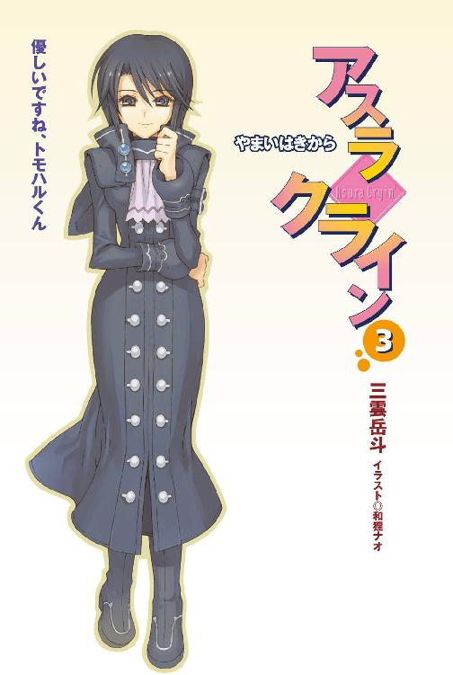
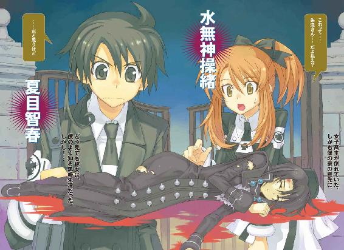
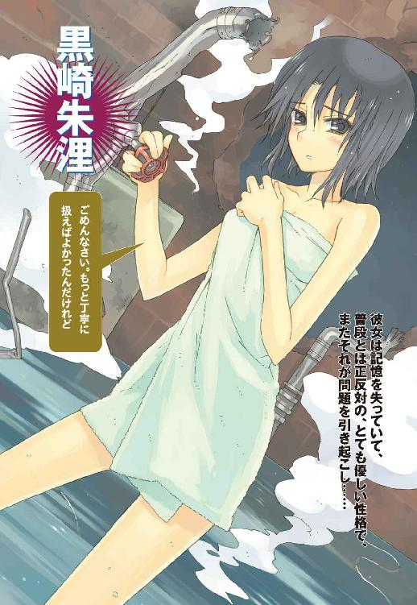
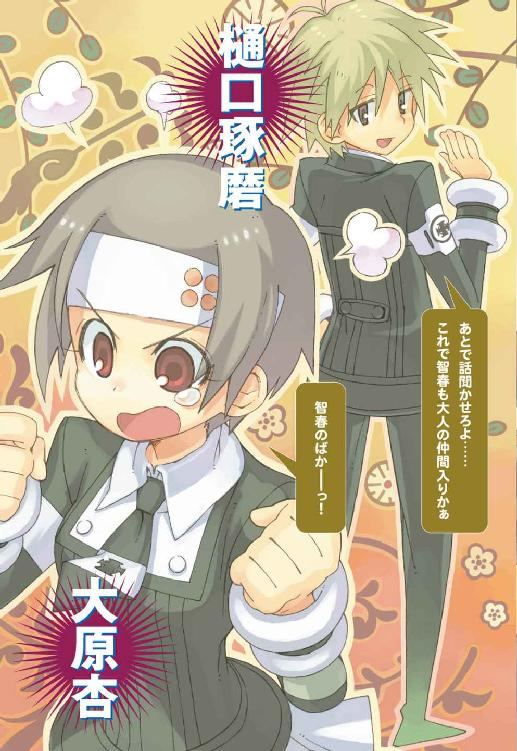
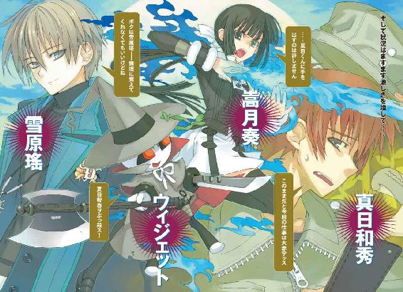
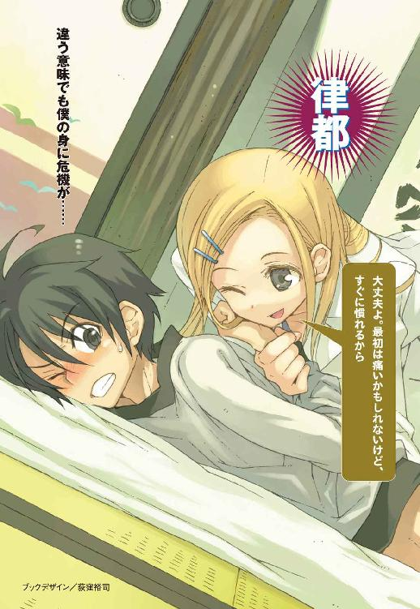
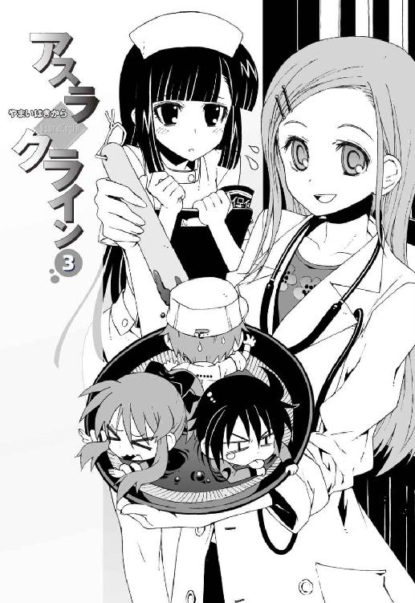
本書（電子版）に掲載されているコンテンツ（ソフトウェア／プログラム／データ／情報を含む）の著作権およびその他の権利は、すべて株式会社アスキー・メディアワークスおよび正当な権利を有する第三者に帰属しています。
法律の定めがある場合または権利者の明示的な承諾がある場合を除き、これらのコンテンツを複製・転載、改変・編集、翻案・翻訳、放送・出版、公衆送信（送信可能化を含む）・再配信、販売・頒布、貸与等に使用することはできません。
φ プロローグ
『──南蛮王孟獲とともに蜀軍と戦った、烏戈国の王といえば誰でしょう？』
操緒が僕に問いかけてくる。
色素の薄い身体を透かして、彼女の背後の景色がうっすらと見えている。教室の天井近くを重力などお構いなしに漂いながら、幽霊の少女は、机の上に広げた参考書をのぞきこんでいた。
「えと......兀突骨大王？」
『ピンポン、正解。じゃあ、次はね......あなたが道に迷っているとき、ウソしか言わない男とほんとうのことしか言わない男に出会いました。さて』
「......いや、その問題って中間テストの試験範囲じゃないだろ。どう考えても」
僕は握っていたシャーペンを放り出し、頬杖をつきながら操緒を睨んだ。
操緒は、バレたか、と残念そうに舌を出し、悪戯を叱られた子どものように笑う。それ以上文句を言う気力も失せて、僕は黙ってコーヒーをすすった。
放課後の化学準備室だった。
科學部の部室を兼ねた狭い特別教室には、どこかの遺跡から盗掘してきたとしか思えない悪趣味なオブジェが無数に飾られており、僕はその中央の作業机で問題集を睨んでいる。
部屋の中にいるのは、僕と操緒の二人だけ。
正確には一人と一体というべきかもしれない。操緒はどう見ても普通の人間ではないからだ。
彼女は射影体と呼ばれている。正式には、量子的に投影された副葬処女の疑似感覚入出力デバイス、というものらしい。そんなことをいわれてもなんのことやらさっぱりだが、つまりは幽霊のようなものである。透きとおっているし、宙に浮いてるし、気まぐれに勝手に姿を消したり、壁をすり抜けて現れたりする。
飛行機事故に巻きこまれて、僕の幼なじみだった水無神操緒という少女は行方不明になった。
そして、それ以来、僕は彼女の幽霊に取り憑かれている。
なんというか不幸な話である。いろんな意味で実に不幸だ。
夕焼けの空は茜色に染まり、風に吹かれて新緑の木々の枝が揺れていた。
勉強するには悪くない環境なのだろうが、しかし操緒は幽霊だからなのか生まれつきか、わがままで飽きっぽく、試験勉強の相方にはまったく向いていなかった。手伝ってあげると本人は言うが、むしろ邪魔されることのほうが多い。
僕の成績が悪いのは、もしかしたらコイツのせいではないのかとたまに思う。
『失礼だなあ......操緒が憑く前とたいして変わってないじゃない、智春の成績。いや、むしろ前よりよくなってる？』
「そんなわけあるか」
僕は嘆息。成績が上がってこの程度では、その前はどんなだ、と言いたくなる。
『んっ、だけど操緒がテスト中に答えを教えてあげたこともあったよね？』
たしかにあった。幽霊である操緒は他人の目には見えず、彼女が協力してくれればある意味カンニングし放題なのである。
しかし操緒の解答が正しいという保証はどこにもなく、実際、彼女が面白半分に教えてくれた答えは思いっきり全部デタラメだった。おかげでそのときの僕の成績は惨憺たるもので、追試と補習で貴重な夏休みが半分潰された恨みはまだ忘れていない。
とにかくそれ以来、僕は試験勉強だけは人並みに真面目にやろうと決めたのだ。
『でもさ、中間テストって来週だよね。めずらしいね、智春がこんな早くから試験勉強なんて。いつからそんな真面目になったの？』
「真面目じゃないからやってんだよ」
僕は投げやりに言い返した。この洛芦和高校は生徒会が公認のやつだけで三つもあるくらい生徒の自治権が強く、無法と紙一重なくらい自由な校風だ。
そのぶん実力主義の気風も強い。
つまりテストの成績が悪いと、情け容赦なく落第させられたりするらしい。
ただでさえ問題ありまくりの科學部などという怪しいクラブに所属している僕としては、せめてテストの成績くらい平均点をクリアしておきたいところなのだ。
「それに、うちの兄貴もこの学校の卒業生だろ」
『直貴くん？ それがなんか関係あるの？』
操緒が不思議そうに訊いてくる。
「いや、直接は関係ないんだけど。でも入学して最初のテストくらいは点を取っておかないとあいつと比較されるからさ」
『......あんま無理しないほうがいいんじゃない？』
なぐさめるような口調で操緒が言う。たしかにウチの兄貴は高校生のころから、企業や有名大学の顧問を任されていたくらいの天才少年で、僕だって本気でヤツと張り合おうなどとは思っていない。だからといって、弟の僕の成績があまりにも悲惨だったりすると、兄貴の過去を知っているご近所の目がうるさいのだ。
高一の一学期の中間テストなら出題範囲も知れている。とりあえずここでそれなりの点数を稼いでおけば、そのあとの生活が少しは楽になるだろう、というのが僕の計画なのだった。
『なんか後ろ向きな発想だねえ』
操緒が、はっ、とため息をついた。明らかに呆れたような顔をしているが、ほっといてくれ、と僕は思う。そういうことが言える人間は、非常識に頭のいい兄を持った弟の苦労を知らないのだ。
『んー......どうでもいいけど、そこのところの漢字、間違ってるよ。あと、こっちの年号も』
「え？ あれ......？」
『しっかりしなよ。勉強してる意味ないじゃん。なんだったら操緒が家庭教師してあげようか？ もちろんタダでとは言わないけど』
「ぐ......」
実に悔しいことに操緒のほうが僕より計算が速いし記憶力もいい。普通の人間だったころの彼女はけっこうな優等生だったのだ。
だからといって幽霊ごときに勉強を教えてもらうのは、はっきり言って屈辱である。
「でも......そうだな。誰かにちゃんと見てもらったほうがいいかもな」
一人でちょっと勉強したくらいで劇的に成績が上がると思えるほど、僕は自分の頭を信用していない。勉強の得意な誰かに教わるというのは、実は悪くない考えだと思う。
『誰かって？』
操緒が冷静に指摘する。後ろ向きな試験勉強につき合ってくれそうな暇な知り合い。そう言われてすぐに思い浮かぶ人間の数はそんなに多くない。
「ええと、樋口とか」
『......樋口がまともな勉強を教えてくれると思う？』
思わない。僕と同じ科學部員である樋口琢磨は重度のオカルトマニアで、英単語なんか勉強している暇があったら都市伝説のひとつでも覚えろ、などと真面目な顔で言い出しかねない。
「じゃあ、杏」
『杏ちゃん、陸上部の練習があるんじゃないの？』
「だったら嵩月......は無理か」
『無理、だよねえ。成績は悪くなさそうだけど』
操緒が真面目な顔で腕組みする。あの緊張しいで説明ベタな嵩月から数学の公式やら英語の文法やらを聞き出そうと思ったら、それだけで何日かかるかわかったものではない。
おまけに僕と嵩月が二人で話をしていると、なぜかいつも操緒が怒り出すのだ。そうなったらもはや勉強どころではない。
意外に適当な人材というのはいないものだと諦めかけて、ふと気づく。
勉強を教わるなら、同じ学年の知り合いにこだわる必要はないのではないか。
というよりも家庭教師というのは普通、年上の人間にお願いするものだ。
「そっか......最初から朱浬さんに頼めばよかったんだ」
僕の脳裏を、でたらめに美人な上級生の面影がよぎる。
科學部部長代理の二年生、黒崎朱浬。
噂では彼女の成績は常に学年トップクラスだという。なにを考えているのかよくわからない人ではあるが、見た目はおっとりした綺麗なお姉さんなので、家庭教師としては非常にポイントが高い。
ついでに言えば、僕はこれまで彼女のせいで、何度も死にそうなヤバい目に遭っているのだ。試験勉強を教えてもらうくらいの権利があって当然だと思う。もっと色々サービスしてもらってもいいくらいだ。
操緒がじっとりとした目つきで訊いてくる。
『なにかヘンなこと期待してる？』
「......してねーよ」
『まあいいけど。でも、遅いね。朱浬さん』
「ん」
うなずく。僕と操緒だけが科學部の部室に居残っているのには理由がある。授業が終わって家に帰ろうと思ったときに、いきなり朱浬さんからのメールで呼び出されたのだ。
樋口や嵩月が来ないところをみると、呼び出されたのは僕たちだけらしい。しかし、待ち合わせの時刻を一時間以上も過ぎて、朱浬さんはまだ現れない。
「悪戯って感じじゃなかったけどなあ」
携帯電話のメール画面を見ながら、僕はつぶやく。差出人はたしかに朱浬さんのアドレスになっているし、化学準備室に変な仕掛けがあったわけでもない。
『忘れられちゃったんじゃない？』
操緒があっさりと言ってくる。どうも納得いかないが、たしかにそうとしか思えない。
朱浬さんの携帯に電話をかけてみても、留守電に回されてしまうだけだ。進まない試験勉強にも飽きてきたし、そろそろ腹も減っていた。
仕方ない。帰るか。
僕がそんなふうに思いはじめたとき、ようやく誰かの足音が聞こえてきた。疲れたようにスリッパの底を引きずって、化学準備室に近づいてくる。
僕たちが振り返ったのと、準備室のドアが開いたのはほとんど同時だった。
「──夏目か。なにやってんだ、おまえ。こんな時間まで」
入ってきたのは朱浬さんではなかった。無精髭を生やした、白衣の男性教師。科學部顧問の市原である。鍵束を握っているところを見ると、市原は教室の施錠のためにやってきたらしい。
「部活......ってわけでもなさそうだな。急ぎの用事か？」
「いや、そういうわけじゃないんですけど。朱浬さんに急に呼び出されて」
「......黒崎が？ おまえを呼び出した？」
市原は妙な顔をした。金星人と夢で会話したとか、そんな話を聞かされたみたいな顔である。
「なんで黒崎がこんなところに呼び出すんだ？ あいつ今日、学校来てないぞ。休んでる」
「は？ 休み？」
「欠席届が出てる。一昨日から来てなかったと思ったぞ」
「......はあ」
僕は戸惑いながら操緒と顔を見合わせる。操緒は黙って肩をすくめた。
欠席していたはずの朱浬さんがいきなり僕を呼び出して、しかしやはり彼女は学校には来ていなかったということか。
単にからかわれたというわけではなさそうだが、さっぱりわけがわからない。
「とりあえずもういいか？ 教室の施錠を済ませたいんだが」
「あ、はい。帰ります」
僕は広げていた教科書などをカバンに詰めて、帰り支度を始めた。
結局、呼び出された理由は謎だった。朱浬さんが今どこでなにをしているのかもわからないままである。
気にならないわけではなかったが、それほど深くは考えてはいなかった。彼女のせいでまた面倒なトラブルに巻きこまれるくらいなら、待ち合わせをすっぽかされるほうが気が楽だ。
そう。認めよう。
そのときの僕はまだ気づいていなかった。
自分がすでにどうしようもなく厄介な事件に巻きこまれつつあることに。
それはのちに意外な形で判明することになる。
きっかけは、僕が彼女を鳴桜邸の庭先で発見したことだった。
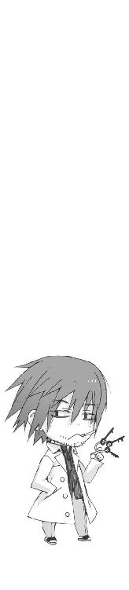
一章
女子高生が倒れていた。
怪我をしているらしく頭から血を流し、しかも全身ずぶ濡れだった。
身につけている衣服も、あちこち派手に破れている。明らかにトラブルの臭いがした。
見なかったふりをして通り過ぎれば面倒に巻きこまれることもないのだろうが、僕にはそれができない理由がふたつあった。
ひとつは、彼女が倒れていた場所が、僕の下宿の庭先だったこと。
そしてもうひとつは、倒れている少女が僕の知り合いだったことである。
『これって......朱浬さん......だよねえ？』
操緒が困惑した顔で訊いてくる。
「......だと思うけど」
僕は歯切れの悪い口調で肯定した。
すらりとした長身に整った顔立ち。そして季節はずれの黒ずくめの服装。
こんな目立つ女子高生が、同じ街に何人もいるとは思えない。どう見ても彼女は、僕のよく知っている科學部部長代理の黒崎朱浬だった。
しかし彼女が、こんな場所でこんなふうに倒れている理由がわからなかった。
鳴桜邸に用があったのなら朱浬さんは合い鍵を持っているはずだし、それよりなにより彼女が怪我をして行き倒れているというシチュエーションが想像できない。
「えっと......朱浬さん？」
彼女の脇に屈みこんで、おそるおそる訊いてみる。
僕が彼女に呼び出されて待ちぼうけをくらったのは昨日のことだ。
その朱浬さんが雑草に埋もれた芝生の上に、背中を丸めて横たわっている。
時刻は夜九時を過ぎたあたり。学校からそのままバイトに行って、それを終わらせて帰ってきたところである。そして朱浬さんは今日も学校を休んでいたはずなのだ。
そんなわけで僕には確固としたアリバイがあり、僕がいない間に彼女になにが起きたのか、まったく見当がつかなかった。
「あの......大丈夫ですか？」
返事はない。朱浬さんはきつく目を閉じたまま、身じろぎもせずに倒れている。
僕は掌がじっとりと汗ばむのを感じた。普段の朱浬さんの奇矯な言動に慣れているせいで、あまり実感がなかったのだが、もしかするとこれはかなり危機的な状況ではないのだろうか。
『まさか死んでたりしないよね？』
操緒がさらりと怖いことを言う。下宿の庭に知り合いの死体が転がっているなんて、そんなおっかない想像をさせるのはやめて欲しい。シャレにならん。
「大丈夫、生きてるよ」
僕は朱浬さんの口元に手をあてて、彼女の呼吸を確認した。規則正しく上下している胸元を見て、自分でも少しホッとする。顔色もそれほど悪くない。派手に血が出ていたので心配したが、頭の怪我もそれほど深刻な感じには見えなかった。とはいえ僕は医者ではないので、正確なところはよくわからない。
「救急車は......まずいんだろうな。やっぱり」
眠ったままの朱浬さんを見下ろして、僕は独りごちる。
普通に考えれば病院に運んで医者に診てもらったほうがいいのだろうが、朱浬さんの中身は、四肢や感覚器官の一部を機械に置き換えた機巧化少女なのである。まともな病院に彼女を運びこんだりしたら、大騒ぎになるに決まっている。
『んー......でも、いつまでもここにいるのもまずくない？』
操緒があたりを見回してつぶやいた。
言われてみれば、一人暮らしの男子の下宿の庭に血まみれの女子高生が倒れているというのは、かなり異常な状況だった。こんなところを近所の住人に目撃されたりしたら、間違いなく誤解されるだろう。警察に通報されるのは確実で、それどころか婦女暴行の現行犯で逮捕されかねない。
「とりあえずいったん家の中に運ぶか......」
『だね』
もう一度朱浬さんの横に屈みこんで、僕は彼女を抱き上げようとした。こういう状況とはいえ、意識のない女の子の身体に触るというのは、ちょっと気が引けるような嬉しいような。
朱浬さんの背丈は僕とほとんど変わらないが、彼女はモデルみたいな痩身なので、家まで運ぶくらいはまったく問題ないはずだった。だがしかし、
「ぐわ」
予想外の抵抗にバランスを崩して、僕は倒れた。朱浬さんを抱き上げるどころか彼女の上にそのまま覆い被さるような形になってしまった。
傍目にはふざけてやっているとしか思えなかっただろう。
『なにやってるの、智春？』
予想どおり、操緒が温度の低い視線で僕を睨んで言ってくる。
「......重い」
僕は短くひとことで説明した。
『は？』
「いや、なんかこの人メチャメチャ重いぞ」
『そっか。機械だもんね』
操緒が、うーん、と納得したようにうなずいている。
考えてみれば当然の話で、金属骨格の朱浬さんの体内にはミサイルやらショットガンやらの物騒な兵器が満載されているのだ。見た目どおりの重さであるはずがなかった。どうにか持ち上げられないほどではないが、確実に僕の体重よりも重い。
「く......なんか意外に重労働のような......」
僕は朱浬さんの腕を肩に回すと、彼女を背負ってよろよろと歩き出した。
鳴桜邸、というのが僕が借りている下宿の名前だ。レンガ造りの古い洋館で、建物はボロいが敷地は広い。だが今はその庭の広さが恨めしかった。玄関までのわずかな距離が異様に遠く感じられる。
そして何歩も進まないうちに、僕はなにかに蹴躓いた。
前のめりに再びぶっ倒れて、おまけに背負っていた朱浬さんのぶんの体重をモロにくらって、僕の身体は半分ちかく地面にめりこんだ。ろくに呼吸もできないまま、寝技から逃れようとあがく柔道選手のように手足をじたばたと振り回す。
『智春』
操緒が叫んだ。しかし操緒が見ていたのは、息も絶え絶えに起き上がる僕の顔ではなかった。
僕はのろのろと頭を巡らせてそれを見た。
朱浬さんの右手に、重くて固いなにかが握られている。
僕はそれに気づかずに朱浬さんを背負い上げて、そいつに足を引っかけて転倒したのだ。
なんだこれは、と僕は顔をしかめた。
銀色に輝く四角い箱──金属製のアタッシュケースだった。
大きさは通学鞄ほど。しかし見るからに分厚い頑丈そうな金属板に覆われており、朱浬さんの身体が重く感じられたのは、半分はこいつのせいらしい。
よほど大切なものなのか、朱浬さんは意識をなくしていても、がっちりと取っ手を握って離さない。彼女の衣服はあちこち破れてボロボロなのに、ケースには疵ひとつ残されていなかった。僕は前にも似たようなケースを見た記憶があった。
『ねえ。これって......』
操緒が苦いものでも食べたような顔で言う。
忘れもしない、イクストラクタと呼ばれていた、銀色の旅行用トランクケース。
二カ月前、入学式の前日に朱浬さんが運んできたあのトランクのせいで、僕たちはあれから何度も死にそうな目に遭わされたのだ。
僕は黙って首を振る。朱浬さんは黙って眠り続けている。
「............」
なんとなく嫌な予感がした。
○
朱浬さんの手からアタッシュケースを抜き取るのは、予想どおり手こずった。
力ずくではどうにもならなかったので、くすぐったり振り回したり関節技を仕掛けたりして、苦労してどうにか指をほどく。それからようやく彼女を家の中に連れこんだ。
とりあえず怪我人ということで、ベッドのある僕の部屋まで運んでいく。操緒が重大な問題点を指摘したのはそのときだった。
『濡れたままほっといたら風邪ひくよ』
「......え？」
朱浬さんを担いだまま、僕は廊下で立ち止まる。
庭先にぶっ倒れて長いこと放置されていた朱浬さんの身体は、ただでさえ冷えきってえらいことになっていた。濡れた服をそのままにしておくのは、たしかにまずい。
操緒は意識のない朱浬さんの顔をのぞきこみながら、
『服を着替えさせて身体も拭いて、あと傷の消毒もしといたほうがいいかも』
実にもっともなご意見だった。朱浬さんの背丈は僕とあまり変わらないので、替えの服に困ることもないだろう。だがしかし、
「着替えって......朱浬さんが寝てるのに誰が着替えさせるんだよ？」
『そんなの智春がやるしかないんじゃないの？』
「いや、でもまずいだろ、それ」
僕は焦って反論した。いくら相手が怪我人とはいえ、意識のない女子を部屋に連れこんで服を脱がしたり身体を拭いたりしてたら犯罪スレスレである。
そういうことをやってみたいという気持ちがまったくないといえばウソになるが、どうせ操緒の監視つきだし、なによりあとでそれがバレたときの朱浬さんの反応が怖ろしい。
『でも、ズブ濡れだよ。このままほっとくわけにもいかないでしょ？』
操緒がめずらしく真面目な顔で言う。今回はいつもと違って僕を困らせて楽しんでいるわけではなく、それなりに朱浬さんのことを気遣ってはいるらしい。考えてみれば、目の前で知り合いが行き倒れていたわけで、それは普通に心配するだろう。
「だけど、やっぱり誰か女の人を呼んできてやってもらったほうがよくないか？」
『誰かって、誰？』
訊き返されて、僕は言葉に詰まる。一人暮らしをしていて困るのはこんなときだ。うちの母親は僕が頼んだら来てくれるような甘っちょろい性格ではないし、意識不明の女性を僕が家に連れこんだなんてことを知ったら、あの義妹は間違いなく退くだろう。できれば朱浬さんのことをよく知っていて、面倒見のいい人物が望ましい。
「杏......はヤバいんだろうな、やっぱり」
さっきまで一緒にバイトしていた少女の顔を思い出しながら、僕はつぶやく。彼女なら家も近いし、頼めば来てくれないこともないだろうが、
『病院に連れてけって言われるよね。普通にこの状況だと』
そうなのだ。杏は朱浬さんの正体を知らない。となると、それが予想される常識的な反応だろう。それに普通人である彼女を、科學部がらみのトラブルに巻きこむのはやはり気が引ける。
「やっぱり嵩月に頼るしかないか。いいよな、操緒？」
僕は朱浬さんを背負ったまま、携帯電話を取り出しながら操緒に確認する。操緒は少し唇を尖らせながら、あまり気乗りしないような口調で、
『べつにいいけど、でも嵩月さんって携帯電話持ってないよね？』
「............」
そう言えば嵩月が携帯を使っている姿は見たことがない。当然、僕の携帯にも彼女の番号は登録されていない。
『どうする？ 潮泉のお爺さんの家に電話して呼び出してもらう？』
「いや、さすがにそれは......」
嵩月が住んでいるのは、彼女の祖父だという老人のお屋敷の離れだった。そして厄介なのはそのお祖父さんというのが、どうしようもない変わり者だということだ。
あの渦巻きジイさんの家に電話するだけでも抵抗があるのに、取り次いでもらった電話の中身がジイさんの孫娘を夜更けに呼び出すという用件では、なんというか問題がありすぎる。
『あと誰かほかに思いつく？』
「いや......あとは佐伯妹ぐらいしか」
朱浬さんの正体を知っている女子というと、あとはもう彼女くらいしか思いつかない。操緒は呆れたように息を吐き、
『あの人、朱浬さんの敵じゃないの？ 第一生徒会の関係者だし』
わかってるよ。言ってみただけだ。
『あのねえ。べつに変なことしようっていうんじゃないんだよ、介抱だよ？ そんな警戒しなくてもいいと思うんだけど』
「や、だけどさ、僕が本気で朱浬さんを脱がしてどうこうするのは、やっぱりまずいだろ。あとで責任とれとか言われても困るしさ。もしかしたら朱浬さんにも彼氏がいたりするかも」
中身はあれだが、これだけの美人である。彼氏の一人や二人いてもまったく不思議ではない。あとから出てきたその男に、怒られたり殴られたりするのは絶対お断りだ。
しかし操緒はニヤリと不敵に笑い、なぜか得意げな口調で言った。
『大丈夫。操緒がついてるよ』
意味がわかんねーよ、と僕は思った。そのときは。
「......どっちだ？」
暗闇の中で僕は訊いた。
『えーとね、そのまま真っ直ぐ。ちょい右。もうちょい右。あー、行き過ぎ。そう、そこ』
肩越しに聞こえてくる操緒の声に従って、僕はぎこちなく腕を動かした。やがて冷たい金属の感触が僕の指先に伝わってくる。
『そうそう。そのまま落ち着いてつかんで両側から力を入れて......』
まるで爆弾の解体作業をしているような緊張を味わいながら、僕は慎重に指に力をこめた。
パチンと金具が弾ける音がした。思わず身をすくませた僕の手の中で、それまで張りつめていたベルト部分が緩む気配があった。もっと薄っぺらくて頼りないものだと思っていたが、意外にかっちりした造りの金属ワイヤー入りの布製品である。
「次は？」
『えーとね、じゃあ、その右側の端をつまんだまま朱浬さんの肩を持ち上げて......こらそこ、変なとこ触らない！』
「わざとじゃないって。構造がよくわかってないんだよ！」
操緒がぎゃんぎゃんと喚くので、僕もつられて大声になった。緊張のしすぎで喉が嗄れ、脂汗がだらだらと背中を流れる。
触るなと言われても僕は今、厳重に目隠しをしたまま、操緒の指示だけを頼りに朱浬さんのブラジャーを脱がしている最中なのである。少しぐらいのミスは大目に見て欲しい。
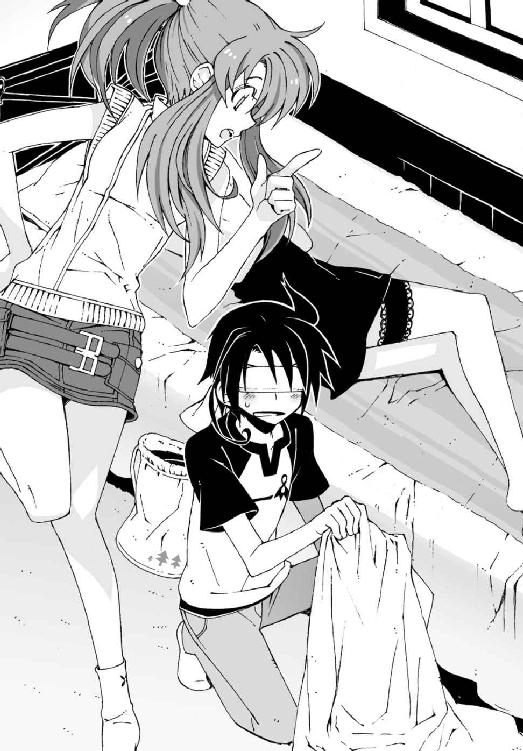
「もうちょっとマシなやり方はなかったかな......」
僕はため息混じりにつぶやいた。
『仕方ないでしょ。操緒は朱浬さんには触れられないし、智春はヘタレだし』
「......誰がヘタレだ」
朱浬さんの肩を浮かせて腕から肩ヒモを抜き取ると、ふいに抵抗がなくなって、僕の腕の中に彼女のブラだけが残った。水を吸ってしっとりと湿っているが、持ち主の体温がほのかに残っていて、これはこれで妙に生々しい。
「洗濯物は？」
『智春の足下のビニールバッグ。違う、左側』
「これか......」
濡れたままの朱浬さんの下着を、バッグに入れて封をする。朱浬さんの性格ならべつに気にしないような予感もするが、なるべく見ないよう僕なりに気を遣ってみたところだ。
しかしブラを脱がしたということは、朱浬さんは上半身になにも身につけてないということになる。考えてみるとこれはものすごい状況ではないのか。なにも見えないせいでよけいな想像が膨らんで、ヘンな気分になってきた。
『次、タオルね』
「わかってるよ」
僕は記憶を頼りに、用意しておいたバスタオルをつかみ上げた。寝ている朱浬さんの身体にかけて、とりあえず水気を拭き取ることだけを考える。しかし、タオル越しに触れた朱浬さんの肌の感触に、僕の理性は呆気なく動揺した。
柔らかい。
『智春──それ、枕だから』
「............」
だからこっちは本気で見えてないんだからさ。
「もっとちゃんと誘導してくれよ！」
『なんで操緒に怒るの？ もっと全然下だよ。うん、そこらあたり』
僕は操緒に言われるままに立ち位置を変えて、今度は無造作に手を降ろした。そして返ってきた妙な手応えに動きを止めた。厚手のタオルごしにもはっきりとわかる弾力感と、吸いつくような感触だった。この絶妙な曲面は──
『ちょっとなに思いっきり触ってんの!? 両手で!?』
「ち、違う！ ほんとに見えてないんだって！」
僕は手を離してのけぞった。とりあえず目隠しのまま激しく首を振る。今のは完全に不可抗力だ。わざとじゃない。わざとじゃないんですよ、朱浬さん。
『もういいよ。無理に拭かなくていいから、上からタオルだけかけてれば？』
「......そうするよ」
疲れ果てた声で僕は言った。今の一瞬で、なにかとてつもなく消耗した気がする。あれこれ悩むのはもうやめにして、これからは機械のように作業することだけを考えよう。
そんなふうに僕が決意した直後に、操緒が、
『それが終わったら、次は下だからね』
「え？ 下？」
『朱浬さんの腰のところに、スカートのファスナーとホックがあるから』
「はあ......」
それらを外して脱がせろということか。水を吸って重くなった朱浬さんのスカートは冷えきっていて、たしかに身体に悪そうな感じではある。だがいくら人助けのためとはいえ、こんな形で女の子のスカートを脱がす体験をすることになるとは思わなかった。
「機械......僕は人助けをする機械......」
平常心を保つため自分に言い聞かせながら、僕は朱浬さんのスカートに手をかけた。苦労して手探りでファスナーを開け、冷たく湿ったスカートを引き下ろす。
『あと一枚だけだから』
なんの気負いもない口調で操緒が言った。
あと一枚。たしかにそれはそうなのだろうが、その前に心の準備をさせて欲しかった。
スカートまでならまだいいが、しかしラスト一枚を脱がす過程で、朱浬さんにまったく触れないというのは不可能だ。そして現在の朱浬さんは、すでにほとんどハダカも同然なのだった。
気絶した朱浬さんの脚の間に身を乗り出して残り少ない彼女の着衣と格闘し、おまけに背後からは操緒に監視されている。こうなるともはや楽しいのか怖ろしいのかわからない。
そもそも、なんでこんなことをやっているのだろうと自分でもしだいに混乱してきて、頭の中が真っ白になり、
「あ......」
『どうしたの、智春？』
「まずい。鼻血が出そう......」
『ええっ!? ちょっとやめてよ、こんなときに！』
やめろと言われてやめられるのなら苦労はなかった。朱浬さんのパンツの端を握ったまま、とりあえず僕は作業を中断。顔を上に向け、気分を落ち着かせるために深呼吸を繰り返す。
『なんか関係ないこと考えてなよ。てか、ここに寝てるのって朱浬さんだよ。中身は鉤爪とかミサイルとかだよ』
「そ......そうだな」
朱浬さんの体内に内蔵されている武器の数々を想像して、僕は少しだけ冷静さを取り戻した。
たしかに朱浬さんは普通の人畜無害な女子高生などではない。よくできた人間型の大量破壊兵器だと割りきってしまえば、べつに彼女に触って興奮するような理由もなかった。
普段のおっとりした朱浬さんではなく、榴弾砲を振り回しながら高笑いしている彼女の姿を思い出そうと努力してみる。
しかし朱浬さんの場合は、機械化されてるといっても中途半端で、肝心な部分はほとんど生身だったりするのが問題なのだ。
そしてその直後、
「......ん」
僕の真下で、奇妙に色っぽい声がした。
それまで人形のように無反応だった朱浬さんが、僕の動きに合わせて身体をひねった。
おかげで僕は、楽にパンツを脱がすことができた。しかし、この場合それを幸運だといっていいのかどうか。脱力していた脚に力が入って、朱浬さんの呼吸の気配が変わった。どうやら意識を取り戻そうとしているらしい。
それ自体はめでたいことではある。しかしこの状況というのは、どう考えても最悪のタイミングなのではないのだろうか。
『どうしよう、智春』
操緒がうろたえながら訊いてきた。
「いや、どうしようって言われても......」
それはこっちが訊きたいくらいだ。
いくら朱浬さんでも、自分がいきなり男の部屋で目を覚ましたら驚くだろう。しかも彼女は素っ裸で、僕は今まさに彼女の服をすべて脱がそうとしているところだったのだ。
「んっ」
今度こそはっきりと朱浬さんの声がした。
僕は脱がしたての彼女のパンツを握ったまま、そのまま部屋の隅まで後退した。目隠しのせいで、ベッドの脚だの机の角だのに身体を打ちつけてめちゃくちゃ痛い。しかしそれを気にしていられる状況でもなかった。とりあえず必要なのは言い訳だ。なにをどう説明すればいいのだろうかと混乱しきった頭で必死で考える。
『智春が部屋を出てけばいいんじゃないの？』
操緒が僕に小声で言った。ああ、なるほど。
朱浬さんが意識を取り戻したのなら、僕が彼女の身体を拭いてあげる必要はもうないのだった。むしろ僕がいたほうが邪魔になる。あとは本人が身体を乾かすなり、着替えるなりしてくれればそれでいい。
「じゃあ、操緒。あとは頼む」
僕は早口でそう言って、急いで部屋を出ようとした。その瞬間、いきなり壁に激突してしまう。やはり自分の部屋といえども、目隠ししたままでは自由には動けない。
くそ、と口の中でつぶやいて、僕は顔に巻いてあったタオルに手をかけた。
『あ』操緒の声。『智春、今それ取っちゃダメ......』
「え？」
目隠しを乱暴に外した僕は、部屋の蛍光灯のまぶしさに目を細め、
「......ん」
そして次の瞬間、上体を起こした朱浬さんと目があった。
まだ焦点の少しあわない瞳で僕たちを見上げ、彼女はゆっくりと瞬きした。その間、僕と操緒は、強盗に銃を突きつけられた銀行員のように動けないでいた。
冷たく湿った朱浬さんのパンツを、握った手の中に隠したまま、僕はじりじり後退する。
「あの......」
「ま、待って。落ち着いて話を聞いてください、朱浬さん。これはですね──」
上擦った声で僕が弁明しようとした。そのとき、
「あっ」
朱浬さんの身体を覆っていたバスタオルがはらりと落ちる。
僕は硬直したまま為すすべもなく立ち尽くし、
逆流してきた鼻血を気管に吸いこんで、鮮血とともに咳きこんでぶっ倒れた。
○
『ほんとにさ......中学生じゃないんだから』
大げさに肩をすくめながら、操緒が言った。
僕は無言。たしかに、あの状況で鼻血を流すとは、ヘタレと呼ばれても反論できない失態だった。しかし僕の名誉のために言わせてもらえば、あれは直前に顔を壁にぶつけたのが直接の原因であって、ヤらしいことを考えていたとか、そういうことでは断じてない。
『でも、ほんと綺麗だよね。あの人』
操緒が感心したように息を吐く。そうだね、と同意するわけにもいかず、僕は黙って空を見上げた。住宅街の狭い空には、半欠けの白い月と初夏の星座が静かに浮かんでいる。
近所のコンビニに行った帰り道である。朱浬さんのための下着を買いに行ったのだ。
女物の下着の替えなんかは当然うちにはないので仕方ないのだが、そんなものを買っている姿を知り合いに見られたらどうしようと思って死ぬほど緊張した。疲れきった身体には、夜の街の静寂が心地よい。
このまま立ち止まって夜空をずっと眺めていたい気分だったが、もちろんそんな呑気なことを言ってられる状況ではなかった。意識を回復した直後の朱浬さんを、うちに置き去りにしてきたままなのだ。
『大丈夫なのかな、朱浬さん。一人で置いてきちゃったけど......』
どこか不安そうな表情で操緒が言った。とりあえず身体を温めてもらおうと、朱浬さんには買い出しの間に風呂に入っていてもらうことになっている。ハダカのままではゆっくり話もできないし、というわけで僕は、彼女が行き倒れた事情も訊かずにパンツを買いに出かけたのだ。
「怪我もたいしたことなかったみたいだし、そんな心配することもないと思うけど」
僕は投げやりな口調で言った。バイト帰りで疲れていたところに、朱浬さんを運んだり脱がしたり流血したりで、精神的にも肉体的にも想像以上に消耗していた。他人のことまで心配している余裕は正直あまり残ってない。
『んー......だけど。今日の朱浬さん、少しヘンじゃなかった？』
「......あの人の行動が普通だったのなんか見たことないけど」
ずぶ濡れのまま人の家の庭先に倒れているという時点で、今日の彼女は明らかに異常である。ヘンとかヘンじゃなかったとか、今さら考えるまでもない。
『そういうんじゃなくって、大人しかったっていうか、よそよそしかったっていうか』
「そうかなあ......」
僕は目覚めた直後の朱浬さんの態度を思い出そうとした。言われてみれば、どこかぼんやりした様子で、いつもの押しの強さは感じられなかったかもしれない。
しかし素っ裸で僕のベッドに寝ていたにもかかわらず、まったく動揺してなかったし、僕の鼻血を手当てしてくれたのも実は彼女である。自分が倒れていた理由もろくに説明しないまま、嬉しそうに人ん家で風呂に入っているというのも、いかにも朱浬さんらしい態度だった。
「......気のせいじゃないか？」
僕がそう言うと、操緒はむう、と不服そうに唇を尖らせた。
『智春、忘れてるでしょ？』
「え？ なにを？」
『朱浬さんが持ってた銀色のケース。あれっていつかのトランクにそっくりじゃない』
「あ......」
忘れていた。朱浬さんが気絶しても握りしめて離さなかった謎ケース。あれは、たしかに《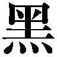鐵》を封印していたイクストラクタとかいう装置によく似ていた。
『前にあたしたちを襲ってきた連中は、例のトランクを狙ってたんでしょ。だったら今度も、朱浬さんが襲われた原因ってあのヘンなケースなんじゃないの？』
「ああっ......」
僕の背中にぞわぞわした感触が走った。それはものすごくあり得そうなことだった。
朱浬さんが負傷していたということは、当然どこかに彼女を傷つけた犯人がいるはずなのだ。しかも、あの人間兵器の朱浬さんを傷つけるような相手である。絶対にまともな人間ではない。彼女と同等以上の戦闘力を持つ化け物ということになる。
「って、まさか第一生徒会とか......？」
『それはどうかわからないけど......そうかも』
操緒が神妙な口調で言う。
洛芦和高校第一生徒会の会長、佐伯玲士郎は《翡翠》と名付けられた機巧魔神の演操者だ。おまけに彼らは朱浬が所属する第三生徒会と敵対しており、僕たちを巻きこんで朱浬さんと派手な銃撃戦を繰り広げたこともある。
「だったら朱浬さんを一人で置いてきたのってまずくないか？」
鳴桜邸に戻ったら朱浬さんが襲撃されていた、なんてことが普通にあり得るということか。気づいてたのなら教えてくれればよかったのに。
『そうだけど、でもパンツ買わないってわけにもいかないし』
まあ、たしかに。
しかし、さすがに不安になってきた。前回のトランク騒ぎのときも、僕はあの家で何度も死にそうな目に遭ったのだ。いつもならそれほど心配しないが、今の消耗した朱浬さんでは、佐伯兄の機巧魔神なんかと戦うのは無理だろう。
『そういえばあのケースってどうしたの？』
「いや......玄関にそのまま放り出しといたと思ったけど」
『ふーん』
操緒は、意味ありげな表情でそうつぶやいたきり沈黙した。僕は彼女の横顔を見上げ、
「なんだよ？」
『うん......』
なんだそれ。気になる。言いたいことがあるのなら言って欲しい。
『んー......あのね、さっきからちょっと気にしてたんだけど』
「え？」
『あれって、うちの方角じゃない？』
操緒が空中に浮かんで指さした方角を見て、僕は表情を凍らせた。寂れた住宅街の一画から、白煙が派手に噴き上がっていた。時折、暴走バイクみたいな異音も響いてくる。
「わあっ！」
僕は思わず絶叫して、鳴桜邸の方角へと駆け出した。
家の中は悲惨なことになっていた。窓という窓から白煙が噴き出し、焦げ臭い異臭が鼻をつく。玄関を開けると、古い洋館の館内には、むっとするような熱と湿気が立ちこめていた。
「なにこれ......湯気？」
白煙に視界を奪われた操緒が、顔をしかめながらつぶやいた。
暗い廊下に充満していたのはただの煙ではなく、温泉地などで噴き出している高温の蒸気によく似ていた。なにが起きているのかわからない。新手の機巧魔神の能力なのだろうか？
「──朱浬さん！」
廊下の奥に向けて僕は叫んだ。玄関には銀色の謎ケースが、僕が放り出したままの状態で転がっていた。ということは、狙われているのは朱浬さんのほうなのだろうと思う。
僕は靴を蹴散らして家の中へと入っていった。しかしそれから何歩もいかないうちに、いきなり足を滑らせて転倒した。手に触れたぬめりとした感触に悲鳴が漏れる。
「熱っちっ！」
お湯だった。
白煙で視界を遮られて気づかなかったのだが、廊下一面に熱湯があふれ出していた。立ちこめる蒸気の原因は、どうやらこの熱湯らしい。しかも尋常な量ではない。うちの地下から温泉でも噴き出したのかと思ったくらいだ。
「朱浬さん──先輩！ どこです!?」
僕は湯気を振り払いながら、廊下の奥へと進んでいった。熱湯が服に浸みこんでメチャメチャ熱いが、このまま彼女を放っておくわけにもいかない。
『智春、こっち！』
湯気の中から、操緒の声が聞こえた。めずらしく戸惑っているような気配がする。声が聞こえてきたのは風呂場の方角。熱湯が流れてくるのも、やはり同じ方向だ。
足首まで熱湯に浸かりながら、僕は廊下を手探りで進んだ。
この蒸気の中では、もし敵が潜んでいてもわからない。爆発寸前のエンジンみたいな異音が鳴り響いているのも気にかかる。鉄が焼けるような臭いもしだいに強くなってきた。しかし銃撃戦などが行われている形跡はなかった。
やがて湯気の切れ間に、ぼんやりと立ち尽くす朱浬さんの姿が見えた。
バスタオルを巻いただけの無防備な姿で、彼女は困ったような表情を浮かべている。
「朱浬さん、大丈夫ですか......？」
声をかけた僕に気づいて、朱浬さんが振り返る。
彼女の右手には、なにか部品のようなものが握られていた。パイプ状のものが付属した銀色の金属部品で、パイプの部分は途中で真っ二つに折れている。
それがなんの部品なのか理解する前に、操緒がふいに僕の前に現れて叫んだ。
『──智春、伏せて！』
「はっ？」
突然そんなことを言われて対応できる高校生など、そうそう世の中にいるはずもない。僕が間の抜けた顔で訊き返した直後、
「ぶわっ！」
間近で起きた爆発の衝撃に、僕の身体はひとたまりもなく吹き飛ばされた。
レンガ造りの風呂場の壁が、がらがらと崩壊していく音がした。頭上から降りそそぐ熱湯をもろに浴びて、僕は水浸しの床の上をのたうち回る。
爆発は一瞬で収まったらしいが、地鳴りのような振動はしばらく続き、ものが壊れる嫌な音色が次々と連鎖して広がっていった。
打ちつけた後頭部を押さえたまま、僕は起き上がれずに弱々しくうめいた。無事だったのは幽霊の操緒と、柱の陰に隠れていた朱浬さんだけらしい。
『......生きてる、智春？』
ふわふわと僕の頭上に降りてきて、操緒がおそるおそる訊いてきた。こういうシチュエーションにも、最近は少し慣れてきた気がする。
「死んでたまるか......なんだよ、今の？」
ずぶ濡れの上体を起こしながら訊き返す。操緒はちょっと言いよどみ、
『お風呂の湯沸かし器が爆発したんだよ』
「爆発ぅ？」
僕はあわててボイラーを置いてあったあたりを眺めた。そこにはボイラーの残骸とおぼしき壊れた機械と、崩れ落ちた瓦礫の山だけがあった。外部からの攻撃を受けたというより、異常運転を続けた挙げ句に力尽きて爆発した、といった雰囲気だった。家中に充満していた異臭や異音の正体も、おそらくその異常運転だ。
ボイラーの残骸からガスが漏れているらしく、今度はガスの臭いが漂ってきた。僕は破れた風呂場の壁から、ガスの元栓を締めに外に出た。ついでに水道の元栓も締めることにする。
勢いよくあふれ出していた熱湯の奔流が、いつの間にか冷水に変わっていた。
「......なにがあったんです？」
風呂場に戻って、バスタオル姿の朱浬さんに訊く。朱浬さんが右手に持っていたのは水道管の一部と、引きちぎられてねじ曲がった水道の蛇口だった。
「あの......」
なんともいえない奇妙な表情を浮かべて、朱浬さんは言った。
「お風呂にお湯を注ぎ足そうと思って、お湯の蛇口をひねってみたんです。そしたら......」
「水道管ごとちぎれちゃったわけですか？」
「ええ。古くなって傷んでたんだと思うんですけど......」
信じられないというふうに手に持った蛇口を見つめて、朱浬さんは首を振る。
「......湯沸かし器は？」
「えーと、水道管がちぎれてお湯が噴き出してきたから、せめて湯沸かし器だけでも止めようと思って操作したら、これがボキッって」
そう言って朱浬さんは左手を開く。
彼女の掌に握られていたのは、もぎとられたボイラーの操作ダイヤルだった。おそらくこの部品が壊れたせいで、ボイラーの異常運転が始まったのだろう。
熱湯が廊下一面にあふれていたのも、ボイラーの爆発も、敵の襲撃でもなんでもなく、要するに朱浬さんが風呂場の設備を破壊したのが原因だったということか。なんだそれ。
僕は脱力してその場にへたりこんだ。
半機械化された朱浬さんの腕力ははっきりいってデタラメだ。彼女がその気になれば、老朽化した鳴桜邸の水道管くらい、あっさり引きちぎることができるだろう。しかし、なんでまた彼女は、入浴中に風呂場を壊したりなんかしたのだろう。
「ごめんなさい。もっと丁寧に扱えばよかったんだけど、まさか、こんなに脆いとは思わなかったから」
申し訳なさそうな顔で朱浬さんが言う。その表情と言葉遣いに僕は強い違和感を覚えた。
いくら老朽化してたといっても、ちょっと握ったぐらいで壊れるほど水道の蛇口はボロくはなかった。おまけに、朱浬さんの口から「ごめんなさい」なんて言葉が出るとは、胡散臭くて仕方ない。
『......ほら、やっぱヘンでしょ。今日の朱浬さん』
操緒が勝ち誇った様子で胸を張った。
たしかにこれは普通じゃないかもしれない。ヘンというよりも別人のようだ。
朱浬さんは不思議そうな表情で、自分の手の中で折れ曲がった蛇口を見つめている。圧倒的な怪力で歪んだ金属パイプ。彼女が意味もなくこんなことをするとは思えないが──
もしかして今の朱浬さんは、自分の力を加減できなくなっているんじゃないだろうか。
僕がそう思いあたったとき、朱浬さんの身体がぐらりと傾いた。
「朱浬さん!?」
僕はあわてて彼女を支えた。修理費だってタダじゃないのだ。これ以上、建物を壊されたらたまらない。
バスタオル姿のままだったが、朱浬さんは抵抗するでもなく、僕の腕に体重を預けた。掌に伝わってくる彼女の異常な体温に、僕は思わず目を剥いた。
「ちょっと、これって......熱があるんじゃ!?」
「よくわからない......大丈夫だと思うけど」
おっとりとした口調で朱浬さんが言う。しかし舌が上手く回っていない。絶対に大丈夫なんかじゃない。よく見れば彼女の頬は上気したように赤く、呼吸もだいぶ乱れていた。
考えてみれば彼女は僕が見つけるまで、ずぶ濡れのまま屋外に倒れていたわけで、体調を崩してもまったく不思議ではなかったのだ。
「ありがとうございます」
背後から抱き支えている僕を振り向いて、朱浬さんはおっとりと微笑んだ。そして、
「あの......お兄さんのお名前は？ どうしてさっきからそんなに親切にしてくれるんですか？」
「なに言ってんですか、朱浬さん。こんなときにふざけないでくださいよ」
僕はため息をつきながら、彼女を水浸しの脱衣所から連れ出した。
とりあえず朱浬さんが抵抗しないでいてくれて助かった。力の加減ができない今の彼女に暴れられたら、命がいくつあっても足りない。
僕は朱浬さんを階段まで運んでいく。二階の僕の部屋までたどり着ければ、ベッドは無事に残っているはずだ。ややこしいことはあとで考えることにして、せめて今夜はさっさと眠って元気になってもらいたい。これ以上の面倒事に巻きこまれるのはまっぴらだ。
だがしかし、荒い息を吐きながら彼女は言う。
「......それとさっきから気になってたんですけど......朱浬さんって誰ですか？」
「は？」
なにを言ってるんだ、この人は。今さら他人のフリでもするつもりなのか？
悪いけれど、これだけの長身で美人で、しかも身体のあちこちが機械化されている物騒な女子高生など、世界中捜してもそう何人もいやしない。冗談ならもう少し時と場所を選んで──
「紫浬です」
ため息のような声で彼女は、僕の耳元に囁いた。なんですと？
「わたしの名前。麻波中学二年の黒崎。黒崎紫浬......」
そう言ったきり彼女は、ベッドの上に倒れこんだ。
一度だけ仰向けに寝返りを打って、そのまま寝息を立て始める。
僕はその寝姿を唖然として眺めた。はだけたバスタオルの隙間から、彼女の胸の谷間や白い太腿がのぞいていたが、それを気にする余裕すらなかった。黒崎紫浬？
『どういうこと？』
色素の薄い瞳を大きくして操緒が訊いてくる。
そんなこと訊かれても僕にわかるわけがない。すっぽかされた約束と行き倒れ。謎ケース。そして黒崎紫浬と名乗った彼女──なんだか頭が痛くなってきた。
おまけに家の中はまだ水浸しのままだし、さっきの騒動で僕の服までずぶ濡れになってしまっている。このまま僕のほうが倒れてしまいそうだ。
『智春、廊下とか拭いてお風呂の後片づけしないと』
しかし情け容赦なく操緒の指示が飛ぶ。わかってるよ、やります。やるけどね。
「......っくしゅ！」
僕は大きくクシャミを漏らし、肩を落として後片づけのために階段を降りていった。
時刻はいつの間にか深夜零時を回っていた。
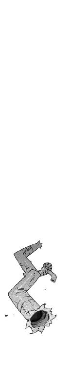
二章
翌朝、僕は少し遅れて学校に着いた。
寝不足気味で、なんとなく身体もだるかった。浸水した廊下の後始末で、夜中まで水仕事をしていたせいだと思う。しかもひとつしかないベッドを紫浬さん（自称）に貸していたので、僕は薄っぺらい毛布一枚で寝る羽目になった。鳴桜邸のリビングの古いソファは、安眠には向いてないことがよぉくわかった。
「ぐしっ！」
昇降口の靴箱に向かって、僕はくしゃみを連発した。熱っぽい頭を振りながら、赤くなった鼻の頭をこする。
『......智春、風邪ひいた？』
操緒が、ものめずらしそうに僕の顔をのぞきこみながら訊いてくる。季節はずれなのであまり実感してなかったが、言われてみればたしかに風邪っぽい。
「いや......まあ大丈夫だよ」
『ハナミズ出てるよ、ハナミズ』
「う......」
僕は制服のポケットに手を突っこんでティッシュを探した。たしかに持ってきたと思ったが、こんなときに限ってなかなか出てこない。ずるずる鼻をすすりながら僕が焦っていると、
「旦那っ、お困りのようですなっ」
無闇に明るい声とともに、横からポケットティッシュが差し出されてきた。
振り返ると、制服にジャージの上着を羽織った小柄な女子生徒が、にこやかに微笑みながら僕を見ていた。同じクラスの大原杏だ。陸上部の朝練が終わったところらしい。
「あ、サンキュ」
僕はありがたく出されたティッシュを受け取った。駅前で配っている消費者金融のポケットティッシュだったが、杏のカバンに入っていたせいか、かすかに甘いいい匂いがした。しかし、そのありがたみを感じる余裕もなく、僕はずびずびと鼻をかむ。
「大丈夫、智春？ 風邪ひいた？」
杏が靴を履き替えながら、さっきの操緒と同じセリフで訊いてきた。
「でも昨日まではなんともなかったよねえ。どうしたの？ 試験勉強で無理したとか？」
「いや。それが昨日は試験勉強どころじゃなくて......」
「は？」
怪訝顔で杏が見返してくる。僕はあわてて頭を振った。行き倒れの朱浬さんを拾ったことを、杏に知られるのは色々とまずい──気がする。
「あ、だからつまり勉強が進まないって話。頭悪いからわけわかんなくて。はは......」
「......そうなの？」
不自然に笑う僕を見上げて、杏がぱちぱちと目を瞬いた。
「ふーん、だったら勉強会やる？ 樋口とかも誘って、智春ん家で。今日からうちの部も休みなんだよねっ」
「え、今日!? それはダメだ、絶対ダメ」
僕は激しく首を振る。杏の申し出はありがたいが、今うちに樋口なんかを連れてこられたら大変なことになる。
杏は、あからさまに挙動不審な僕の反応に、むうっと目を細め、
「いや、ほら。杏たちに風邪をうつしちゃったら悪いしさ」
僕は苦しまぎれの言い訳で彼女を説得した。杏は、あー、と納得して小さくうなずき、
「それもそっか。智春も無理しないで休んだほうがいいかもねっ。あ、そのポケットティッシュは智春にあげるよ。じゃあ、あたしは着替えてから教室に行くね」
「ああ、うん」
元気よく駆け出していく杏を見送って、僕はぐったりと靴箱にもたれた。なんで僕がこんな余計な気を遣わなければならないのか。
体調が悪いのを自覚したせいか、なぜか妙に疲れてしまった。できることなら、このまま帰って寝ていたい。しかし今日は、どうしても学校でやっておかなければならない用事があった。僕は重い身体を引きずるようにして教室に続く階段を上った。
『もう。しっかりしなよ、智春。へなちょこだなあ』
ふらつく僕を見て、操緒があきれたように言ってくる。そういう自分は重力など無視して、僕の肩につかまってふわふわと浮かんでいた。さっきから僕の頭が重いのは、こいつに憑かれてるせいではないかとも思う。
「くそ、操緒はいいよな。バカと幽霊は風邪ひかないしな」
『......なによ、その言い方？ そんなにつらいのなら保健室で寝てたら？』
「いや、それだったら無理して学校に来た意味ないし」
僕は苦労して階段を上りきって、自分の教室へと向かった。友人の樋口琢磨の姿を探す。なぜか情報通のあの男に、黒崎紫浬なる人物のことを訊こうと思ったのだ。
始業前の教室には、六割ほどの生徒が揃って賑やかな空気が漂っていた。
樋口は、自分の席に座って退屈そうに雑誌をめくっていた。試験前なのに余裕の態度だが、意外にも樋口は成績がいいので、焦る必要もないのだろう。実にうらやましい話である。こうやって人は世の中の不公平を学習していくんだろうな、と僕は思う。
教室に入った僕に気づいて、樋口はおもむろに顔を上げた。読みかけのカメラ雑誌を置いて、ちょっと驚いたように目を丸くする。
「智春？ おまえ顔が死んでるぞ？ 大丈夫か？」
「うん......まあ、ちょっと寝不足なだけ」
そんな一目でわかるほど体調悪そうに見えるのか、と僕は軽くため息をついた。
「それより、訊きたいことがあるんだけどいいかな。朱浬さんのことなんだけど」
「部長代理？」
樋口は少し怪訝そうに身を乗り出し、それからポン、と手を打った。
「ああ、心配すんな。あの人が野球部のキャプテンとつき合ってるって噂はデマだった。あれは野球部のキャプテンがよその学校のツレに見栄はって流したただのウソだ」
「......そんなの心配してないよ」
というか、そんなロクに広まってもいない噂を気にしてるのは樋口だけだと思う。いったいどこで仕入れてきたんだそんなネタ。
「そうじゃなくて、朱浬さんの家族のことって知ってる？」
「家族って？」
「たとえば朱浬さんのお姉さんか妹さんが、うちの学校にいるとかいないとか......双子かも」
「なんだそれ？ 誰が言ってんだそんなこと？」
「いや、誰がってこともないんだけど......」
実は本人がそう主張している、というのも、なんというか異常な話ではある。曖昧に言葉を濁した僕を、樋口は興味をなくしたように見つめ、
「あんな目立つ顔が二人もいたら、今ごろとっくに噂になってんだろ。なのに聞いたことないってことは、いないんじゃねえの、そんな人？」
だよな。僕もそう思う。
「じゃあさ、黒崎紫浬っていう名前に聞き覚えは？」
「黒崎......紫浬？」
樋口はめずらしく少し真剣な顔をした。なにかを思い出そうとするように、額に手をあてて考えこむ。
「知ってるの？」
「いや......どっかで聞いた気がするんだけど、気のせいかもしれん。つーか、少なくともうちの学校には、そんな名前の生徒はいないと思う」
「そうか......」
樋口がそう言うのなら、たぶん信じていいのだろう。
「わかった。ありがとう」
とりあえず樋口にはもう用はない。礼を言って僕は自分の席に向かおうとした。しかし僕の制服の裾は、いつの間にか樋口にがっちりと握られている。それはまあ、こういう話の流れで、樋口が興味を抱かないということはあり得ないだろうけど。
「待った、智春。で、誰なんだ、その黒崎紫浬って女？ どこで会った？」
「いや、会ったというか、拾ったというか」
「拾ったぁ？」
「いやでも、実在するのかどうかも怪しいんだよ。本人がそう主張してるだけだから」
「......なに言ってんだ、おまえ？」
樋口が不審な眼差しを向けてくる。無理もない。僕自身、状況がよくわかっていないのだ。なにをどう説明したものか真剣に迷う。
そのときタイミングよく予鈴がなった。朝のＳＨＲの時間である。その話はあとで、とかなんとか適当なことを言ってごまかし、僕はその場を逃げ出した。忘れないうちにもうひとつやっておきたいことがある。
「──嵩月」
僕は机の上に荷物を投げ出し、前の席に座っている嵩月奏に声をかけた。あまり他人に聞かれたくない話なので、つい不自然なくらいに声が小さくなる。
「あっ......夏目、くん......？」
長い黒髪を揺らして、嵩月奏が振り向いた。突然声をかけてしまったせいか、普段よりも更に緊張した様子で目を大きく見開いたまま、
「......おはようございます」
深々と頭を下げて挨拶する。
「あ、おはよ」
僕もつられて頭を下げた。話を切り出すタイミングを外されるというか、あいかわらずペースのつかめない子だ。会話を仕切り直そうと僕は深く息を吐き、その拍子に小さく咳きこんだ。
「......風邪？」
心配そうに眉を上げて嵩月が訊いてきた。
「ああ、うん。たいしたことないんだけど」
嵩月があまりにも不安げな表情を浮かべるので、僕は無理して笑ってみせた。つ、疲れる。
「それより、ちょっと頼みがあるんだよ。今日の放課後、うちに寄ってもらえないかな」
「夏目くんの家に？」
「うん。僕と操緒だけじゃ手に負えない問題が起きてて......あ、できればほかの人には内緒で」
さっきの杏との会話を思い出して、僕はさらに声を潜めて付け加えた。杏の誘いを断っておいて嵩月をうちに呼んだ、なんてことがバレると、ますます話がややこしくなる。
「あー......わかりました」
普通なら断られても仕方ない怪しげな依頼だったが、嵩月はあっさりと受け入れてくれた。
「ありがとう、助かる。詳しい事情は、うちに来てくれたときに説明するから」
僕は胸の前で手を合わせて嵩月を拝んだ。ほかのクラスメイトに聞かれていなかっただろうな、と周囲を見回すと、ちょうど担任の柱谷教諭が廊下を歩いてくるのが見えた。
「あっ......待って」
席に戻ろうとした僕を、嵩月が呼び止めた。怪訝に眉を寄せる僕の前で、嵩月はカバンの中からポーチを取り出し、その中に入っていたものを差し出してきた。
新品のマスクとのど飴だ。
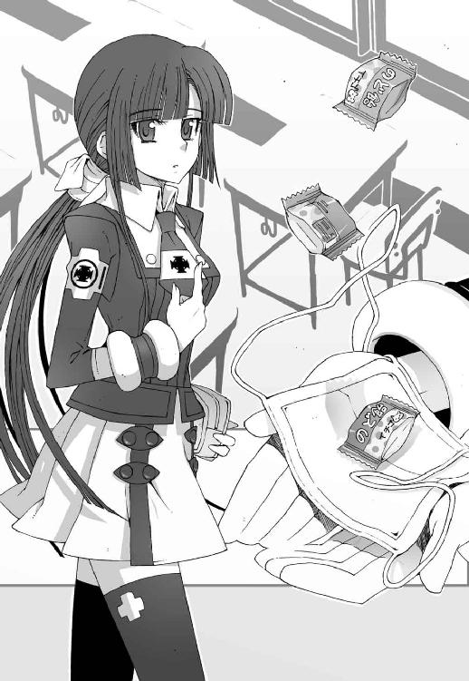
「よかったら......これ」
「え......あ、ありがとう」
僕は、唖然としながら手渡されたマスクを受け取った。たしかにこれはありがたい、が──
「......嵩月、いつもこんなの持ち歩いてるの？」
気になったので思わず訊いてしまう。すると嵩月は、
「保健委員だから」
自分の胸を指さして淡々とそう言った。たしかに彼女はうちのクラスの保健委員に選ばれていたはずだが、だけどこれって保健委員の仕事とはあまり関係ないと思う。
そうこうしている間に柱谷が教室に入ってきて、ＨＲが始まった。
『嵩月さんって......変わってるよね』
僕が受け取ったマスクとのど飴を見下ろして、操緒が言った。
幽霊のおまえが言うな、と僕は心の中だけでツッコミを入れた。
○
授業の終わりを告げるチャイムで目が覚めた。
二限目の途中から昼休みまでの記憶が、あまり残ってない。真面目に授業を聞いてるつもりだったのに、いつの間にか爆睡していたらしい。
『さっきの授業から試験に出す、って言ってたよ』
まだ少し寝ぼけていた僕の耳元に、操緒がそんなことを囁いてきた。
おかげで一気に眠気が消えた。知っていたのなら起こしてくれればよかったのに。
『ん......だけど体調が悪そうだったし、寝かせておいてあげたほうがいいのかなと思って』
「なんでこんなときだけ気を遣ってくれるんだ......」
僕は情けない表情で肩を落とした。くそ、試験前の大事な授業だったのに。
しかし済んでしまったことで操緒に文句を言っても仕方ない。あとで樋口あたりにノートを借りて、ついでに勉強も教えてもらおう。
とりあえず今はそれよりも、抱えてるトラブルを片づけるのが先決だ。
「あれ？ 智春、メシ喰わねえの？」
帰り支度を始めた僕に気づいて、樋口が不思議そうに訊いてくる。
「今日は帰るよ。先生に訊かれたらそう言っといて」
「ふうん......ま、調子悪いんなら仕方ねえな。あとで見舞いに行ってやるよ」
購買部のパンの袋を握ったまま、樋口は平然とそんなことを言った。
なんだって？
僕はあうあうと唇を震わせた。冗談ではない。鳴桜邸には今もまだ紫浬さん（自称）が寝ているのだ。ましてや昨晩、僕がうちに彼女を泊めたなんてことが樋口にバレたら、どんな騒ぎになるかわかったものではない。おまけに今日の放課後には、嵩月もうちに来てもらうことになっている。
「いい。いらない。見舞いなんて、そんな......遠慮する」
「なんだそれ？ 人がせっかく気を遣ってやってんのに」
「いや、だからそれが迷惑というか......ほら、べつに家で寝てるだけだし。見舞いに来ても美人の看護師がいるわけでもないし」
「む......そういやそうだな」
樋口がわけのわからない方向で納得する。
『美少女の幽霊ならいるけど』
と操緒。いいからオマエは黙ってろ。てか、美少女とか自分で言うな。
「ま、智春がそう言うんならやめとくか」
樋口があっさり引き下がってくれたので、僕はほっと息をついた。さっきから、ちらちらとこちらを気にしている嵩月に挨拶もできないのは申し訳ないが、樋口がこれ以上余計なことを言い出さないうちにと、僕は急いで教室をあとにした。
半日しか授業を受けていないのに、なんというか異常に疲れていた。
できるなら本当に帰ってこのまま眠りたい。しかし僕にはやらなければならないことがまだ残っている。
「......やれやれ」
重い身体を引きずって僕は渡り廊下へと向かった。その先には二年生の校舎があった。三階のほぼ中央に位置するのが、朱浬さんの所属する二年四組の教室である。
『わざわざ確かめるほどのことでもないと思うんだけど』
操緒が気乗りしないような口調で言ってくる。
「いやでも、本人があんなふうに言ってるし、とりあえず確認するだけでも」
僕はやる気のない声で彼女を説得する。
そもそもの問題はやはり紫浬さん（自称）のことだった。熱を出して気絶するように眠った彼女だったが、明け方にはだいぶ元気になったらしい。僕が様子を見に行ったときには、すでに彼女は着替えを終えて、ものめずらしそうに部屋の中を見回していた。
体力が回復したのは喜ばしいことだが、しかし問題は山積みだった。
なんといっても最大の厄介事は、朱浬さんが朱浬さんではなくなっていたということである。
「紫浬です」
おかゆを作って運んでいった僕に、やはり彼女はそう名乗った。
黒崎紫浬。五月十六日生まれの十四歳。麻波中学の二年生。ペットとして飼っていた犬の名前は、まあきゅりー号。それが彼女が語ってくれた記憶のすべてだった。
「あの......朱浬さんのことは覚えてないんですか？」
おそるおそる僕が訊いてみる。すると彼女からは、
「誰ですか、それ？」
そんな素っ気ない言葉が返ってきた。いや、誰ですか、と言われても。
「それに、お兄さんは誰ですか？ どうしてわたしを助けてくれたんです？」
いつもの朱浬さんと同じ、おっとりした口調でそんなことを訊かれても返事に困る。
「夏目智春ですけど。後輩の......あの、いつもお世話になってます」
「トモハルさん？ 後輩って......うちの中学の？」
「いえ、高校です。後輩というのは、つまり洛高の科學部の」
「高校生なのにわたしの後輩なんですか？」
目を大きく瞬いて、紫浬さんが訊き返してきた。演技だとしても反応が少し不自然過ぎるというか、そのせいで逆にもっともらしくも感じられる。言葉遣いやちょっとした仕草が、妙に幼いのも気がかりだ。本気で自分が中学生だと思っているような態度である。
その紫浬さんが、ほんの少し声を潜めて僕に尋ねてくる。
「あと、そちらのちょっと透けてて浮かんでる人は......」
彼女が見ているのは、もちろん操緒のことだった。
「操緒は、まあなんて言うか......見てのとおり幽霊なんですけど」
どうも、と操緒が複雑な表情で頭を下げた。朱浬さんは、あわてて自分からも会釈して、
「はあ、幽霊」
べつに驚きもせずにそう言った。ほっとしたように胸を撫で下ろす。
「よかった......私だけにしか見えなかったら、どうしようと思いました」
「はあ」
そういう問題なのか、と僕は思った。
それはともかく今の紫浬さんは、僕の制服のワイシャツだけという服装で、その下はたぶんパンツ一枚きりである。Ｔシャツやパジャマがわりのジャージなども用意してあったのだけど、遠慮して使わなかったらしい。
紫浬さんと僕の身長はほとんど同じくらいなので、シャツの丈はかなり際どい長さになっていて、目のやり場を探すのにちょっと苦労する。わざとやっているんじゃないかと思うほどのギリギリ感だ。
それよりなにより、あの朱浬さんが白い服を着ている、という事実に、激しい違和感を覚えて落ち着かない。
「あのですね、朱......紫浬さん」
とにかくこのままではラチがあかない。馬鹿馬鹿しくても、最初から順を追って説明することにする。
「はい？」
「驚かないで聞いて欲しいんですけど」
「はあ」
「今のあなたは中学生なんかじゃなくて高校二年生で、僕の先輩なんです。だからつまり紫浬さんは紫浬さんが思ってる紫浬さんじゃなくて......」
「──逆行健忘、ですよね？」
紫浬さんが、ぽつりと言った。は？
「......なんですか、それ？」
「いわゆる記憶喪失の一種です。強いショックを受けたときに、それ以前の一定期間の記憶をなくしてしまうというやつなんですけど。昨日お風呂で鏡をみたときに、もしかしたらと思ってたんですけど」
「うーん......記憶喪失......」
なにか強いショックを受けて、過去三年間くらいの記憶がなくなってしまった、ということか。まったくあり得ない話ではないが、今の紫浬さんの様子を見ていると、単なる記憶喪失というのとは少し違う気がする。そもそも記憶がなくなったからといって、別人の名前を名乗るというのもおかしな話だ。
『どっちかっていうと多重人格とか、そんな感じだよね』
操緒が僕の気持ちを代弁するように言った。
「多重人格......解離性同一性障害なんですか、わたし？」
紫浬さんが、自分の胸元を見下ろして不思議そうにつぶやいた。
そういう難解な単語がすらすら出てくるところは朱浬さんと同じだが、言葉の印象がやはり違う。いつもの朱浬さんは根拠のない自信に満ちあふれていてマイペース。紫浬さんはそれよりもだいぶ控えめで、どこか危うい気配がある。
ただの女子高生として評価するなら、正直、今の彼女のほうが可愛らしい。が、可愛らしい朱浬さんというのは、なんだか少し不気味でもあった。
『黒崎朱浬って名前に聞き覚えはないの？』
操緒が紫浬さんを問い詰める。紫浬さんは少し考えて首を振った。
「いえ......全然」
どういうことだ、と僕と操緒は顔を見合わせた。
「やっぱり多重人格なのかな？ べつの人格だった時期の記憶は残ってないんだよ。きっと」
『んー......だけど思い出したくない過去を封印しているだけって可能性もあるんじゃないかな。名前とかの細かいところは、辻褄を合わせるために記憶の一部を改竄してるんだよ』
ひそひそと小声で、僕たちは勝手な仮説をでっち上げてみる。
「あの......すいません。聞こえてますけど」
紫浬さんが困ったように手を挙げて言った。
「それに、こうも考えられませんか？ わたしとその朱浬さんという人は、やっぱり実はよく似ているだけの他人だったって」
「他人？」
いやいやいや、と僕と操緒は首を振る。ないない。それはほとんどあり得ない。
「あのですね、紫浬さんは実は普通の人間ではないんです」
「は？」
紫浬さんは、怪訝そうに目を細めて僕を睨んだ。まったく当然の反応だが、それが事実なんだから仕方ない。
「ちょっとこれを思いっきり握ってみてください」
僕が差し出したのは、部屋の隅にころがっていた木刀だった。困惑した顔のまま、紫浬さんはそれを受け取り、
みしっ。
その瞬間、紫浬さんの手の中であっさりと木刀はへし折れた。
ぐちゃぐちゃにささくれた木刀の断面を見つめて紫浬さんは言う。
「えーと......これって、新しい手品グッズですか？」
「違います」
そんなわけあるか、と僕は嘆息する。
「修学旅行の土産物屋で買ったやつですけど、本物の木刀です」
「えっ、じゃあ腐ってたのかしら？」
「違いますよ。昨日うちの風呂場を壊したときと同じじゃないですか。朱浬さんは普通の人間ではなくて、身体のあちこちを機械化した機巧化少女なんです」
「はあ......機巧化少女、ですか」
紫浬さんは半信半疑といった様子で、折れた木刀をもう半分に折った。残った部分をさらにポキポキと折っていく。
もしかしてショックを受けているのだろうか、と僕は少し不安になったが、紫浬さんは特に落ちこんだ様子もなく、不思議そうに首を傾げて言った。
「なんでそんなことになっちゃってるんでしょう？」
「いや、それは僕らの口からはなんとも」
飛行機事故に巻きこまれた、と朱浬さんは前に言っていたが、そういえばなぜ彼女が僕たちと同じ外国行きの飛行機に乗っていたのか、詳しい事情は僕も知らない。
「そうですよね......すみません」
紫浬さんは僕を問い詰めるでもなく、あっさり納得して引き下がった。
「でもわたし、本当に朱浬さんという人のことは覚えてないんです。実はそれ以外のこともあんまり......家族や自宅の住所とかも」
さすがに不安そうにつぶやいて、紫浬さんは目を伏せた。
僕は腕を組んで考えこんだ。外傷がたいしたことないので油断していたが、記憶障害ということになると、どう考えても僕たちの手には負えない。
「やっぱり専門の医者に診てもらったほうがいいのかな？」
操緒に向かって僕は訊いた。多重人格うんぬんはともかくとして、もしも脳に異常があったりすると、ヘタすれば命に関わる重大事である。
『あたしたちが決めるより、朱浬さんの家の人に相談したほうがいいんじゃない？』
操緒が冷静に指摘した。なるほど。言われてみればそのとおりだ。
保険証とか診察料金の問題もあるし、それに娘が無断外泊したことで、彼女の家族が今ごろ心配しているかもしれない。
とはいえ、その家族のことを思い出せないから紫浬さんも困っているわけで、
「わかりました」
僕はため息混じりにそう言った。面倒だが、このまま別人みたいになった朱浬さんをうちにいつまでも置いておくわけにもいかない。
「学校に行って朱浬さんのことを調べてきます。自宅の住所とかご家族のこととか。朱浬さんのクラスの人や部の顧問の先生に訊けば教えてもらえると思うし」
「そうですか......あの、わたしはその間どうすれば......」
紫浬さんは少し安心した様子で息を吐いた。
それからちょっと困ったように、洗濯を終えて干してある自分の服を見上げた。
さすがに今の際どい服装のまま外に出すわけにはいかないし、記憶をなくした彼女を学校に連れていっても僕の苦労が増えるだけだ。
「とりあえず、このままうちにいてください。家の中のものは自由に使ってもらって構いませんけど......くれぐれも力加減を間違えないように！」
そう言い残して僕は登校の準備を始めた。そして鳴桜邸の玄関を出る直前、
「あ、トモハルくん......」
見送りに来た紫浬さんに呼び止められた。なんでしょう、と振り向いた僕の胸元に、彼女はそっと手を伸ばし、
「ネクタイ、曲がってます」
おっとりした表情で微笑んで、僕の制服のネクタイを直してくれる。
『............』
それを見て操緒はこめかみをピキピキと引きつらせていたが、僕は紫浬さんの怪力で首を絞められるのではないかと生きた心地がしなかった。
まあ、そんな感じで。
こうして僕は学校に出てきて、そして昼休みを迎えたのだった。
『で、これからどうするの？』
二年の校舎にたどり着いたところで、操緒に訊かれて僕は途方に暮れた。
ここに来たいちおうの目的は、朱浬さんに関する情報を集めることである。朱浬さんの家族構成や仲の良い友人のことや、できれば彼女がここ何日か学校を休んでいた理由がわかれば申し分ない。
しかし、そんなことを誰に訊けばいいのか見当もつかない。今さらながら僕は自分が、朱浬さんについてなにも知らなかったのだと思い知らされる。考えてみれば、僕は朱浬さんが普段どうやって通学しているのかということさえ知らないのだ。
「とりあえず四組の教室に行ってみるよ」
僕はそう言って歩き出した。いちおう朱浬さんは科學部の部長代理でもあるわけだし、下級生の部員が彼女を訪ねていっても、奇異な目で見られることはないだろう。
もっとも朱浬さんがクラス内で変人扱いされていればもちろんその限りではなく、その可能性が完全には否定できないのがつらいところである。
昼休みということで大勢の生徒が廊下を行き来しており、今のところ僕の存在を気にしている人はいない。朱浬さんの教室の前にたどり着いて、僕はこっそりと中の様子をうかがった。
なるべく声をかけやすそうな生徒を捜す。話の内容からしても、女子のほうがいいだろう。
「操緒、カンでいいからさ、朱浬さんと仲の良さそうな人ってわからないか？」
『ええっ......そんなのわかんないよ。女の子同士の力関係って複雑なんだから』
不満そうに言いながらも、操緒は、教室の壁をすり抜けて中の様子を見に行った。そしてすぐに、いやああっ、と甲高い悲鳴を上げて戻ってくる。
『出た！ 出たよ、智春っ！ あいつ、また！』
「あいつ......？」
僕は怪訝顔で操緒の視線を追った。そして、危うく出かかった悲鳴を呑みこんだ。
廊下に一人の少女が立っていた。
洛高の女子生徒ではない。私服を着ている。全身を豪華なフリルで覆った純白のドレス。
そして彼女の爪先はわずかに宙に浮き、その身体はうっすらと透けていた。操緒と同じタイプの幽霊──副葬処女の射影体だ。
「あ、哀音さん......？」
僕は射影体の名前を呼んだ。彼女は機巧魔神《翡翠》の副葬処女。演操者は第一生徒会会長、佐伯玲士郎その人である。
『なによっ、やる気!?』
操緒が僕の前に立って、猫のように髪を逆立てて身構えた。以前に《翡翠》とやり合って、操緒は危うく消滅させられかけたことがあるのだ。それ以来、彼女は佐伯兄たちのことを露骨に嫌っている。もちろん僕だって彼らの相手はあまり得意ではない。
『............』
しかし操緒の挑発を気にした素振りもなく、哀音は無言で教室の中を指さした。
つられて僕も、彼女が指し示す方角を振り向いた。すると一人の男子生徒と目が合った。白を基調にした改造学生服の少年だった。佐伯兄である。
「なんの用だ、夏目智春？」
教室から出てきた佐伯兄が、僕に声をかけてくる。
「なんの用って......会長さんこそなんでこんなところにいるんです？」
警戒しながら僕は訊いた。いくらなんでも、僕がここに来るのを待ち構えていたというわけではないだろう。もしかして、彼も朱浬さんのことを調べているのだろうか。
しかし佐伯兄は、気障ったらしく前髪をかき上げて、
「生徒会長といえども生徒の一人にはかわりないからな。昼休みに自分の教室にいたとしてもべつに不思議はないだろう？」
「え？ 自分の教室って......会長さん、まだ二年生だったんですか？」
「......意外そうだな？」
「あ、いえ。この時期の生徒会長って、てっきり三年生がやると思っていたもので」
「そうだな。本来は三年生がやるべきなのだが、事情があってな。黒崎はなにも教えてくれなかったのか？」
佐伯兄は、僕をはぐらかすようにそんなことを言う。
ていうか、あんた、朱浬さんと同じクラスだったのか。そっちのほうが驚きである。二人であんな派手な銃撃戦を繰り広げておいて、どんな気分で一緒に授業を受けているのだろう。やはりこの人たちの感覚はどっかズレている。
「すみません、その朱浬さんのことなんですけど......」
僕はおそるおそる話を切り出してみる。
どちらかといえば彼は科學部の敵だが、ほかにアテもないことだし、この際、佐伯兄に話を訊いてみるのもいいだろう。性格的にウソとか細かい駆け引きは苦手そうだし、ある意味、信用できる相手ともいえる。
「黒崎か。あの女、今週は学校に出てきていないようだが......なにを企んでいる科學部？」
「いえ、べつになにも......ほら、僕らも試験前ですし、部活も休みで」
「ふむ」
納得したのかどうか微妙な反応を見せて、佐伯兄は話の続きを促した。
「それでですね、あの、朱浬さんと仲のいい友人がいたら、誰か紹介してもらえませんか？」
「......黒崎の友人？」
佐伯兄ははっきりと不審そうな表情を浮かべた。
「そんなものは黒崎本人に訊けばいいだろう？」
実にごもっともな意見である。とはいえ、その本人が覚えていないと言っているから、僕がこんな苦労しているのだ。しかし朱浬さんが記憶をなくしている事実を、佐伯兄に教えるわけにはいかない。
『──プレゼントをあげたいんですよ』
そのとき操緒が僕の肩越しにそう言った。なんのことだ、と僕が戸惑う暇すらも与えず、
『朱浬さんに内緒でこっそり用意したいんですけど、どんなのがいいかわからなくて。それで朱浬さんのお友達に相談しようと思って来たんです』
「......なるほど」
佐伯兄はあっさり信じたようだった。
彼に気づかれないように、操緒がちらりと舌を出す。適切なフォローだったのは認めるが、よくもまあそんなにすらすらとウソが出てくるものだと、僕はあきれた。
「事情はわかったが、しかし知らんな。黒崎の交友関係になど興味はない」
「はあ......」
まあ、当然といえば当然の答えが返ってきた。そしてさらに、
「プレゼントなら服にしておきたまえ。白のコートがいいだろう。あの女の黒ずくめの恰好は、前々から正視に耐えんと思っていたところだ。今すぐ佐伯家お抱えの業者にオーダーさせるが、予算の額はいかほどだ？」
「は？ あの、いえ......そういうことなら、ほかをあたりますんで」
「夏目智春......？」
失礼します、と僕はあわてて逃げ出した。ため息をつきながら横目で操緒を睨む。佐伯兄が余計なお節介を焼いてくれたせいで、話が変な方向にこじれてしまった。これではほかの生徒をつかまえて聞きこみすることもできそうにない。
「おまえが中途半端なウソつくから──」
『なによ。だったら智春が言い訳を考えればよかったでしょ』
小声で文句を言い合いながら、僕たちは早足でその場を離れようとする。それを佐伯兄が追ってきた。
「待て、夏目智春──忠告がある」
生徒会長なんかをやってるだけあって基本的に世話焼きな人なんだよな、と思う。プレゼントの話ならべつにもう結構なんですが。
「別件だ。黒崎にも伝えておいたほうがいいだろう──商連合が動いているぞ」
「商連合？」
聞き覚えのある名前だな、と少し考えて思い出した。洛高に存在する三個の公認生徒会のひとつ。第二生徒会──巡礼者商連合。
「あの......それって、なにかよくないことでもあるんですか？」
動くもなにも高校の生徒会が決められた活動を行うのは、ある意味、当然のことだと思う。しかし洛高の生徒会というのは普通の存在ではない。彼らがいかに非常識な連中かということを、僕もそろそろ理解し始めていた。
「よくないといえば、よくないな。巡礼者商連合は中立勢力で、それ自体は決して悪ではない。が、しいて言えば、やつらはタチが悪い」
「はあ......」
佐伯兄にまでそんなふうに言われてしまうのだから、よっぽどタチが悪いのだろう、と思う。朱浬さんは以前、彼らは敵でも味方でもないというようなことを言っていたけれど。しかし実際のところ、彼らがどういう団体なのか、僕にはよくわかっていないのだ。曲がりなりにも公認生徒会を名乗るくらいだから、そんな邪悪な連中ではないと思いたいが。
「忠告というのはそれだけだ。商連合が、科學部や科学狂会と本気でやり合うとは思えないが、今のところやつらの目的がわからない。せいぜい気をつけろ、と伝えてくれ」
それだけ言うと佐伯兄は、哀音を連れて自分の教室へと戻っていった。
僕と操緒はそれを見送り、二人で同時にため息をついた。
『ふーん、なんかヤな感じ』
操緒がぽつりと感想を漏らす。同感だ。
そのとき僕の脳裏に浮かんでいたのは、朱浬さんがどっかから持ってきた謎のアタッシュケースのことだった。
○
昼休みはまだ半分ほど残っていたので、僕はその足で化学準備室に向かった。
不用心なことに、鍵は開けっ放しになっていた。作業机の上に食べ終えたカップ麺の容器が置かれている。おそらく科學部顧問の市原教師の昼食の痕跡なのだろう。
部屋の中に市原の姿は見あたらない。たぶん食後の一服とやらで、喫煙室にでも行っているのだと思う。
僕は勝手に市原の机をあさって、一冊のファイルを引っ張り出した。今年の科學部員の住所録だ。入院中だという部長の欄は空白のままになっており、その下に朱浬さんの住所が書かれている。
『綾島町か......バス通学だね』
僕の頭越しに住所録をのぞきこんで、操緒が言った。
朱浬さんの家は意外にも繁華街のほぼド真ん中にあった。学校からだとバスで二、三十分といったところだろう。古い酒場やクラブなどの多い、どちらかといえば騒々しい地区だった。
治安もそれほどよくないので、高校生が夜中に一人で出歩くような場所ではないといわれている。
『どうする？ 行ってみる？』
僕の顔を見て操緒が訊いてきた。
「ま......この時間帯なら危なくはないよな」
自分に言い聞かせるようにつぶやいて、僕はファイルを元の場所に戻した。説明するのが面倒なので、市原が戻ってくる前に出て行くことにする。
学校前のバス停にたどり着くと、すぐに綾島方面行きのバスがやって来た。
一人ぶんの料金を前払いして車内に乗りこむと、僕の肩にくっついた操緒が、微笑みながら運転手に会釈した。
『ちょっと申し訳ない気がするんだよね、タダ乗り』
小さく舌を出して操緒が言う。意外にそういうことを気にするタイプなのだ。しかしそんなことを言われても、幽霊のぶんのバス代を払うような余裕は僕にはない。というか、そもそも僕が操緒のぶんまでバス代を出してやる義理もないのだが。
そう言うと操緒はため息をつき、
『甲斐性なしだよね、智春って』
「............」
あちこち動き回ったせいで、また少し体調が悪化したようだった。けほけほ、と軽く咳きこみながら、二十分くらい眠れるかな、とバスの座席にもたれかかった僕に、
『ねえ、紫浬さん、置いてきちゃったけど平気かな？』
情け容赦なく操緒が話しかけてきた。
そういうことを指摘されると、いきなり不安がぶり返してくる。今朝の彼女の様子なら、身体のほうは大丈夫だと思うのだが、
「どっちかといえば、家の中のほうが心配だよ」
破壊された風呂場のことを思い出して、僕はげんなりした気分になった。どうやら今の紫浬さんは、自分の身体をうまくコントロールできないでいるらしい。水道管を壊す程度ならまだいいのだが、家の中でミサイルを暴発されたりした日には笑い話では済まされない。
『それはそうと、朱浬さんの家族ってどんなんだと思う？』
「え？ いや、考えたこともなかったけど......」
朱浬さんの私生活というものが、僕にはいまだに想像できない。案外どこかのいいところのお嬢様だったりするのかもしれないし、意外に平凡な家庭で育っているという可能性もある。
『嵩月さんのお父さんみたいなのがまた出てきたりして』
操緒が、意地悪く微笑みながら言った。やめてくれ、と僕は顔をしかめた。嵩月のオヤジさんというのは、つまり黒塗りのベンツを乗り回している強面のオッサンだ。これ以上、あの手の人種に知り合いが増えるのは、ちょっと勘弁して欲しい。
そんな会話をしているうちに、バスは目的地へと到着した。結局一睡もできないまま、僕は前よりも疲れた気分でバスを降りた。
昼間の綾島町は人通りも少なく、どこか寂れたような印象があった。
このあたりは古くから外国人居住者が多かった地区で、街並みも外国映画に出てくるような石造りの昔の高い建物が多い。並んでいる建物の三軒に一軒くらいは酒場である。それも日本風の居酒屋などではなく、男臭いショットバーやパブが中心だ。革ジャンを着た荒くれ男どもが、酔っぱらって喧嘩してそうな店ばかりである。
『ほんとにこんなところに朱浬さんが住んでるの？』
きょろきょろと周囲を見回しながら、操緒が言った。
「住所録に書いてあったのは、たしかにこのあたりだったんだけど......これだ、五丁目八番地」
壁に刻まれた標識を確認して、僕はゆっくりと建物を見上げた。
周囲の景色に溶けこむように、尖った屋根がひっそりと建っていた。
こぢんまりとした古い建物だ。屋根の上には控えめに木製の十字架が飾ってある。
『教会......？ ここに朱浬さんが住んでるの？』
操緒が驚いたように目を丸くしていた。
僕は呆然とその古い教会を見つめていた。なんというか、騙されているような気分だった。
こんな場所に教会があることも驚きだが、朱浬さんが教会の娘というのがなによりも意外だ。普段の彼女の言動は、信仰心なんかとはほど遠い感じなのに。
『もしかして朱浬さんが髪を短くしているのって、尼僧服に合わせるため？』
自問するように操緒がつぶやいた。それってあまり関係ないような気もするが、彼女に尼僧服がよく似合うのは素直に認めてもいいだろう。外見だけだけどな。
「べつに教会に住んでるからってシスターとは限らないと思うんだよ。ここが朱浬さんの家と決まったわけでもないし」
『でも、住所録にはこの教会の住所が書いてあったんでしょ？』
「そうだけど......」
『入ってみよ』
「え？ おい、待てよ」
僕の返事を最後まで聞かずに操緒は教会の中へと入っていった。もちろん扉をすり抜けてだ。幽霊のくせに少しは遠慮しろよ。教会だぞ。
「あの、すいません！」
仕方なく僕も教会の扉を叩いた。鍵はかかっていなかったらしく、少し力を入れると扉は簡単に開いてしまった。こういうとき、なんと声をかけていいのか迷う。お邪魔します、というのも場違いな感じだし。
「失礼します」
木製の扉を軋ませて、僕は教会の中へと入っていった。
学校の教室くらいの大きさの、落ち着いた雰囲気の礼拝堂だ。天井近くのバラ窓を透かして、色づいた午後の陽射しが射しこんでいる。
『なんか、可愛らしい教会だよね』
操緒が呑気な感想を漏らす。
教会の建物は古びていたが、たしかに温かい感じの場所だった。外国の絵本に出てきそうな雰囲気だ。高価な祭具などは置かれてないが、隅々まで丁寧に手入れされている。
『見て、智春！』
操緒が僕の名前を呼んだ。勝手に礼拝堂の奥まで進んでいって、操緒は写真をのぞきこんでいた。柱の陰に設けられた壁龕に、小さな写真立てが飾られていたのだ。
「これって......」
写真立てに収められていたのは、それほど古くない記念写真だった。
中学の制服を着た朱浬さんが、小柄な老人と一緒に写っている。朱浬さんの髪は今よりも短く、顔立ちは少し幼かった。そして老人が身につけているのは神父の服装だ。
『やっぱり朱浬さんがここに住んでる、ってことだよね？』
操緒が念押しするように訊いてくる。どうやらそういうことらしい。するとこの神父さんは、おそらく朱浬さんのお祖父さんなのだろう。
だとしたら今ごろ、帰ってこない朱浬さんのことを心配しているのではないだろうか。
「あの──すいません。誰かいませんか？」
僕は声を大きくして、礼拝堂の奥へと呼びかけた。その声は静かな礼拝堂の中で、自分でも驚くくらい大きく響いた。しかし返事は聞こえない。
『裏口に回ったほうがいいかも』
操緒が僕の耳元に囁きかけてくる。
「裏口？」
『そうだよ。いくら神父さんだって、べつに礼拝堂に寝泊まりしているわけじゃないでしょ？』
なるほど。そりゃそうだ。教会の裏側あたりが自宅になっていると思うのが普通だろう。
納得して僕はいったん礼拝堂を出ようとした。そのとき、
『............』
「えっ？」
誰かに呼び止められたような気がして、僕はあわてて振り返る。
礼拝堂の祭壇の上──ステンドグラス越しの光の中に、一瞬だけ少女の姿が浮かび上がったように思えた。髪の長い綺麗な子だ。
しかし僕が意識したときには、その少女の姿は消えていた。幻覚だったのか、それともただの目の錯覚だったのかわからない。ただ彼女の美しい横顔が、鮮烈に目の奥に焼きついている。
『どうしたの、智春？』
ぼんやりと立ち尽くす僕に気づいて、操緒が怪訝そうに声をかけてきた。そして驚いたように目を瞬く。
『あれっ......？』
操緒が見ていたのは祭壇の端。オルガンにもたれるようにして立っていた人影だった。
さっき僕が見た髪の長い少女とは別人だ。男物の服を着て、背格好が僕に少し似ている。
少年のような髪型をしていたが、しかしその人物は女性だった。おそろしくハンサムな少年のような少女である。いつから彼女が礼拝堂にいたのか、この瞬間まで僕はまったく気づいていなかった。
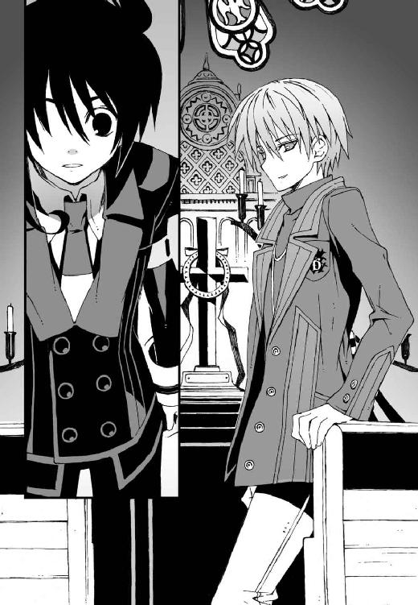
「やあ」
僕と目を合わせて、彼女は微笑んだ。
男っぽく構えた口調だったがその声は間違いなく女の子のもので、中性的なその笑顔が、奇妙に魅力的だった。彼女の笑顔に視線を吸い寄せられたまま、僕は心臓が激しく脈打つのを感じた。あれ、と自分でも少し戸惑う。なんだ、この感情は。
「──この教会に、なにか用？」
人懐こい口調で彼女が訊いてきた。突然の質問に、僕はわけもなく焦りながら、
「あの......神父さんにお会いしたかったんですけど、この教会の方ですか？」
声を上擦らせて訊き返す僕を、彼女は少し面白そうに眺めていた。しかし、
「違うよ。この教会にはもう誰もいない」
軽く突き放すような口調でそう言った。僕は軽く混乱した。
「誰もって......神父さんはいらっしゃらないんですか？」
「少し前に亡くなったって聞いてる。だいぶお年を召されていたようだからね」
彼女は軽く肩をすくめた。
「──教会の土地と建物は、彼の娘さんが管理しているみたいだけど」
「娘さん？」
「その写真に写っている子だよ。たぶん養女ではないのかな。三年くらい前に、ふらりとここに現れたそうだよ」
「三年前......」
僕は動揺を隠せなかった。三年前といえば、僕たちが巻きこまれた飛行機事故の年だ。
その事故で僕は死にかけて、操緒は幽霊になり、そして朱浬さんは身体の一部を機械に置き換えなければ助からないほどの重傷を負った。
しかも今の話を総合すると、朱浬さんの過去を知っている人は、本人以外もう誰もいないということではないのか。写真の神父さんが亡くなっている、というのが特に痛い。
ところで、そんなことを知っているあんたは何者だ？
「あの、あなたは？ 教会の人じゃないって言ってましたけど......」
「ボクは懺悔のために立ち寄っただけだよ。たまたま近くに用があったからね。誰もいないと思っていたから、勝手に使わせてもらっていたのだけど」
「懺悔？」
それで彼女は気配を消していたのか。懺悔中だったから？ 無信心な僕にはピンと来ないが、そういうこともあるのかもしれない、とは思う。
「もしかして、邪魔しちゃいました？」
だとすれば少し申し訳ない気がする。僕はべつに教会に用があったわけではないからだ。
「気にしなくていいよ。無断で入ってきたのはお互い様だから」
クールな表情を浮かべて彼女は言った。彼女が男なら単に「恰好いい」で済ますところだが、整った少女の顔立ちをしているせいで、不思議な魅力が感じられた。なぜか視線が惹きつけられてしまう。
なんとなく落ち着かない気分を感じて、とりあえずこの場を離れようと思った。朱浬さんの家族がいないのなら、ここにはもう用はない。
「じゃあ僕たちはこれで」
「僕たち......？」
彼女が不思議そうにつぶやいた。
しまった、と僕は顔をしかめた。動揺していたせいで口が滑った。操緒の姿は普通の人には見えないのだった。
突っこまれたときになんて言い訳しよう、と焦ったが、彼女はあまり気にした様子もなく、
「待った。きみ、洛高の生徒だろ。名前は？」
「え？」
涼しげな瞳で見つめられて、僕は柄にもなくどきりとした。
「夏目ですけど......夏目智春」
「ボクは雪原瑤──無理に覚えてくれなくてもいいけどね」
「あ、はあ」
そんなことを言われたせいで、余計に印象に残ってしまった。たぶんしばらくは忘れないと思う──ススギハラヨウ。
「さようなら、夏目くん」
扉を開けて出て行く僕の背中に、瑤は歌うような声音で言った。
教会を離れてからもしばらく、彼女の声は僕の耳に残っていた。胸の奥がズキズキと疼く。頬が火照っているような気がして、操緒の顔が真っ直ぐに見られない。いったいなんなんだ、この感覚は。
『うー......なによあのオトコ女。なんか恰好よすぎて、ヤな感じ！』
そして操緒はなぜか、ということもなく、しばらくプリプリと怒っていた。
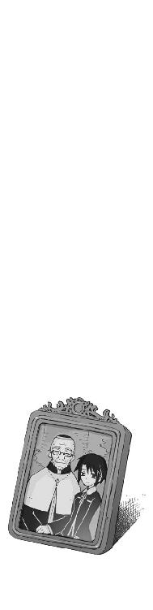
三章
帰りのバスに乗っている間、僕はうつむいて考え続けていた。
調べれば調べるほど、朱浬さんのことがわからなくなっていく。
瑤と名乗ったあの少女は、朱浬さんが神父の養女だと言っていた。だが、それが本当なのかどうかはわからない。朱浬さんの本当の両親はどこにいるのか。そして、どうして誰もいない教会に一人で暮らしているのか。うちの兄貴や、彼女の背後にある王立科学狂会とかいう組織との関係。そして、ここ数日間の謎めいた行動も──
結局、朱浬さんの目的はいったいなんだというのだろう。ただの黒科学マニアの女子高生だと思っていたのだけれど、どうやらそんな単純な話ではなさそうだ。
「......頭イタくなってきた」
市営バスの固い座席に沈みこんで、僕はぐったりとつぶやいた。本気で熱が出てきたような気がする。まったく、中間テスト前の忙しい時期に、なんでこんなことに頭を使わなければならないのだ。
『んー......なんか調子悪いなあ』
めずらしくそれまで黙りこんでいた操緒が、自分の掌を見つめてそう言った。身体の具合を確かめるように、手を握ったり開いたりする。その指先が時折ノイズ混じりのテレビのようにブレる瞬間がある。心なしか色素の薄い彼女の身体が、いつもよりさらに透けている気がした。
「み、操緒!? 大丈夫なのか、それ？」
僕は驚いて声を上げた。乗客の少ないバスの中でその声は異様に大きく響き、運転手がミラー越しに怪訝な視線を向けてきた。僕は引きつった笑みを浮かべてごまかす。
『んー......操緒はべつに平気なんだけど。調子悪いのは智春じゃないの？』
「え？」
『ほら、前に朱浬さんに言われたでしょ。射影体は演操者の脳を端末みたいに使って、この幽霊みたいな身体を映し出してるんだって』
そういえばそんなことを言っていた。演操者の脳内には、副葬処女と交信する回路のような術式が施されていて、それを介して機巧魔神を制御しているのだとかなんとか。
「あ、もしかして風邪のせい？」
僕が熱を出したせいで、操緒を実体化する機能に影響が出ているということか。原始的というかシンプルというか、そんな単純な理屈で大丈夫なのだろうか。
『わからないけど、とにかくうちで安静にしてたほうがいいんじゃない？』
「そうする......」
僕は一抹の不安を感じながらうなずいた。まさかちょっと熱が出たくらいで、演操者としての機能に支障が出るとは思わなかった。もしもこんな状態で僕の《鐵》がまた暴走を始めたりしたら、どんな大惨事になるかわかったものではない。
鳴桜邸に最寄りのバス停が近づいてきた。僕が降車ブザーを鳴らすと、運転手やほかの乗客が一斉に安堵の表情を浮かべた。見るからに顔色が良くない上に、ぶつぶつと独りごとをつぶやいている怪しい乗客だと思われていたのかもしれない。
ため息をついて僕はバスを降りる。
時間は四時を過ぎたあたりだった。もう少し待っていれば嵩月がうちに来てくれる。彼女に事情を説明して、紫浬さんの世話を任せてしまえばいいだろう。
『なんか厄介事を押しつけようとしてない？』
操緒が痛いところを突いてくる。
「たしかに悪いとは思うけど、仕方ないだろ。僕一人でこれ以上、紫浬さんの面倒を見るのは無理だって。紫浬さんだって女同士でいるほうが気楽だろ？」
『むー......とても気を遣ってるようには見えないけど』
なぜか操緒は声のトーンを低くした。彼女が冷ややかな目つきで見ていたのは、鳴桜邸の玄関だった。
門柱の前に紫浬さんが立って、帰ってきた僕に手を振っている。もちろん彼女はワイシャツ一枚に素足のままである。
「うわっ......な、なにやってんですか、紫浬さん!?」
僕は悲鳴を上げて彼女に駆け寄った。それを見ていた紫浬さんは、嬉しそうに胸の前で手を合わせ、
「えへへ......トモハルくんがいなくてちょっと寂しかったんです。帰ってくるところがちょうど二階の窓から見えたから」
「あ、はあ」
僕の顔を見つめて、紫浬さんはホッとしたように笑う。それはまあ、ここは僕の下宿なので当然帰ってくるのですが。
「あ、そうだ。ちょっと待っててくださいね」
そう言って紫浬さんはサンダルを脱いで廊下に上がり、三つ指を突いて深々とお辞儀した。
「お帰りなさい、あなた」
「は!? いや、あの......」
そんな、新婚家庭じゃないんだから。オロオロとうろたえている僕を見上げて紫浬さんは笑い、ちらりと舌を出して、一度やってみたかったんです、と言った。
そんなことを言われても非常に困る。たしかに操緒の言うとおり、気を遣っているどころか、楽しんでやっているとしか思えない。
しかしこれではっきりしたのは、紫浬さんと朱浬さんが、やはりまったくの別人格だということだった。僕をからかうための演技だとしても、朱浬さんならここまではやらないだろう。
「お腹空いてないですか？」
「は？」
「ケーキを焼いたので、もしよかったら一緒に食べませんか？」
「あ......どうも。いただきます」
僕は頼りなく頭を下げた。なんというか激しく調子が狂う。
スリッパをぱたぱたと鳴らして、紫浬さんはキッチンへと歩いていった。
よく見ると玄関の中や廊下が、今朝よりも小綺麗になっていた。僕が学校に行ってる間に、紫浬さんが掃除しておいてくれたのだろう。僕の部屋に無断で上がりこんで、缶ビールを飲み散らしていた朱浬さんと同じ顔の人物とはとても思えない。このまま永遠に紫浬さんのままでいてくれたほうが、もしかしたら世の中のためになるのではないだろうか。
「今、お茶淹れますね」
紫浬さんが、湯沸かしポットを運びながら僕に微笑む。
「あ......お構いなく」
僕は、なんとも座りの悪い気分を味わいながら食堂のイスに腰を下ろした。
慣れないキッチンに手間取りながら、紫浬さんは紅茶のパックを探している。屈みこんだ彼女のシャツの裾から、真っ白な太腿の付け根と小さな三角形の布地が見えていた。
僕が顔を赤くして目をそらすと、操緒がぶすくれた顔で僕を睨んだ。
『なに興奮してるの。バカみたい。智春が自分で買ってきたコンビニパンツなのに。無地だし』
「いや、そうだけど......」
うるさいなあ。べつにパンツの柄を見て照れているわけじゃないんだって。
「あっ......」
食器同士がぶつかる音と、紫浬さんの困ったような声が響いた。カップを温めるために注いであったお湯を、捨てる途中に誤ってこぼしてしまったらしい。
「大丈夫ですか、紫浬さん？」
僕は立ち上がって、彼女のほうに駆け寄った。紫浬さんは、明るく笑いながら首を振り、
「すみません。わたしは大丈夫なんですけど、お借りしたシャツが......」
「え？」
振り返った紫浬さんのシャツの胸元が、ものの見事に濡れそぼっていた。湿った布地が張りついて、くっきりと肌が透けている。
ちょっと待ってくださいよ。あなたは今たしかノーブラのはずで、
『こら、見るなっ！』
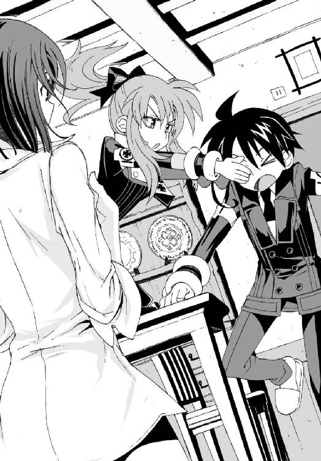
紫浬さんの形のいい胸の膨らみに奪われかけた僕の目を、操緒が背後から両手で塞いだ。おかげで僕も我に返った。
「すいません。今、タオルを持ってきますから」
そう言って駆け出した僕だったが、操緒に目隠しされたままだったので、いきなりテーブルの脚に蹴つまずいてしまう。
「ぐあっ」
小指の先から電撃のような痛みが走り抜け、僕はその場に転倒した。今度はそれを見た紫浬さんが、おっとりと僕に駆け寄ってきた。わざわざ前屈みになって僕の前にしゃがみこみ、
「大丈夫ですか」
いえ、僕のことはいいですから、胸を隠してもらえないでしょうか。てか、この人、わざとやってるんじゃないだろうな。
『ああ......もう』
操緒が、うんざりしたように目を覆った。
そこにいきなり、間延びしたチャイムの音が響いた。鳴桜邸の玄関に来客だ。
もしかして嵩月が来てくれたのか？ それにしてもなんという間の悪いときに。
「すみません、紫浬さん。ちょっと隠れててもらえますか？」
僕は紫浬さんを無理やり立ち上がらせて背中を押した。
嵩月にはまだ、朱浬さんが記憶をなくしていることを伝えていない。僕が透けたワイシャツ一枚の朱浬さんといるところを見られたら、確実に変な誤解を招くだろう。それは非常によくない展開だった。今は嵩月だけが頼りなのだ。
とりあえず彼女に事情を説明するまでは、紫浬さんにはどこかに潜んでいてもらうしかない。
「はあ......隠れるって、どこに？」
紫浬さんが戸惑いながら訊き返してくる。
「あとで着替えを持っていきますから、お風呂場にでも──」
「お風呂、ですか？ でも......」
ちょっと困ったように紫浬さんは首を傾げた。
そういえば昨日の騒ぎで壁が半壊して、うちの風呂場は外から丸見えになっているのだった。風呂場はダメだ。しかし二階の僕の部屋に行くには、玄関の横を通らなければならないし、それはいささか危険過ぎる。ほかに紫浬さんがこっそり着替えられそうな場所といわれても、そんな急には思いつかない。
ぴんぽん、と再び間延びしたチャイムが鳴らされた。僕の焦りは頂点に達した。
「ここに入ってください！ 声をかけるまで出てこないでくださいねっ」
「あ、あのっ」
うろたえる紫浬さんをリビングのクローゼットに押しこんで、僕は無理やり扉を閉めた。
そのとき玄関のほうから声が聞こえた。聞き覚えのある女子の声だ。
「夏目、いるんでしょ？ 入るわよ」
「なっ」
僕は唖然として操緒と顔を見合わせた。
今の声──嵩月のものとはまるで違う、凛々しく張りつめた勝ち気な口調。なんであいつがうちに来るんだ？
「ほら。なにやってるの、あなたも入るのよ」
「あっ......」
嵩月が、強引に引きずりこまれる気配が伝わってくる。操緒が、やれやれ、と天井を仰ぐ。
僕はおそるおそる廊下に顔を出した。
鳴桜邸の無駄に広い玄関には、二人分の人影。
嵩月奏を従えるようにして、整った顔立ちの女子生徒が仁王立ちに立っていた。
佐伯玲子だった。
○
学校帰りにそのまま立ち寄ったらしく、佐伯妹も嵩月も制服姿のままだった。
彼女たちが並んで、うちのリビングに座っている光景は、なんというかすさまじい違和感があった。許可した覚えはないのだが、ふと気づくと佐伯妹は当然のように家に上がりこんで、ソファに深々と腰掛けていやがったのだ。
「へえ......これが夏目の下宿なの。幽霊屋敷みたいだと思ったけど、意外に中はまともなのね」
興味深そうに鳴桜邸の中を見回して、佐伯妹が感想を述べた。もしかしてそれは彼女なりに褒めているつもりなのだろうか。どうでもいいが。
嵩月はそんな佐伯妹の隣で、所在なげに黙りこんでいた。たまたま僕と目が合うと、彼女は申し訳なさそうに目を伏せてうつむいた。
操緒は天井近くをふわふわと漂いながら、素知らぬ顔で僕を眺めている。どうやら傍観を決めこむことにしたらしい。僕の熱が上がってきたせいか、彼女の輪郭に混じるノイズが次第に目立つようになっていた。
「で......なにしに来たんだよ、佐伯？」
壁際に立ち尽くしたまま、僕は言った。ちょうど佐伯妹たちの真後ろに、紫浬さんを隠したクローゼットの扉がある。彼女のことがバレるのではないかと、僕は内心、気が気でなかった。
佐伯妹には嵩月以上に潔癖なところがあって、僕が紫浬さんを家に泊めたことがバレたら、絶対に怒り出すだろう。おまけに彼女のバックには、科學部の天敵の第一生徒会がついている。
「なにしに来たって、それはこっちのセリフだわ、夏目」
「は？」
「嵩月さんをこっそり家に呼んで、彼女になにをするつもりだったのよ。いやらしい」
「い、いやらしいって......」
思いがけない佐伯妹の反撃に、僕は激しく動揺した。
「なにわけのわかんないことを言ってんだオマエ!?」
「違うっての？ だったらどうして嵩月さんを誘ったわけ？ 教室の隅でコソコソ『ちょっと頼みがあるんだよ』とか言って一人暮らしの家に連れこもうとして」
「なっ......聞いてたのかよ!?」
僕はなぜか強烈に恥ずかしくなって声を荒げた。どうして嵩月が佐伯妹を連れてきたのかとずっと不思議に思っていたが、なんのことはない、佐伯妹が強引にくっついてきたらしい。
「監視と言って欲しいわね。あたしには嵩月さんの純潔を守る義務があるのよ」
開き直ったように、佐伯妹は胸を張った。嵩月はますます困った顔で下を向く。
「だからそれが勘違いだって。僕は本当に嵩月に頼みたいことがあったんだよ」
「頼みってなによ。相談なら乗ってあげるわよ？」
「う......」
真面目な表情の佐伯妹を見て、根っこのところは悪いヤツではないんだよな、と思う。本人は親切のつもりで言っているのだろうが、しかし残念ながら今の紫浬さんの姿を見たら、事情はどうあれ、佐伯妹が怒り狂うのは目に見えていた。
「いや......実は勉強を教えてもらおうかと」
僕はとっさに思いついた言い訳を口にする。
「は？ テスト勉強のこと？ 夏目って成績悪かったっけ？」
佐伯妹はくっきりした眉を寄せた。余計なお世話だが、事実なのであまり文句も言えない。
「うん、まあ」
自慢じゃないが、洛高の入試もけっこう危なかったのだ。
佐伯妹は、ちょっと拍子抜けしたように息を吐き、そんなことなら早く言ってくれればよかったのに、と言った。
「いいわ。あたしも手伝ってあげる」
「は？」
そんなことはひとことも頼んでないんだけど。
しかし、お節介なくらいに面倒見のいい佐伯妹のことだから、こういう話の流れになるのは、まあ予想できたことではあった。
実は勉強を教わるなら、嵩月よりも佐伯妹のほうが性格的に向いていると思う。実際ありがたい申し出ではある。しかしタイミングが悪すぎる。クローゼットの中に紫浬さんを閉じこめたまま、落ち着いて勉強などできるわけがない。
そして唐突に、
「あら......ケーキ？」
リビングからひと続きになっているキッチンをのぞきこんで、佐伯妹は驚いたように言った。紫浬さんが用意したケーキを、目敏く発見したらしい。
「手作りね。美味しそう。もしかして夏目が焼いたの、あれ？」
「いや、あれは......」
紫浬さんが焼いた、という言葉を僕はあわてて呑みこんだ。この場合、果たしてどう答えるのが正解なのかよくわからない。僕が答えられずに黙っていると、
「あきれたわね。夏目、学校を早退してケーキなんか焼いてたわけ？」
「いや、それは......」
反論できずに僕は口ごもる。悔しいが、本当のことを言うわけにもいかない。くそぅ、このままでは嵩月にまで誤解されてしまうではないか、と僕が焦っていると佐伯妹が、
「あたしはミルクティーで結構よ」
「はあ？」
いきなりなにを言い出すんだ、この女は。
「タダで勉強を見てあげるんだから、お茶くらい出しなさいって言ってるのよ」
佐伯妹が脚を組みながら偉そうに言う。
文句を言う気力もなくして、僕はキッチンへと向かった。
「あっ......わたし、手伝います」
嵩月が、僕を追いかけようと立ち上がった。あわてて振り向いた彼女の手が、何気なくクローゼットの扉に触れる。
その瞬間、クローゼットの内側で、ごとん、と鈍い音が響いた。人間大の重いものが動いたような振動だった。扉が揺れたのに驚いて、紫浬さんが動いたのだと思われる。
「あー......？」
「......なに、今の？」
嵩月と佐伯妹が、驚いたようにクローゼットを振り返る。
僕はじりじりと体温が上がるのを感じた。もしも今クローゼットを開けられたら、ノーブラに濡れワイシャツ一枚の紫浬さんが出てくることになってしまう。
下宿の押し入れに男物シャツの美少女。
これではほとんど変態だ。しかし今の物音を、ネズミと言い張ってごまかすのは無理がある。
「ただの心霊現象だよ──今のがラップ音ってやつ。よくあるんだよ、この建物」
僕はできる限り強い口調で言った。苦しい言い訳だと自分でも思う。
「ラップ音......？」
佐伯妹は、疑り深い表情で僕を見た。しかし、すぐに思い出したように、
「そういえば、あなたって幽霊に憑かれてるのよね......忘れてたわ」
勝手に納得してくれたらしい。幽霊屋敷みたい、とまでいわれた鳴桜邸の雰囲気が説得力を水増ししてくれたのかもしれない。このボロい建物もたまには役に立つ。
『......なんで操緒のせいになってるのよ？』
憮然とした口調で文句を言ったのは操緒だった。僕は黙って彼女に手を合わせた。この際、多少の不名誉は我慢してくれ。
嵩月のほうはまだ少し怪訝そうに首を傾げていたが、特になにも言わなかった。そのかわり、
「......？」
キッチンに用意された二人分のティーセットに気づいて、ますます不審そうな顔をする。
『怪しまれてるよ、智春』
操緒がわざわざ僕の耳元に囁きかけてきた。わかってるけど、この場合、僕にはどうしようもない。
佐伯妹を言いくるめているうちに、なんだか嵩月まで騙しているような形になってしまった。なんでこんな後ろめたいことになってしまっているのだろう、と僕が悩み始めたとき、
「......くしゅっ！」
クローゼットの奥から、くぐもったくしゃみが聞こえてきた。紫浬さんだ。
それはまあ、濡れた服を着たままクローゼットなんかに閉じこめられていたら、くしゃみのひとつもしたくなる気持ちはよくわかるのだが──
「誰っ!?」
佐伯妹が飛び上がって叫んだ。怯えたような表情を浮かべて、それでも気丈にクローゼットの扉を見据えている。
「この中からくしゃみが聞こえたわよ。女の人の声だった！」
「えっ......そ、そう？ 僕にはなにも聞こえなかったけど」
僕は素知らぬ顔ですっとぼけた。もうほかにごまかす方法を思いつかなかった。
「なんですってえ!?」
こめかみに血管を浮かべて、佐伯妹が僕を睨みつけた。どうでもいいけど、そんな顔をすると男子のファンが減ると思うぞ、佐伯。
「............」
嵩月は無言のまま、なにかを思案するように僕を見つめている。僕はなるべく彼女と目を合わせないように無理に微笑み、
『やけくそだね、智春』
操緒がそんな僕を見て面白そうに論評した。ほっといてくれ。
佐伯妹は、悔しそうに地団駄を踏んでいたが、さすがに自分でクローゼットを開けるほどの度胸は持ち合わせていないらしく、
「なんなのよ、この建物は!? あなた、よくこんなところに住んでいられるわね、夏目！ もう──こんなんじゃ一人でこっそり遊びにも来られないじゃない！」
錯乱した彼女は、意味不明なことを口走る。なんだか少し可哀想になってきた。
「あ、あのさ......佐伯。もしも幽霊が気になるんだったら帰ったほうが──」
一縷の希望をこめて僕が彼女を説得しようと思ったとき、
「頭に来たわ。開けるわよ、いいわね、夏目！」
なんですと？
「わああっ、待った。ちょっと待て！」
あわてふためいて彼女を制止しようとしたが、ブチ切れ状態の佐伯妹の耳にはもちろん僕の声など届いていない。僕の異様な反応に嵩月が驚いて目を見開き、操緒はうわぁ、と頭を抱え、
佐伯妹がクローゼットの扉に手をかけて、力任せに押し開けようとした──そのときだった。
「すいませーん」
場違いなほど野太い男のダミ声と、間延びしたチャイムが、玄関のほうから聞こえてきた。
「............」
僕たちは全員、腰を抜かしそうなくらい驚いて、ただ呆然とその場に立ち尽くした。
誰？
○
お風呂の修理に上がりました、と彼らは言った。
工務店の作業服を着た堅太りのオッサンと、バイト学生っぽい若者の二人組である。
玄関に出てきた僕を見て、若者のほうが人懐こい営業スマイルを浮かべた。かなり背の高い男だったが、姿勢があまりよくないせいか、妙に子どもっぽい印象がある。眠っているような細いタレ目と、唇の端からのぞく八重歯のせいかもしれない。
彼の右腕にはボロボロのリストバンド。海外のプロバスケチームのロゴが入っている。
「お風呂の修理......ですか？」
僕は戸惑いながら訊き返した。そんな依頼をした覚えはなかった。修理を頼もうと思っていたのは事実だが、寝不足やら体調不良やらで忘れていたのだ。
「こちら、夏目智春さんのお宅でしょ？ 昼頃、電話をもらったんだよね」
「電話......？」
僕はふとリビングの古い電話機のことを思い出した。そういえば、心あたりがまったくないこともない。
「もしかして、おっとりした感じの女の人の声でした？」
「ん？ おっとりしたっていうか、まあ、女の人の声だったけどね」
オッサンが訝しげに僕を見ながらうなずいた。
納得がいった。たぶん僕が学校に行ってる間に、紫浬さんが手配しておいてくれたのだろう。いきなりだったので驚いたが、どうせ頼もうと思っていたことなので文句はない。むしろ紫浬さんが、そんなふうに気を回してくれたことのほうが驚きだった。なにしろ記憶をなくす前の彼女は、僕の部屋の天井をミサイルで吹き飛ばしておいて、一円も弁償しなかったような人なのだ。
「今日のところは、見積もりだけってことになると思うけど」
「あ、わかりました。お願いします──あっちの奥なんですけど」
僕は廊下の奥の半壊した風呂場まで、工務店のオッサンを案内して歩き出す。
「あいよ......おう、新人。見積もりの用紙と巻き尺な」
「へーい」
タレ目のバイト職人は、明るい声で返事をして僕たちのあとについてきた。そして嵩月たちがいるリビングの前を通り抜けようとしたとき、
「きゃあっ！」
佐伯妹の甲高い悲鳴が響き渡った。
驚いて僕が振り返ると、廊下近くに立っていたはずの佐伯妹が、リビングの奥まで後退してバイト職人を睨みつけていた。怒りで言葉にならないらしく、制服のスカートを押さえたまま、わなわなと肩を震わせている。
「なんだ？」
『あいつが、通りすがりに佐伯ちゃんのお尻を触ったの』
困惑する僕に操緒が告げ口してくる。はあ？ なんだそれ？
「あ......悪いっす」
へらへらと笑いながらタレ目は言った。勝手な行動をした自分の手が悪いといわんばかりに、左手を挙げて佐伯妹に頭を下げる。
「いや、いい曲線だったものだから、つい......芸術家志望なんスよ、オレ」
「はあ!?」
血走った目を吊り上げて佐伯妹が怒鳴った。まあ、それは普通怒るわな。
「あなた、あたしに痴漢行為を働いておいて言いたいことはそれだけなの!?」
「あ......」
タレ目のバイト職人は気まずそうな表情を浮かべて、頭をかき、
「そうか。いや、元気な赤ちゃんが産めると思うッスよ」
「こ......このエロタレ目が......」
佐伯妹が、怒りを凝縮するように声を震わせる。僕と嵩月は、彼女を止めることもできずにオロオロとうろたえているだけだ。そして佐伯妹が爆発すると思われた瞬間、
「バカ野郎っ！」
工務店のオッサンが、とんでもない勢いで若者の頭を殴りつけた。重い石を落としたような音が廊下を揺らし、タレ目のバイト職人はその場で頭を抱えて屈みこんだ。
「施主さんの女にちょっかい出すんじゃねえっ。なに考えてんだ、ったく！」
「いや......あの......」
そういう問題ではないよなあ。
拳骨を落とされたバイト職人は、ぐおお、と頭を押さえてうめいている。無理もない。ヘタすれば頭蓋骨が歪んだんじゃないかと思うような情け容赦ない一撃だった。
「すんません、お嬢さん。コイツは病人の代理で連れてきた新入りでして、あとできっちり教育しておきますんで。今日のところはどうか穏便に......」
「え......ええ、まあいいですけど」
さすがに少しは同情したのか、佐伯妹も渋々とうなずいた。
「あの......じゃあ、とりあえず見積もりを」
これ以上この場に長居しないほうがいいと判断して、僕は強引に職人たちを前に進ませた。
タレ目の兄ちゃんは頭を押さえたまま涙目で立ち上がり、
「あれって夏目くんの彼女ッスか？」
僕になれなれしく顔を寄せて訊いてきた。
「いえ、違いますけど」
そういう怖ろしいことを口にするのはやめて欲しい。てか、この人、全然反省してないな。
「じゃあ、もう一人のほうッスか？ いいッスねえ。オレもあっちにしとけばよかったッス」
「......いや、それはやめておいて正解だと思います」
ヘタに嵩月に手を出すと、その場で黒焦げにされますよ。おまけに彼女の実家には、血の気の多いおっかない兄ちゃんたちがウヨウヨしてますし。
「うわ......派手に壊れたッスね」
急に口調を変えて、タレ目の兄ちゃんが言った。
半壊した風呂場の中を見回して、工務店のオッサンはむっつりと眉間にしわを寄せていた。無言で差し出してきた彼の手に、タレ目兄ちゃんが巻き尺を手渡す。
「水道管が破裂してるッスね。いったいなにがあったんスか、これ？」
壊れた蛇口周りを見つめて、彼は面白そうに訊いてきた。僕は当然、返事に詰まった。うちの部の非常識な先輩が素手で引きちぎったなんて、そんなの言えるわけがない。
「なんか怪力の人がねじ切ったみたいな跡ッスね」
何気ない口調で兄ちゃんが言った。僕はぎこちなく笑ってみせた。
「ま......まさか」
「そんなワケないッスよね。普通の人間が素手でやるようなことじゃないし......サイボーグ、とかッスかね。もし出来るとしたら」
ごほっ、と僕は咳きこんだ。なんでそういうまぎらわしい言い方をするんだ、こいつは。
「あれ......風邪ッスか？ ゆっくり休んで治さないと、この時季の風邪はタチが悪いッスよ」
「そうだね。気をつけるよ」
「それがいいッス。ところで......その制服、洛高ッスよね。さっきの女の子たちも」
「......そうだけど」
なんだ、突然？
「オレも洛高ッスよ」
「え？」
「たぶん同学年ッス。一年九組の真日和秀。オレの場合は二回目の一年生ッスけど」
ニッ、と八重歯を見せて、彼は笑った。僕はちょっと驚いた。いわゆる留年生というやつか。なるほど、彼の中途半端な敬語は、もしかしたらそれが原因なのかも。
それにしてもマヒワシュウ。微妙に発音しにくいというか覚えにくい名前だ。
「そうそう、休むといえば......黒崎朱浬って知り合いッスか？」
壊れた水道管を見ながら、真日和がいきなりそんなことを言った。
「な......なんで？」
「べつになんでってこともないッスけど、さっきの女の子のこと、思い出したッス。科學部の嵩月奏じゃないッスか？」
「あ......ああ、そういうこと」
僕は心臓を押さえながら言った。嵩月はなんだかんだで目立つ生徒なので、真日和が彼女の名前を知っていたとしても不思議ではない。
「黒崎とは去年同じクラスだったッス。けど、ここんとこ学校を休んでるらしいッスね」
「そ、そうだね」
「あと、全然関係ない話なんスけど......こないだ、維奈港で密輸船が拿捕されたって話、知ってます？ 捕まったのは国際的な窃盗団ってヤツっす」
「......は？」
なんだそれは。
聞いたことがない。というか、普通そんなものに興味を持つ高校生はあまりいないと思う。
もしその密輸に絡んでいたのが嵩月組だったとかいわれたら、それはそれで怖ろしいけれど、それよりもなぜ僕にそんなことを訊く？
「密輸団が拠点にしていた倉庫の近くで、黒崎を見たっていうヤツがいるッス」
「──！」
その瞬間、僕は呼吸を忘れた。僕の脳裏をよぎったのは、朱浬さんが持っていた銀色のアタッシュケースのことだ。
機巧魔神のイクストラクタに、あまりにもよく似ていたせいで考えつかなかった。あの謎ケースの中身が、密輸されてきたヤバい品物という可能性は十分にあり得ることだったのに。
『智春......』
真日和を睨んで、操緒がつぶやく。僕は無言でうなずいた。
あまりにも驚いたせいで、逆に冷静な気分になっていた。この真日和というにやけた男、頼りなく見えるが、実はとんでもないクセ者かもしれない。真綿で首を絞めるようにじわじわと、情報を小出しにして僕の反応をうかがっていやがる。
「あんた......何者だ？」
顔をしかめて、僕は真日和に訊く。タレ目のバイト職人は、にへら、と目尻を下げて笑い、ここぞとばかりになにかを語ろうとした。
しかし彼が完全に口を開くよりも早く、
「──新入りっ！ なにをさっきから施主さん相手に無駄話してやがる!? ちったぁ働けっ！」
工務店のオッサンの拳骨が、真日和の頭頂部を直撃した。
「ぬおおおおっ」
瓦礫の上にぶっ倒れて、真日和は苦悶のうめき声を上げた。
のたうち回って涙を流す彼を、僕と操緒は、ただ呆然と眺めていた。
○
工務店のオッサンに監視されて、それからの真日和は、人が変わったように黙々と働いた。おかげで僕はそれ以上の情報を彼から引き出すことはできなかった。
「それじゃあ、工事は来週からになりますんで」
そう言って工務店の二人組は帰って行った。結局、真日和の正体もわからないままだ。
ただ彼からは、僕に対する敵意のようなものは感じられなかった。あれだけボコボコに殴られても能力を発現しなかったところをみると、真日和が嵩月のような悪魔という可能性は低い。射影体を引き連れているわけでもなかったから、機巧魔神の演操者でもないのだろう。
朱浬さんみたいな例外もあるので、見た目で判断するのは危険だが、彼自身はそんな危険な存在ではないと思う。
「あのエロタレ目......まさかうちの学校の生徒だったなんて。今度同じことしたらその場で斬り捨ててやるわ。嵩月さんも気をつけるのよ」
佐伯妹だけはまだ怒っていた。しかし彼女はだいたいいつも怒っているので、普段どおりと言えないこともない。
からくも被害を逃れた嵩月は、真日和のことはあまり気にしていない様子で、一人静かにケーキを食べていた。時折フォークを握る手を休めて、じっと窓の外を見つめるのが少し怖い。
なんとなく怒っているような気配があって、僕は落ち着かない気分だった。絶対なにか誤解されていると思う。
「わたし......今日は帰ります」
やがて僕たちがケーキを食べ終えたころ、おもむろに立ち上がって嵩月が告げた。
「え、あ......そうなの？ 夏目の勉強は？」
佐伯妹が驚いたように言った。少し名残惜しそうに、僕の顔をちらちらと見上げる。僕は深深と嘆息して、
「いや、せっかく来てもらって悪いんだけど......今日のところは帰ってもらったほうがいいかも。僕も体調悪いしさ」
どのみち佐伯妹がいる間は、嵩月にいてもらっても意味がない。それにクローゼットに閉じこめたままの紫浬さんのことも気にかかる。さっきから物音ひとつしなくなって、それは助かっているのだけど不安でもあった。まさか窒息したりしてないだろうな。
「夏目は大丈夫なの？ 一人暮らしで病気って大変じゃない？」
「いや......今日はさっさと寝たいんで、帰ってくれたほうが助かります」
半分本気の口調で僕は言った。
佐伯妹がむっ、と唇を尖らせる。普段は性格キツイくせに、こういうときだけ世話焼きなのはなんなんだろう。
「わかったわよ。じゃあねっ、お大事に！」
乱暴に言い捨てて佐伯妹は立ち上がった。僕は彼女たちを見送る気力もなく、ソファに座ったまま投げやりに手を振った。部屋を出て行く直前、嵩月が一瞬だけ僕のほうを振り返ったが、彼女はなんの表情も浮かべずに、僕に会釈して帰って行った。
『やーい、嫌われちゃったね』
操緒が僕の背中から、弾んだ声で囁いてきた。なんでそんなに嬉しそうなんだよ。
べっつに、と首を振り、操緒はふわ、とあくびをした。実は彼女はさっきから妙に眠そうだ。
『それよりも、紫浬さんを出してあげなくていいの？』
「あ......」
僕はあわてて立ち上がった。その瞬間、視界がぐらりと揺れた気がした。緊張からいきなり解放されたせいか、体調がさらに悪化している。本格的に熱が上がってきたらしい。やばい、かも。
「紫浬さん」
僕はぜえぜえと肩で息をしながら、クローゼットへと歩み寄った。呼びかけても返事は聞こえてこない。漠然とした不安が恐怖に変わっていく。
「開けますよ、紫浬さん！」
僕は乱暴に扉をノックして、勢いよくクローゼットを押し開けた。
雑然と詰めこんだ季節はずれのコートなどの奥に、ワイシャツ姿の紫浬さんが、ぐったりと倒れこむようにして座っていた。僕はかなり本気で狼狽した。
クローゼットの中にワイシャツ一枚の女の子の死体。死因は窒息。全国ネットのニュースで異常犯罪者扱いされて、世間から糾弾されるのは確実だった。顔にモザイクがかかった樋口がテレビのインタビューで、あることないこと僕について語っている姿がリアルに想像できる。
『そんなうろたえなくても......寝てるだけじゃないの？』
放心状態の僕を見下ろし、操緒が淡々とつぶやいた。
よく見れば朱浬さんのシャツの胸元が、緩やかに上下しているのがわかった。顔を近づけると規則正しい寝息も聞こえてくる。僕は脱力して狭いクローゼットの中にくずおれる。
この状況でよく眠れるものだと、感心するよりもむしろ腹が立ってきた。心配していた僕が馬鹿みたいだ。
「......まあいいや。紫浬さん、起きてください」
僕は紫浬さんの細い肩を揺すった。いつも見ていた朱浬さんの顔だが、今は普段よりずっと幼く見える。美人というより可愛らしいという感じ。
特に根拠もなく僕は、記憶をなくす前の朱浬さんがこんな穏やかな表情で眠ることはあまりなかったのではないか、と思った。
『もう少し寝かせておいてあげようよ』
操緒がぽつりとそう言った。彼女も僕と同じことを考えていたのかもしれない。僕は無言でうなずいて、リビングのカーテンをそっと閉めた。
それから僕は自分の部屋に向かう。さっきから頭の芯がぼーっとしていた。少しでも眠らないとこのままぶっ倒れてしまいそうだ。廊下までの道のりがやけに遠い。
ふらつきながらリビングの中央まで歩み出た僕は、そこで奇妙なものを見つけて足を止めた。
人形だ。
「......え？」
見覚えのない人形だった。大きさは人間の幼稚園児と同じくらい。ずんぐりとした三頭身くらいの体型で、灰色の帽子とコートを身につけている。
どこか間の抜けた顔立ちは、可愛いと言えなくもない。てるてるボウズみたいな白い頭には、ハロウィンのカボチャによく似た三角形の目と口がついていた。
おそらく子ども用のオモチャだと思う。
しかし、どうしてそんなものがここにあるのかわからない。
まるで最初からそこに置かれていたかのように、その人形はリビングの棚の上にちょこんと脚を投げ出して座っている。
しかし、しょせんは人形だ。知らないうちに置かれていただけなら、僕だってここまで驚いたりはしない。僕がそいつを気にしている理由は、その人形が僕と目を合わせたような気がしたからだ。熱にうなされて幻覚でも見たのかもしれない。うん、そういうことにしておこう。
『......智春』
そこに操緒が、声を震わせながら囁いてくる。
『その人形、今ちょっと動かなかった？』
「げっ」
僕はうめいた。やっぱり幻覚ではなかったのか。どうせそんなことだと思った。
そして次の瞬間、今度こそはっきりと人形が僕を見た。三角形の目の奥のほうに、ちかちかと赤い光が点滅する。
『......見ツケタ』
人形がはっきりと人間の言葉を喋った。ネジを巻きすぎたオルゴールのような、機械的な甲高い声だった。
『見ツケタ、見ツケタ......黒崎朱浬ヲ見ツケタ』
「......っ！」
僕はクローゼットの中で眠っている紫浬さんを振り返った。
この人形、まさか朱浬さんを追ってきた刺客なのか？
『返セ、返セ......すたびらいざヲ返セ』
──スタビライザ？
人形が告げた聞き慣れない言葉に、僕は眉を寄せた。もしかしてそれが朱浬さんの持ってきた謎ケースの名前なのだろうか。そういえば帰ってきてから目にしていないが、あのケース、今どこに置いてあるのだろう。
しかし、僕がそんなことを考えていられたのは一瞬だけだった。
きりきりきり、とゼンマイが回るような音を立てて、人形が腕を上げたのだ。
コートの下で人形が握っていたのは、分厚い歯のついた手斧だった。
キャンプで薪割りに使うような、現代風のコンパクトな斧ではない。ホラー映画の中にしか出てこないような、狩猟用のばかでかいやつだ。
大人の男でも両手でなければ扱えそうにない重量級の得物を、小柄な人形が振り上げる姿は、それだけでちょっとした恐怖だった。
姿形が小さいので油断した。考えてみれば相手は機械仕掛けの人形なのだ。朱浬さんのように人間離れした腕力を持っていても、まったく少しも不思議ではない。
『返セ......スタビライザ、返セ』
人形が、前触れもなく跳躍した。
「うわっ」
僕は脚をからませながら必死で避けた。僕の背後にあった応接テーブルが、木の裂ける嫌な音とともに砕け散った。人形の斧で叩き割られたのだ。
冗談じゃないぞ、まったく。あんなもので切りつけられたら、怪我どころでは済みそうにない。ヘタすれば悪魔の使い魔よりもタチが悪い。とんでもない兵器人形だ。
『返セ、返セ』
「うるさい！」
僕は怒鳴った。いい加減に頭に来た。狭い家の中であんなものを使いたくはなかったが、僕としても、こんな間抜けな顔の人形に殺されたくはない。ちらりと上空の操緒を見上げて叫ぶ。
操緒がうなずく。
「──来い、鐵！」
僕の足下の影の色が変わった。黒を通り越して闇の色へ。まったく光を反射しない、深淵の虚無の色へと。その闇の奥底から、暗い影が浮上した。
金属製の巨大な腕。
機巧魔神──機械仕掛けの悪魔の腕だ。
空中に投影されていた操緒の身体が、ノイズ状に分解されて消えていく。これまでに何度も目にしてきた、機巧魔神の召還プロセスだ──だが、
『んんっ......ダメ、智春っ』
大きく身体を反り返らせて、操緒が弱々しい声で叫んだ。
彼女の姿が、虚空に溶けこむようにかき消えた。同時に僕の頭の奥で、強烈な痛みが電撃のように駆け抜けた。苦痛に耐えかねて、僕はその場に膝をつく。
僕の影をこじ開けるようにして出現した巨大な腕が、再びずぶずぶと闇の中に沈んでいった。
「鐵が......喚べない!?」
全身が悪寒で震えて動けなかった。今の一瞬で体温が一気に上昇したという実感がある。高熱のせいで、僕の脳内に刷りこまれた術式が誤動作したのだ。機巧魔神が喚び出せない。
『倒ス、倒ス、オマエ、倒ス』
人形が、再び斧を振り上げて近づいてくる。
僕はぼんやりとそれを眺めていた。目の前の光景にまったく現実感が湧かない。悪い夢を見ているようだ。必死で逃げようと意識しても、身体がまるで反応しない。
操緒は消えたまま現れない。こんなときに最も頼りになるはずの朱浬さんは、記憶をなくしてクローゼットの中で眠っている。
僕は泣き笑いのような表情を浮かべて、確実に迫り来る死の感触に震えた。
きりきりきり、と鳴り続けていたゼンマイの回転が不意に停止した。
重力に任せて、巨大な斧の先端が降ってくる。
「......！」
ドス、と鈍い音を響かせて、斧はリビングの床に突き刺さった。
僕の眼前一センチほどの場所を、分厚い刃がギリギリにかすめていったのだ。
「は......はずれた？」
灰色コートの人形は、僕の目の前に斧を突き立てたまま動きを止めていた。目の奥を赤く輝かせたまま、甲高い声で告げてくる。
『警告、コレハ警告ダ』
人形が、斧を置いて僕から離れていった。どうやら、警告のためにわざと攻撃を外したのだと言いたいらしい。
いかにも機械仕掛けらしいぎこちない足取りで、人形はリビングの窓へと向かっていく。
『二十四時間ノ、猶予ヲ与エル。すたびらいざヲ引キ渡セ──引キ渡セバ、コレ以上ノ危害ハ加エナイ。二十四時間後ニ、マタ来ルっス──』
そう言い残して、人形は窓の外に飛び出した。そのまま庭の雑草にまぎれて、灰色コートの小さな背中は見えなくなる。僕はそれを追いかけることもできずに、床に倒れたまま、人形の最後の言葉を思い出していた。
マタ来ルっス──......
「......なんじゃそりゃ」
負け惜しみのように弱々しくつぶやいて、僕は意識を失った。
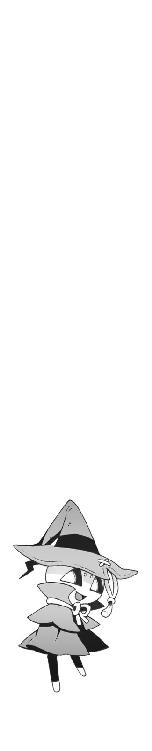
四章
それから僕は熱を出して寝こんだ。
体温計の液晶窓には、あまり見たことのない数字が表示されていた。
四十度。
さすがにこの温度はちょっとヤバいのではないかと思ったが、頭がぼーっとしているせいか、あまり実感が湧いてこない。
頭が割れるように痛むとか全身の関節が軋むとか、そういう段階はとっくに過ぎてしまったらしく、ただ単に意識が朦朧としている。酔っぱらったときのような、ふわふわして地に足が着いてない感覚。むしろ少し気持ちいい。
もしかしたら操緒は、いつもこんな気分でいるのかもしれないと思う。
「......操緒？」
しかし呼びかけてみても、彼女の返事は聞こえてこなかった。僕が《鐵》の召還に失敗してから、操緒は一度も姿を現していない。
おそらく彼女自身が指摘したように、僕が熱を出しているせいだと思う。脳がまともな状態ではないので、演操者としての機能が正常に働いていないのだ。
「............」
熱のせいで妙に高揚していた気分が、いきなり暗く沈んでいくのを僕は感じた。
これまでにも、操緒が姿を消したことがないわけではなかった。佐伯兄の機巧魔神によって、完全に消滅させられたこともある。それでも彼女は、いつも平然と復活して、何事もなかったかのように僕につきまとっていた。
もちろん僕も、操緒がいつまでも幽霊のままでいられると思ってたわけじゃない。行方不明になった彼女が、自分の身体を取り戻して生き返ってくれれば文句はないし、成仏するというのならそれはそれで仕方がないとも思う。
だが、今回は少し事情が違う。問題があるのは操緒ではなく、宿主である僕のほうなのだ。
僕の熱が下がれば、操緒も復活すると思うのだが、そうでない可能性もゼロではない。
その場合、操緒は《鐵》の内部で眠り続けたまま、どことも知れない闇の中に永遠に閉じこめられてしまうことになる。それを想像するとぞっとした。機巧魔神を封印したあの濃密な闇の空間は、本能的な恐怖を誘う圧倒的な虚無に満ちていた。あんな世界に幽閉されるのは、おそらく死よりも怖ろしいことだ。
大丈夫だよ、と誰かが言ってくれれば、少しは安心できただろう。たとえそれが根拠のない慰めでも。しかし、今ここにその言葉をかけてくれるはずの操緒はいない。朱浬さんも記憶をなくしてしまっている。
暗い部屋、一人ベッドの上に取り残されたまま、強烈な不安に僕は肩を震わせた。
だがしかし、そんなふうに悠長に落ちこんでいる場合ではなかったのだと、僕はあとで思い知らされることになる。
「──トモハルくん、起きてますか？」
控えめなノックの音とともに、紫浬さんがそっと顔を出した。
「あ、はい」
僕はかすれた声で返事をする。
浅い眠りを繰り返していたせいか、時間の感覚が狂っていた。延々と眠り続けていたような気がしていたのだが、実はまだ翌日にもなっていなかったのかもしれない。
無理して上体を起こそうとしたはずみに、額から濡れたタオルが落ちた。そういえば、途中何度か紫浬さんがタオルを替えに来てくれたような気がする。気絶して倒れた僕をベッドまで運んでくれたのも紫浬さんだった。
「お水持ってきました。水分、摂ったほうがいいですよね？」
「あ、そうですね。たぶん」
言われてみれば、喉がからからに渇いていた。僕は紫浬さんに感謝しながら、差し出されたコップを受け取った。記憶をなくしていても、こういう生活に必要な知識はなくさないのだな、と少し感心する。
「......すみません、紫浬さん」
「なにがですか？」
紫浬さんは水のおかわりを注ぎながら、おっとりと笑って訊いてきた。
「えーと、ベッドを僕が占領しちゃって、しかも看病までしてもらって......本当は紫浬さんも病人みたいなものなのに」
「なんだ、そんなことですか」
くす、と微笑んで紫浬さんが首を振る。そういう仕草をすると、彼女は本当に朱浬さんとは違う人ではないかと思えてくる。
「いいんですよ。元はといえば、わたしのせいでトモハルくんが風邪をひいちゃったみたいなものですし。居候ですもん、看病くらいお安い御用ですよ」
「そうですか......ありがとうございます」
ちょっと救われたような気分になって、僕は弱々しく頭を下げた。体力が落ちているせいか、精神的にもだいぶ弱っているようだ。操緒がいないことが必要以上にこたえているし、そのぶん紫浬さんの存在がありがたい。
「それより、お腹は空いてないですか。お雑炊を作ってみたんですけど......」
「はあ......食欲はあまりないですが」
とはいえ、食べられるうちになにか腹に入れておいたほうがいいのかもしれないと思う。風邪薬のパッケージにも、空腹時は避けるようにと書いてあったはずだ。
「いちおう食欲がなくても食べられるように工夫してみたので、もしよかったら」
紫浬さんが、遠慮がちに尋ねてくる。うーん、気を遣わせてしまって申し訳ない。
「そうですね。雑炊ぐらいだったら、少しだけ」
「よかった。ちょっと待ってくださいね」
いそいそと食事の支度をする紫浬さんを、僕はぼんやりと眺めていた。
変な雰囲気だと思った。懐かしさと違和感の入り混じった不思議な感覚。
僕は少しして、その感覚の正体に思いあたった。
たぶん、操緒だ。
病気で寝こんだ僕を看病するのは、昔から、傍若無人なうちの母親でも唯我独尊なクソ兄貴でもなく、うちの隣に住んでいた幼なじみの役割だった。僕たちが物心ついたころからずっとそうだ。
その操緒が今はどこかに消えて、かわりに紫浬さんが傍にいる。
べつに紫浬さんが不満というわけではないのだが、それはどうにも落ち着かない感じだった。まるで知らない人と同棲しているような気分だ。
ここにいるのが朱浬さんのほうだったら、そんな気分にはならなかったと思う。
とはいえ、紫浬さんの人格になっていない朱浬さんがこんな献身的な看病をしてくれるとは思えないから、朱浬さんの記憶がなくなっていたのは、実は幸運だったといえなくもない。
しかし朱浬さんが記憶をなくしてなければ僕が寝こむこともなかったわけで、なのにそのことで紫浬さんを責めても意味がないというのはどうにも納得のいかない話であり、結局のところ巻きこまれた僕が不幸だという結論になるのだが、そのことはあまり考えないことにしよう。
「はい、どうぞ」
あーん、などと言いながら、紫浬さんが雑炊をレンゲに載せて差し出してくる。僕は素直に口を開けた。とりあえず今は彼女に甘えておこうと思った。
「お味はどうですか？」
紫浬さんに訊かれて僕は困惑する。なんだこの味。
彼女の雑炊には味がなかった──と感じたのは一瞬だけだった。突然すさまじい刺激が口の中を荒れ狂い、僕は声も出せずにのけぞった。香辛料の臭いが鼻の奥を突き抜けた。舌が焼けるようだった。辛いというよりも痛くて熱い。僕は紫浬さんの手から水の入ったコップを奪いとり、激しくむせ返りながら一息に飲み干した。
「辛っ！ なんなんですか、これ──!?」
僕は声を裏返らせて叫ぶ。しかし紫浬さんはあくまでもおっとりと、
「......キムチ雑炊ですけど？」
「............」
絶句する。高熱を出してるボロボロの重病人に、なぜキムチ？
「身体が弱って食欲がないときには、スパイシーなお料理を食べたりしますよね？」
いや、それは夏バテのときの話だろう。
「それに汗をかくと熱が下がるかなって思いまして」
「............」
たしかに汗は噴き出したが、それ以上に体調が悪化した。忘れていたはずの頭痛がぶり返し、内臓までおかしくなったようだ。強烈な眩暈で視界が歪む。
「すみません......やはり食欲が湧かないようです」
死人のような声で僕は告げた。
そうですか、と紫浬さんは残念そうにつぶやいた。美味しいのに、と言いながら残ったキムチ雑炊を自分で頬ばる。部屋が暗かったので気づかなかったが、よく見ると、雑炊のお皿は煮えたぎるような唐辛子の真紅に染まっていた。絶対に病人に喰わせる食べ物ではない。健康な人間でもどうかと思う。まったく、どういう味覚をしているんだ、この人は。
多少人格が変わったといっても、彼女にまともな看病を期待した僕が愚かだった。このままでは本当に命が危ないかもしれないと思う。
「あ、どこに行くんですか？ まだ起きちゃダメですよ」
立ち上がろうとした僕を、雑炊を食べ終えた紫浬さんがあわてて止めた。たしかに僕も動き回るような気力が残っているわけではないのだが、
「ちょっとトイレに」
激辛キムチ雑炊のせいでいくらなんでも水を飲みすぎた。それに夕方ごろにぶっ倒れてから、一度もトイレに行った記憶がない。
「なんだ、そんなことですか」
紫浬さんが笑顔を見せた。僕が不安になるくらいの混じりけのない笑顔だった。
「安心してください。こんなことも有ろうかと、ちゃんと用意しておきました」
「......用意？」
とは、なんのことでしょう？
担架でも持ってきてくれたのだろうか、と疑問に思った僕は、しかし次の瞬間、紫浬さんが取り出したモノを見て悲鳴を上げた。
「ちょっ......なんですかそれは!?」
いびつな形をした花瓶のようなガラス容器。いわゆる溲瓶というやつだ。まさか、それで用を足せというのではないだろうな。てか、なんで我が家にそんなものが存在するのだ？
「さっき、お屋敷のお掃除をしているときに見つけたんです」
「いや......だからってなんでそんな......!?」
「大丈夫ですよ。綺麗に洗ってありましたから」
そう言って紫浬さんは僕の毛布を剥ぎ取った。そのまま僕のジャージのズボンに手をかけ、問答無用でパンツごと引きずり下ろそうとする。
「うわああっ、待った待った──やめてください一人でできますからっ」
「恥ずかしがらなくていいんですよ。生理現象なんですから」
「だからそういう問題じゃなくって──あっ、ちょっと、そこは違──」
僕は必死で抵抗した。しかし紫浬さんの力は圧倒的で、衰弱した肉体は過酷な運命に逆らうには非力すぎた。慣れない手つきであちこちいじり回している指先の感触と、興味深く観察しているような視線。やがて、冷やりとした触感が僕の一部を包みこみ、
「いいですよー」
いや、いいですよ、とか言われても。それはたしかに僕も彼女の服を脱がそうとしたが、それは操緒の監視のもとに必要に迫られてやったことで。や、ちょっと──さっきからずっと我慢していたのに、そんなところを刺激されたら──
「──じゃあ、ゆっくり休んでくださいね」
後片づけを終えた紫浬さんは、にこやかな笑顔でそう言って僕の部屋を出て行った。
僕はベッドに横たわったまま、抜け殻のような目つきで暗い天井を見上げていた。そして、このまま永遠に目が覚めませんように、と祈りながら、涙に濡れた枕で朝まで眠った。
ほんの少し気持ちいいと思ってしまった自分が哀しかった。
○
翌朝、僕は最悪な気分で目を覚ました。
相変わらず頭が痛かったし、少しでも姿勢を変えると全身に筋肉痛のような痛みが走る。
それでも熱は少し下がって、今は三十八度ほど。昨晩よりはまともにものが考えられるようになっていたし、身体も動く。あまり信じたくないことだが、紫浬さんのキムチが効いたらしい。逆療法というやつかもしれない。
時刻はもう九時を過ぎている。授業はとっくに始まっている時間だ。どのみち今の体調では授業どころではないのだが、この時期の欠席はかなり手痛い。ただでさえテスト直前の大事な時期なのに、この上、出席日数まで足りなくなったら救いようがない。
「操緒......は、まだ復活しないのか」
ズキズキと痛む頭を押さえながら、僕は深くため息をついた。昨夜は体調が悪くてそれどころではなかったのだが、考えなければならないことは山ほどあった。
紫浬さんの記憶のこともそうだが、それよりも切羽詰まっているのは昨日の殺人人形のことだった。あいつが言った謎ケース引き渡しの期限まで、もう半日も残っていない。こんなときに相談できる相手がいないというのは、なんとも心細いことである。
「──トモハルくん、起きました？」
そのときちょうど紫浬さんが、ドアの隙間から、にゅう、と顔を出した。
やはり、いつもの朱浬さんとは少し雰囲気が違う。相変わらず記憶は戻ってないらしい。
「朝ご飯ってどうします？ おかゆ作ってみたんですけど。生薬配合で」
そう言って紫浬さんは、器の載ったお盆を差し出してくる。鼻を突く強烈な漢方薬の臭いに、僕は意識が遠のく感覚を覚えた。それはもういいですから。
「あのですね、それよりも、お話しないといけないことがあるんですけど」
僕は必死で話題を変えた。ただでさえ体力が落ちてるこの時期に、そんなものを喰わされたら今度こそ本当に命が危ない。その真剣さが伝わったのか、紫浬さんは身を乗り出して僕の顔を見つめてきた。さすがにそこまで凝視されると、話を切り出しにくいのですが。
「......そういえば、紫浬さん。うちの玄関あたりに放り出してあったケースを知りませんか？ 銀色のアタッシュケースなんですけど」
なにをどう説明するべきか迷ったあげく、とりあえず気になっていたことから訊いてみる。紫浬さんは切れ長の瞳をぱちくりと瞬いて、
「銀色のケースですか。それなら元の場所に戻しちゃいましたけど......？」
「......元の場所？」
僕は驚いて訊き返した。記憶を取り戻したわけでもないはずなのに、どうして紫浬さんがそんなことを知っているのだ。
「あれって......元の場所じゃなかったのかしら？ てっきりそうだと思ったんだけど」
驚く僕を見て不安になったのか、紫浬さんが怪訝そうに小首を傾げた。
「あの......それって、どこのことを言ってるんですか？」
「一階の奥にあるお部屋です。ちょうど、この部屋の真下くらいの」
「え......それは......」
兄貴の部屋だ、と僕は思った。この鳴桜邸の本来の借り主である夏目直貴が、かつて実験室がわりに使っていた広い部屋。怪しい器具や薬品が置いてあって不気味なので、なるべく近寄らないようにしていたのだが。
「どうしてその部屋が本来の置き場所だと思ったんです？」
「あれ？ もしかして違ったんですか？」
むしろ不思議そうに紫浬さんが訊き返してくる。
「だってほかにも置いてありましたよ。同じものが」
「......え？」
まったく予想外の彼女の言葉に、僕は混乱した。あの謎ケースは、一個きりではなかったということなのだろうか。なんでそんなものがこの屋敷にあるのだ。
「すみません、ちょっと案内してもらえますか？」
僕は壁に手を突いて立ち上がった。まだ少し頭がふらつくが、家の中を歩くことぐらいはできそうだ。
「はあ」
紫浬さんは、まだ少し困ったような顔をしている。まあ、無理もないか。他人の家を案内しろと、本来の住人から言われたら僕だって困惑する。しかし、同じようなケースがほかにも置いてあったというのは見過ごせない問題だ。それはもしかしたら、あの謎ケースの秘密を解く重大なヒントなのではないかと思う。
「あのケースって、そんなに大事なものだったんですか？」
紫浬さんに訊かれて、僕は答えに迷った。
「僕にもよくわからないんです。ただ、朱浬さんにとっては、きっと価値のあるものだったと思うんです。朱浬さんが危険を冒して手に入れて、誰かを傷つけてでもそれを奪い返そうとしている人たちがいるんだから」
正確に言えば、この場合、傷つけられる可能性があるのは誰かというか僕なわけだが、面倒なので黙っておく。しかし紫浬さんは、おおよその事情を察したらしく、
「そうですか。でも、そのせいでトモハルくんが危ない目に遭うのなら、そんなの手放しちゃってもいいと思うんですよ。どんなに価値のあるものでも、トモハルくんの身体のほうが大切ですもん」
「紫浬さん......」
僕は真剣に感動した。普段の朱浬さんからは絶対に聞くことができない言葉だった。
朱浬さんには少し申し訳ないが、一生このまま紫浬さんでいてくれたほうが、僕にとっては幸せだという気がしてきた。
それに実を言えば、あの殺人人形に素直に謎ケースを引き渡すというのは、僕も同じことを考えていた。暴力に屈するみたいで腹が立たないわけではないが、肝心の朱浬さんが記憶をなくしていては、ほかにどう対処すればいいのかわからない。反撃したくても操緒が消えたままでは機巧魔神が喚び出せないし、頼みの嵩月はどうも機嫌を損ねてしまっているようだし。
「ところで、あれってなにが入ってるんですか？」
屈託のない表情で紫浬さんが訊いてきた。実にもっともな疑問だった。できれば僕もそれを知りたい。
「わからないんですよ。あれを欲しがっている相手は、スタビライザとか呼んでましたけど」
「スタビライザ、ですか......安定装置のことですね」
「はあ......安定装置......」
言われてみれば電化製品の部品みたいな名前ではある。あまり危険そうなイメージではなかったので少しホッとする。これを敵に渡したら世界が滅ぶとか、そういうことでもなさそうだ。
「あの......それじゃあ、誰かが引き取りにきたら、アレ、渡しちゃってもいいんでしょうか？」
念のためにもう一度、紫浬さんに訊いてみる。不安そうな顔の僕を見て、紫浬さんは笑い、
「トモハルくんがいいと思うのなら、それでいいんじゃないでしょうか？」
「そうですね」
そんなふうに言ってもらえると、僕としてもずいぶん気分が楽だ。
元はといえば朱浬さんが一方的に持ちこんできたトラブルなわけだし、僕には最初からあのケースを守り通す義務も責任もないのである。あとのことは朱浬さんが記憶を取り戻してからゆっくり考えるとして、とりあえず今は、あんな謎ケースはさっさと放棄するに限る。
「あの......それで、問題のケースはどこに？」
兄貴の実験室にたどり着いたところで、僕は訊いた。閉めきった暗い部屋の中は埃臭く、数え切れないほどの古い道具が、壁全体を覆う巨大な棚に詰めこまれている。
「あの中のどれかだと思います」
紫浬さんは明るく微笑んでそう告げた。
彼女が指さした先には、大きな木箱が置かれていた。港の倉庫などでよく見かける、生木の材木を金具で止めて作った頑丈そうなやつである。どこか外国から輸入してきたものらしく、木箱の表面には通関許可などの焼き印が刻んである。
以前からこの箱の存在には気づいていたが、そういえば中をのぞいてみたことはなかった。
紫浬さんも記憶をなくしているのなら、この箱の正体は知らないはずだ。なのに、どうして彼女はここが、あの謎ケースの本来の収納場所だと思ったのだろう。
僕はおそるおそる木箱の蓋を開け、そして紫浬さんに質問を繰り返す。
「......玄関に置いてあったケースを、この中に入れちゃったんですか？」
そうですよ、と紫浬さんは微笑んだ。
僕はただひたすらに沈黙する。
なるほど。
紫浬さんが、謎ケースをこの中に放りこんだ理由はよくわかった。玄関に置いてあったケースはたしかに、この中のどれか、なのだろう。
しかし、あの殺人人形にそれを説明して、わかってもらえるという自信は僕にはなかった。
「あの......どうかしましたか？」
紫浬さんに訊かれて、僕は黙って首を振った。彼女に文句を言っても仕方がない。
木箱の中身は、銀色のアタッシュ・ケースが十六個。
まったく同じ色形をした十六個の謎ケースが、隙間なくぎっしり詰めこまれていたのだった。
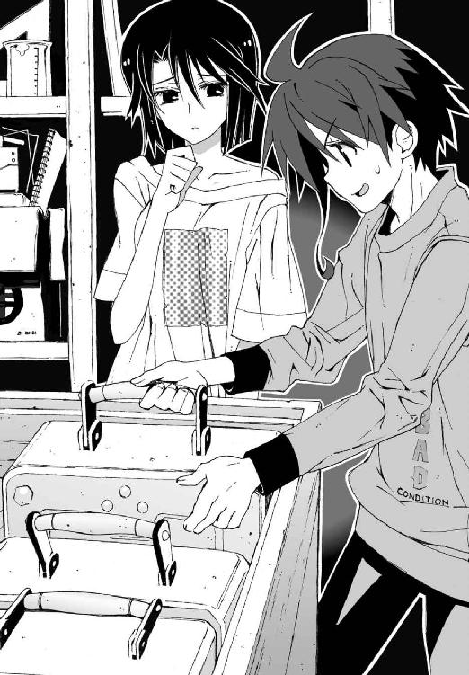
○
紫浬さんに事情を説明するのは、思った以上に時間がかかった。
ある意味それも当然の話で、彼女の中では自分は黒崎紫浬という別の人間ということになっており、しかも三年前で時間が止まったまま、なおかつ前後の記憶を失っているのだ。プロの精神科医でも、彼女に事態を把握させるのは激しく困難なことだと思われた。
とりあえず科学狂会とか悪魔とかの面倒くさい部分は後回しにして、朱浬さんに関係ありそうな部分だけを抜き出して話す。とにかく記憶を取り戻してもらわないことには、朱浬さんだっていつまでも学校を休むわけにはいかないはずだ。
つか、そもそも彼女を、あまり長いことウチに置いておくわけにもいかないのだ。
朱浬さんが記憶をなくしているなどと言っても、学校側が信じてくれるとは限らない。部活の先輩後輩といっても、僕と朱浬さんは血が繋がっているわけでもない赤の他人で、そういう関係の男女が二人だけで一緒に住んでいたら、世間ではそれを同棲という。不純異性交遊とかそういう問題ではなく、バレたら一発で退学だ。先生やほかの生徒に気づかれる前に、なにがなんでも朱浬さんには元に戻ってもらわないと僕が困る。
「──教会、ですか？」
自分が教会に住んでいた、という話を、紫浬さんは不思議そうに聞いた。
年老いた神父さんと一緒に暮らしていたということも、やはり覚えていないらしい。
しかし、僕が知っている朱浬さんの私生活といえるのはあの教会のことだけである。教会という独特の雰囲気を持った場所でもあるし、紫浬さんが実際に見てみれば、なにかを思い出すきっかけになるのではないかと思う。
「わたしが一人で行くんですか？ その教会まで？」
不安げな表情を隠さずに、紫浬さんがつぶやいた。最近の記憶が欠落しているせいか、紫浬さんには記憶を取り戻さなければならないという危機感があまりないらしい。どうして自分がそんなことをしなければならないのか、本気で不思議がっているらしい。
「すいません。僕も一緒に行ければよかったんですけど」
仕方なく僕は頭を下げた。紫浬さんは所在なげな表情を浮かべて顔を伏せ、
「そうですね......わたしがいつまでも居候してたら、トモハルくんだって迷惑ですよね......」
「いえ、迷惑ってことはないですが」
どちらかといえば、朱浬さんの人格のときのほうが明らかに傍迷惑である。
「だからなにも思い出さなかったら、遠慮なくうちに戻ってきてもらって構わないんですけど、でも、もしも記憶が戻るのなら、それは紫浬さんにとっても多分いいことだと思いますし」
「そう......なんでしょうか？」
紫浬さんが潤んだような瞳で僕を見る。
あらたまってそんなふうに訊かれると、僕としても返事に困る。
たしかに記憶喪失の原因は、肉体的な障害だけでなく、本人が思い出したくないなどという精神的なものもあるとは、僕も聞いたことがある。
しかしあの朱浬さんの性格で、人知れず記憶を消し去りたいほど悩んでいることがあるとは、あまり想像できないのだが。
「──もし、その朱浬さんという人の記憶が戻ったら、わたしはどうなってしまうんでしょう。消滅していなかったことになってしまうのでしょうか？」
紫浬さんが消え入りそうな声で言った。
その言葉で僕はようやく、彼女が記憶を取り戻したがらない理由に気づいた。
彼女の不安はよくわかった。朱浬さんという主人格が復活したら、紫浬さんの人格が消えてしまうというのはあり得る話だった。それは残酷な話であったが、だからといってこのまま朱浬さんが消えてもいいのかというと、それはまた別の問題だ。
「あのですね......こうは考えられないでしょうか。紫浬さんは朱浬さんのことを覚えてないと言ってますけど、朱浬さんは紫浬さんのことを覚えているかもしれません」
「あの......それはどういう理由で？」
紫浬さんが疑わしげに眉を寄せる。
「いや、思いつきなので根拠はないんですけど、紫浬さんは自分がまだ十四歳だと思っているわけですよね。だけど朱浬さんは実際には十七歳なんですよ。ということはつまり、紫浬さんの記憶にないことでも、朱浬さんは覚えているかもしれないわけで──たとえば、紫浬さんの名前が、実はこのあと朱浬さんに変わるって可能性もゼロではないじゃないですか」
我ながら無茶な理屈だと思った。しかもややこしい。
紫浬さんも同じことを思ったのか、しばらくの間ずっと難しい顔で唇を噛んでいた。そしてまだ少し迷っているような表情で、しかしきっぱりと、
「わかりました。その教会に行くだけ行ってみます」
「......すみません。助かります」
「いえ。これはわたしの問題ですし......でも、ひとつだけ訊いていいですか？」
「はい」
困惑する僕を、紫浬さんはいつになく真剣な表情で見つめてきた。不安そうに何度も瞬きしながら、細い声で訊いてくる。
「トモハルくんから見て、朱浬さんってどんな人でした？」
「それは──」
また難しい問題を。
朱浬さんの印象といえばとにかく美人で、いつもにこにこと笑っているくせにおっかなくて、無謀で、非常識で、なにを考えているのかさっぱりつかめない人であり、外見を別にすれば紫浬さんとは対極にあるような人物だ。
今回のことで思い知らされた。僕は彼女の本当の姿を、ほとんどなにも知らないに等しい。その中で、はっきりと断言できることがあるとすれば、それは──
「楽しそうな人です」
「......楽しそう？」
紫浬さんが不思議そうにつぶやいた。僕の言葉は、彼女にとっても意外な答えだったらしい。
「はい。とにかくいつも楽しそうですね。僕がそう思っているだけかもしれませんけど」
「彼女のこと......好きですか？」
もう一度、紫浬さんが訊いてくる。これは簡単な問いかけだった。好きか嫌いかということなら迷う必要はない。
「ええ、好きですよ」
正直言って彼女の生き方には憧れる。うらやましいとさえ思うときがある。
「よかった」
紫浬さんは胸にそっと手をあてて小さな声でつぶやいた。それから不意に顔を上げて部屋の時計を見た。もうすぐ正午近くである。
「それじゃあ、ちょっと行ってきますね」
僕の書いた教会までの地図を持って、紫浬さんは小さくガッツポーズを作った。そういう仕草をすると、ほんとうに彼女は僕より幼いのではないかと錯覚しそうになる。
「待ってください、そのままの恰好で行くつもりですか？」
僕はあわてて彼女を止めた。今の紫浬さんは、僕が貸した男物のジーンズとだぶだぶＴシャツという姿である。しかもノーブラだ。
「あ、そうか、着替えてきます。そろそろ私の服も乾いたころですね」
そう言って彼女は、ハンガーにかけた自分の服に手を伸ばした。朱浬さんの戦闘服でもある、ノースリーブの黒いワンピースと吸血鬼みたいなマントコート。
そのコートを手に取ったとき、紫浬さんは奇妙な顔をした。
怪訝そうに唇を尖らせ、コートの布地を裏返す。
対悪魔戦闘用に作られたという、防弾防刃性能を備えた頑丈なコートである。
その背中が大きく裂けていた。
単に破れていたというわけではない。巨大な刃物で一閃したように、大きく切り裂かれていたのだ。切断面があまりにもなめらかすぎて、コートをかけた僕も今まで気づかなかった。
刃物を通さないはずの朱浬さんのコートを、こうまで簡単に切り裂く技術。ある意味、芸術的ですらある。分厚い斧を力任せに振り回していた殺人人形なんかに真似できる芸当ではない。
なにか不吉な予感を感じて、僕は全身を震わせた。また少し熱が上がってきた気がする。
「それじゃ、安静にしててくださいね」
着替えを終えた紫浬さんが、屈託なく微笑んで出かけていく。
その頼りない後ろ姿を見送りながら、彼女の記憶が早く戻りますようにと、僕は初めて真剣に祈った。
○
誰かの気配を感じて目が覚めた。
「......操緒？」
無意識につぶやいてしまってから、僕は彼女がいないことを思い出す。
ぼんやりとしていた視界が次第に鮮明になってくると、僕の顔をのぞきこんでいた綺麗なお姉さんと目があった。少し気弱げな瞳の動きで、彼女が朱浬さんではないと判断できた。
「紫浬......さん？」
「ごめんなさい、起こしちゃいました？」
学生風のメガネをかけた紫浬さんが、少し申し訳なさそうに目を細めた。
彼女が鳴桜邸を出て行ってから、僕はすぐに眠ってしまったらしい。気づくとカーテンの隙間からは夕方の陽射しが漏れている。
紫浬さんはちょうど教会から帰ってきたところらしく、まだ肩にバッグを提げていた。
出かける前の彼女とはどこか印象が違うような気がして、そのことに少し戸惑ったが、
「そのメガネ、どうしたんですか？ その服も......」
「あ、これですか？」
長めのスカートの裾に手をあてて、紫浬さんは恥じらうように微笑んだ。今の彼女は、クラスで目立たない読書好きの女の子といった雰囲気で、オリジナルの朱浬さんとはもはや完全に別人だった。
「教会の裏のお部屋から勝手に借りて来ちゃったんです。メガネはなくても平気なんですけど、このほうが気分が落ち着くので」
「......はあ、なるほど」
僕はようやくそれだけを言った。朱浬さんの部屋から持ち出してきたということは、もともと彼女の持ち物ということで、文句があろうはずもない。が、あの朱浬さんのワードローブに、こんな普通の服があったというのが驚きだった。しかも、なにやら異常に似合う。
なんであの人は普段からこういう恰好をしないんだろう......もしかしてモテ過ぎて困ってしまうからなのか？
「ところで、なにか思い出したことはありました......？」
僕は枕にもたれるようにして上体を起こした。なにか顔がごわごわすると思ったら、額に熱冷ましシートが貼られていた。すっかり温くなっていたので、ずいぶん前に貼られたものらしい。自分で貼った覚えはないし、そもそもうちにはこんなものはなかったはずである。たぶん紫浬さんが出かける前に貼っていってくれたのだろうと思う。
「それが......全然」
困ったような顔をして紫浬さんはうなだれた。
「あ、でも、わたしの持っていた鍵で部屋には入れたから、トモハルくんが言ってたことは嘘じゃないんだと思います。だけど......ごめんなさい、わたしどうしてもなにも思い出せなくて」
「あの......僕に謝ってもらう必要はないですよ。記憶が戻らないのは紫浬さんの責任じゃないですから」
僕はあわてて励ましてみる。なまじ朱浬さんと同じ顔をしているだけに、こういうときはどうもやりにくい。
「科學部の部室とか、学校とか、ほかにも記憶を戻す方法に心あたりがありますから、気にしなくても大丈夫ですよ。市原先生とかに相談してみてもいいですし、そのうちなんとなく思い出すかもしれませんし」
熱でぼんやりした頭で、僕はとりあえず思いつくことを並べてみた。うつむいていた紫浬さんが、くす、と笑う。
「ありがとう。優しいんですね、トモハルくん」
「......そういうのとはちょっと違う気がするんですけど。この場合」
なんとも据わりの悪い気分で僕は言った。まさか朱浬さんにお礼を言われる日が来るとは思わなかった。まあ、正確には朱浬さんとは違うけど。
「紫浬さんも僕の看病をしてくれたんで、お互い様です」
「そう言ってもらえると嬉しいですけど、そういえば体調はどうですか？」
紫浬さんが自分の額を、熱冷ましシートごしの僕の額につけてくる。
昼頃に再び四十度近くまで上がった僕の体温は、少し汗をかいて、今はまた三十八度くらいまで下がっている。どうも昨夜からずっとこんな状態が続いているらしい。
「うーん......でも、まだかなり熱がありますね。とりあえず汗だけでも拭いちゃいましょう。わたし、タオルと着替えをとってきます」
そう言い残して紫浬さんは部屋を出て行った。ありがたいなあ、と僕は感謝する。汗で濡れた服はたしかに気持ち悪かったし、二日も風呂に入っていないので、自分でも気になり始めていたところだった。
しばらくして紫浬さんは戻ってきた。お湯を張った金だらいとタオルを持っていて、それはべつに構わない。しかし腕まくりをしている彼女の姿に、僕はいきなり悪い予感を覚えた。
「はい。じゃあ全部脱いでくださいね」
紫浬さんが、有無を言わせず僕のスウェットに手をかける。僕は愕然と身体を強張らせ、
「ま、待った......ちょっと待った！ なにする気なんですか、紫浬さん!?」
「なにって......服を着てたら身体が拭けないじゃないですか」
紫浬さんがあきれたように腰に手をあてて、ため息をついた。僕は彼女に言い聞かせるようにゆっくりと、
「あのですね。出て行ってくれたら、あとは自分でできますから──」
「なに言ってるんですかー」
紫浬さんはくすくすと笑い出す。
「居候なんですから、それくらいはやりますよ。むしろやりたいです」
「やりたいです、って......いや、居候とかそういう問題ではなくてですね」
「もう、お互い今さら恥ずかしがるような間柄じゃないでしょう？」
「え!? いや、そんなことは全然ないと思いますけど......え、ええっ!?」
僕は必死で抵抗したが、たとえ体調万全の状態でも、力で紫浬さんに勝てないことは証明済みだ。彼女はあっさりと僕をねじ伏せ、赤ん坊の相手をするみたいに一方的に服を剥ぎ取った。こういうところだけ朱浬さんと同じ性格というか、絶対に楽しんでやってるだろアンタ。
あっという間に僕を半裸に剥いて、紫浬さんはタオル片手に馬乗りになってくる。
なんか襲われているみたいだなあ、と僕は情けない気分で考えた。
紫浬さんは、楽しそうに鼻歌なんかを歌っている。その歌声があまりにも綺麗だったので、僕は一瞬、抵抗するのを忘れて、彼女の歌に聴き惚れた。
気づくのが遅れたのは、たぶんそのせいだと思う。
「......あら？」
僕に濡れタオルを押しつけたまま、紫浬さんが顔を上げた。
彼女が驚いた原因を、僕が理解するまでには少し時間が必要だった。鳴桜邸の一階から、聞き覚えのある声が響いてくる。
「──もう、智春ったら病人のクセに玄関の鍵とか開けっ放しで。ほんと不用心なんだから」
弾むように明るい女子の声。そして妙に達観したような皮肉っぽい口調。
「ま、いいんじゃねえの。寝てるところを起こしたりしたら可哀想だし、ちょっと様子を見て、見舞いだけ置いて帰るってのも」
杏と樋口の声だった。
「......っ!?」
僕は声にならない悲鳴を漏らした。そろそろ午後の授業が終わる時間で、杏たちが見舞いに来てくれるというのは普通にあり得ることだった。
お見舞いはありがたいことなのだけど、よりによってなんでこんなときに。
「あれっ......智春、起きてるのっ？」
僕の部屋に電気がついているのを確認して、杏が勢いよく踏みこんできた。
そして彼女はそのままの姿勢で、凍りついたように硬直した。彼女の手から離れたカバンが、スローモーションで落下する。
「なに固まってんだ、大原──？ 智春、生きてっか。暇だから見舞いに来てやっ──」
少し遅れて入ってきた樋口が、頬を引きつらせて静止した。
僕は為すすべもなくそれを見つめていた。
硬直したままの杏の肩が、わなわなと小刻みに震えている。こういうの前にも一度あったな、と、僕は場違いなくらい冷静に思い出していた。
「あ......」
紫浬さんがいそいそと身体の向きを変えた。ベッドの上にぺたんと座り、太腿までめくれ上がったスカートを直す。それからにっこりと微笑んで、杏たちにお辞儀した。
「こんにちは。あの......トモハルくんは、風邪で寝てますけど」
杏は返事をしなかった。うつむいたまま唇を小さく震わせて、
「......か」
かすれた声でなにかをつぶやいた。僕はそれを聞き取ろうと、ベッドの上で身体を起こした。そして僕の裸の上半身を見て、杏が、ひくっ、と瞼を痙攣させた。
杏は持っていたコンビニ袋を、勢いよく振り上げ、
「智春のばか──っ！」
ハンマー投げのように全身を回転させて、僕の顔面めがけて投げつけてくる。
コンビニ袋の中身は、桃とみかんの缶詰だった。硬い缶の縁を額の中央にまともにくらって、僕はひとたまりもなくぶっ倒れた。紫浬さんが目を丸くして振り返る。
杏はそのまま振り返りもせずに部屋を飛び出した。階段を駆け下りる足音が、次第に遠くなっていく。紫浬さんがおろおろしながら、困った顔で立ち上がった。
その間に、樋口が僕のほうににじり寄ってきた。
「おい......智春、どうなってる？ 抜け駆けか？ おまえ、いつから黒崎先輩とこんなことになってるんだ？」
実に道理にかなった質問であった。しかし、それをひとことで説明するのは不可能に近い。どうやって誤解を解けばいいのかと僕が熱を持った頭で必死に考えていると、
「まあいいや、その話はあとでゆっくり聞かせてもらうからな」
樋口が僕に文具屋の袋に入った紙の束を押しつけてきた。ルーズリーフのノートだった。けっこうな量が入っている。なんだろう。
「今日のぶんの授業のノートな。大原がとっといてくれたんだから感謝しとけよ。嵩月のぶんも一緒に入ってるから」
「......嵩月のぶんって？」
「ああ、あいつも今日は休んでたんだよ。無断欠席だったんで柱谷やんが心配してたんだけど。智春もなにも聞いてないのか？」
僕は黙ってうなずいた。昨日、変な別れ方をしたので少し気にしてはいたのだけれど、そのことで嵩月が学校を休む理由はないと思う。
「あと、これは土産だ。あとで一人のときにゆっくり見てくれ」
そう言って樋口が手渡してきたのは古い雑誌だった。男性向けの写真週刊誌だ。中学生じゃないんだから、お見舞いにエロ雑誌を持ってくるのはやめて欲しい。しかもこんな何年も前のヤツなんて。
「とにかく、邪魔して悪かったな。あとで話聞かせろよ......これで智春も大人の仲間入りかぁ」
樋口が僕の肩を叩いて、それはそれは嬉しそうな顔でへらへらと笑う。だから誤解だって。なんだよ大人の仲間って。
「先輩も智春のことよろしくお願いしますね。コイツ、初めてだと思うんで」
「あ、はい。わかりました」
「樋口っ！」
僕は大声を張り上げて、そのまま激しく咳きこんだ。なんでそういうことを紫浬さんに言うんだオマエは。紫浬さんも紫浬さんで、にこにこ笑ってうなずかないでくださいよ。
樋口がウチを出て行く足音を聞きながら、僕はベッドの上に突っ伏した。
杏に桃缶をぶつけられた額がずきずきと疼く。ちょっと冷静に考えてくれたら、勘違いだとすぐにわかりそうなものだが、ここまで話がこじれてしまうと杏の誤解を解くのは簡単なことではなさそうだ。来週からのバイトをどうしよう、と僕は落ちこむ。なにもあんなに一方的に怒らなくてもいいだろうに。
「すみません......わたしのせいですよね」
ようやく状況を理解したらしく、紫浬さんが僕の額に触れて、申し訳なさそうにうなだれた。僕はのろのろと首を振った。紫浬さんに文句を言ってどうなることでもない。
「ごめんなさい。わたし、やっぱりトモハルくんに迷惑ばかりかけちゃって」
「いや、そんなことはないですよ。これは要するに僕が不幸だというだけの話で」
「......ふふ、優しいですね」
紫浬さんが、僕に顔を近づけて笑う。彼女の息が僕の首筋に触れた。あの、いくらなんでもそれは近づきすぎではないのでしょうか。
「初めて、なんですか？」
悪戯っぽく目を細めて紫浬さんが訊いてくる。
ええ、まあ、それはそうなんですけど。言い訳するわけではないですが、幼なじみの幽霊に二十四時間態勢で監視されていたもので。
しかし、その操緒も今はいない。
眉を逆立てて怒っている色素の薄い少女の顔が脳裏をよぎる。
紫浬さんが、艶やかな唇をそっと寄せてくる。頭の芯がぼんやりとして、今は難しいことがなにも考えられない。いいのかなあ、と思いながら、僕は黙って目を閉じた。
「......！」
紫浬さんが、前触れもなく突然、全身を硬直させたのはその直後だった。
彼女が発した異様な気配に、驚いて僕は目を開けた。紫浬さんは、こぼれ落ちそうなほどに目を開けてなにかを凝視していた。彼女の機械化された細い手足から、静電気のような火花が散る。紫浬さんが──いや、朱浬さんがここまで感情を昂ぶらせた姿を、僕はこれまで見たことがなかった。
「紫浬さん......!?」
僕は彼女の視線を追った。紫浬さんが怯えたように見つめていたのは、樋口が持ってきた古い写真週刊誌だった。
僕は気づいていなかったのだが、樋口が、その週刊誌のページの一部にしおりを挟んでいたらしい。ベッドの上に落としたときに、そのページが開いてしまっていた。
見開きのページに掲載された特集記事だ。タイトル文字のすぐ下に、色褪せたカラー写真のスナップショットが大きく印刷されている。
そこには人形のように可愛らしい二人の少女が、肩を寄せ合って写っていた。
僕はその少女の顔を知っていた。
「紫浬さんっ──！」
激しい火花が紫浬さんの身体を包みこみ、僕は衝撃で弾き飛ばされた。
紫浬さんは大きく瞳孔を開いたまま、仰向けに倒れてぴくりとも動かない。まるで美しい人形になってしまったようだ。
「紫浬さん......」
僕は呆然とつぶやいた。焦げ臭い臭いが漂ってくる。脱ぎ散らかされた服を急いで身につけ、僕は倒れた彼女を抱き起こそうとした。
「しっかりしてください、紫浬さん──紫浬さん！」
僕は半泣きになりながら、動かない彼女の身体を揺さぶった。しかし紫浬さんに反応はなかった。呼吸の気配も感じない。彼女の胸に耳を押しあててみても、自分の心臓の音がうるさすぎて紫浬さんの鼓動が聞こえない。
ほとんどパニックに陥って、僕は携帯電話に手を伸ばした。
しかし誰に助けを求めればいいのかわからない。
科學部顧問の市原はアテにならない。ましてや樋口や嵩月の手に負える事態ではないだろう。
唯一、彼女を救える可能性があるとすればうちの兄貴だが、海外留学中のあの男にはこちらから連絡を取る手段がなかった。
今さらながら僕は自分が、これまでどんなに朱浬さんを頼りきっていたのか思い知らされた。こんなときはいつだって朱浬さんが僕を助けてくれた。彼女にはわからないことなどなにもなく、いつだって僕が進むべき道を教えてくれる。そんなふうに思っていた。
そんなことがあるわけなかったのに。
朱浬さんは僕よりたった一歳年上というだけで、万能の女神でもなんでもない、ただの女子高生なのだ。そんなことさえ僕は今までちゃんと理解していなかった。
僕は朱浬さんに振り回されているふりをしながら、その実、彼女を都合よく利用していただけなのかもしれない。そんなことにも気づかなかった自分に嫌気がさす。
彼女を助けるためなら、どんなことでもしようと思った。しかし実際に僕にできることなど、祈ること以外になにもなかった。演操者であることなど無意味だった。破壊するしか能のない機巧魔神など、本当になんの役にも立たないのだと実感する。
そしてどうしようもなく間の悪いことに、僕の背後で、ゼンマイが巻き上がるような耳障りな音が聞こえてきた。閉めてあった窓がゆっくりと開いていき、その向こう側に、表情のない白い顔が浮かび上がる。
『──オ取リコミ中、申シ訳ナイっスケド......』
灰色のコートを着た子どもみたいな人形が、巨大な斧を担いだまま、じりじりと部屋の中に這い出した。鳴桜邸の外壁を、強引によじ登ってきたらしい。
『アンタラ、チョット緊張感ガ欠ケテルンジャナイッスカ？ 二十四時間以内ニすたびらいざヲ引キ渡セト言ッテオイタっス』
なにやらふて腐れたような口調で人形が言った。
もしかしたらコイツは窓の外で、姿を現すタイミングをずっと待っていたのかもしれないと思った。僕と紫浬さんがいい雰囲気だったりしたから、出るに出られなかったのかもしれない。そのせいか、勝手にずいぶん怒っている。
『サア、すたびらいざヲ渡スっス。返答次第デハタダデハ済マサナイっスヨ？』
目の奥に真紅の光を輝かせて、人形が脅す。
動かない朱浬さんを抱えたまま、人形が引きずる斧を見つめて、僕はぼんやりと考えた。
もしかしたら、こういうのを絶体絶命というのかもしれない──と。
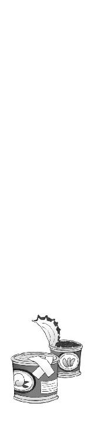
五章
『約束の期限っス──すたびらいざヲ渡シテ欲シイっス。抵抗シテモ無駄っスヨ』
斧を引きずった殺人人形が、間の抜けた無表情のまま要求してきた。
あれからもう二十四時間経ったのかと、熱に浮かされた頭で僕はぼんやり考えていた。全然勉強できなかったな、とあまり関係ないことを後悔する。試験前の貴重な一日だったのに。
「べつに抵抗しないよ」
僕はため息と一緒につぶやいた。人形は肩透かしをくらったみたいに、がくん、とよろめき、
『......抵抗シナイっスカ？』
「しないよ。そのかわり、この人には手を出さないでくれるかな。見てのとおり病人だから」
『ハア......ソレハベツニイイっスケド』
半信半疑という口調で、人形が僕を睨め上げてくる。こんな出来損ないのカボチャみたいなヤツにすら信用されないのは、正直少しむかつくが、
「こっちだよ」
僕は倒れた紫浬さんを背後に庇うようにして部屋を出た。まだ少しふらつく足で階段を降り、兄貴の実験室へと向かう。人形は斧をずるずると引きずりながら、おとなしく僕についてきた。
「ちょっと訊きたいんだけどさ......スタビライザってどういうもの？ なんで真日和はこんなことしてるわけ？」
『ベツニおれハ「すたびらいざ」ガ欲シイワケジャナイっス──』
そこまで普通に喋ってから、人形は突然、あわてたようにぎこちなく手足を震わせた。僕の顔を指さして大げさに声を上擦らせながら、
『ナ、ナンデおれガコノ人形ヲ操ッテルッテワカッタっスカ!?』
「いや......なんでって訊かれても」
昨日の出現のタイミングに、このしゃべり方。これでバレないと思うほうがどうかしていると思う。
「あれだろ......昨日、真日和が風呂の修理に来て佐伯の尻を触ったのも、この人形をうちに忍びこませるためだったんだろ？」
僕は投げやりな口調で確認した。
真日和は、朱浬さんがうちに隠れていることを確認するために、工務店のバイトとして鳴桜邸に入ってきた。遠隔操作ができるこの殺人人形を、こっそり置いて帰るつもりだったのだ。
しかし、そのときたまたまリビングには佐伯妹と嵩月がいた。きりきりと耳障りな音を立てる殺人人形なんかを置いていったら、いくらなんでも一発でバレる。
そこで真日和は佐伯妹に痴漢行為を働いて、彼女が大騒ぎしている隙に無事人形を忍びこませることに成功した、というわけだ。
『ヤルっスネ......夏目クン。ボーットシタ顔ダト思ッテ甘ク見テタっス』
人形の口を借りて、真日和が言う。どうでもいいけど、ぼーっとした顔というのはこの場合、余計なのではないかと思う。
「スタビライザが要らないのなら、どうして取り戻そうとしてるわけ？」
『嘘ジャナイっス。おれハ要ラナイッス。デモ、欲シガッテル人ガイルっスヨ』
「その人に......雇われたってこと？」
『ソンナ感ジッス。奪ワレタ「すたびらいざ」ヲ取リ返ストイウノガ依頼ノ内容っス。無益ナ戦闘ハ避ケラレルノナラ避ケタイっスヨ。ゴ協力、感謝ッス』
「感謝ねえ......」
本当に感謝してくれればいいけどな、と思いながら、僕は実験室のドアを開けた。
埃の積もった実験室の奥に、例の木箱がぽつんと置かれている。
部屋の中を見回して、真日和の人形が怪訝そうに訊いてきた。
『ドコっスカ、「すたびらいざ」ハ？』
「あれだよ。あの木箱の中」
『罠トカ仕掛ケテソウナ雰囲気っスネ......』
人形が疑わしげな口調で言った。たしかに言いたくなる気持ちもわかる。しかし現実はもっとしょうもないことなのだ。
『......ナンすカ、コレハ!?』
予想どおり、人形が愕然と叫び声を上げた。木箱の中を無造作に引っかき回し、それだけでは飽き足らなかったのか、斧を振り上げて外枠ごと叩き割った。
破壊された木箱からこぼれだしてきたのは、大量のアタッシュケースだった。
元から木箱の中に入っていたという十五個のケースと、紫浬さんが放りこんでしまった問題のスタビライザ入り謎ケース。
どれも同じデザインで大きさも同じ。取っ手の色や、周囲にくっついているネジの数が違うだけである。間違い探しをしているようだ。
『ドウイウツモリっスカ、夏目クン？』
真日和の声が怒っている。僕は黙って肩をすくめた。たぶんこうなるだろうとは思っていた。
「見てのとおり、この中のどれかが本物だと思うんだけど、あ、ワザとじゃないんだよ。事情を知らない人が混ぜちゃって......なんだったら、全部持ってってもらっても──」
『時間稼ギノツモリっスカ？ ワザトジャナイナンテ、ソンナ言イ訳ガ通用スルトデモ......？』
「だから嘘じゃないって。人の話を最後まで──」
『黙ルっス。穏便ニ済マセヨウトシタ努力ヲ踏ミニジラレタおれノ心ノ傷ハ深イっス。コウナッタラ、多少イタイ目ヲ見テモラウシカナイヨウっスネ──！』
「だからなんでそんな結論になる!?」
叫びながら僕はじりじりと後退した。
きりきりとゼンマイを巻き上げながら、殺人人形が斧を振り上げた。『殺ス、殺ス』などと呪文のように叫び出す。思いつく限り最悪の展開だが、実はこうなる可能性を予測していないわけではなかった。まあ、あの木箱の中身を見て、怒らないほうがおかしいよな。くそっ。
「──動くな、真日和」
僕は壁際の段ボールの中に手を突っこんだ。そして隠してあった切り札を取り出した。表情を変えない人形の瞳の奥が、驚いたように明滅した。
ずっしりと重い感触にふらつきながら、僕は銃口を人形に向けた。エアガンなんかではない、本物のサブマシンガンである。洛高に入学して間もないころ、鳴桜邸を襲ってきた神聖防衛隊の連中が落としていったものだった。弾丸もちゃんと入っている。
人間を相手にこんなものをぶっ放すような度胸はないが、相手が人形ならば話は別だ。
『ソウイウモノヲ持チ出スト、代償ガ高クツクっスヨ』
真日和が声を低くして言った。それは正論かもしれないが、人ん家で斧を振り回しているやつに指摘されたくない。
『殺ス、殺ス、敵ハ殺ス！』
人形が斧を掲げて跳躍した。
僕はサブマシンガンを思いきり連射した。射撃姿勢が正しくなかったせいか、銃口がふらついて狙いが定まらない。それでも何発かは確実に命中したらしい。不自然な姿勢でのけぞりながら、殺人人形が後ろに吹っ飛んでいく。撃ち抜かれた斧の柄が砕けて、落っこちてきた分厚い刃を、僕は必死で転がってよけた。
弾の切れたサブマシンガンを放り出して、僕はよろよろと立ち上がる。
たったそれだけの運動で、息が完全に上がっていた。脚に力が入らない。銃撃戦なんて風邪っぴきでやるようなことではないと、身に沁みて理解する。が──
その直後、僕は悲鳴を上げた。
『ヤリ返ス......ヤラレタラ、ヤリ返ス』
間の抜けた感じに頭部のへこんだ人形が、倒れた机によじ登って再び姿を現す。どてっ腹に大穴が開いているが、たいしたダメージでもないらしい。
灰色のコートの袖口から、ぬいぐるみのような丸っこい手がのぞく。やけに愛嬌のあるデザインだな──などと思っていられたのは一瞬だった。人形の手首がかぽん、と外れて、そこに刃渡り二十センチはありそうな凶悪なナイフが飛び出してくる。
さすがにこれはヤバい、と思った。小回りが利くぶん、さっきの斧よりもタチが悪い。
『殺ス、殺ス──夏目智春ヲぶっ殺ス！』
歌うように叫びながら人形が走り出す。僕は力尽きてもう動けない。
そのときまったく思いがけない方角から、思いがけない声が聞こえてきた。
「──それは、許しません」
奇妙な迫力に満ちた、澄んだ声。聞こえてきたのは、僕の足下。地下の方角だ。
『アァッ......!?』
刃を振りかざして走っていた人形が、突然、足を取られて転倒した。
まるで脆くなった消し炭のように、床板の一部が崩れ落ちた。
その周囲から白煙が噴き上がる。
火事になったのだと僕は思った。鳴桜邸の床が燃えていた。焼け焦げた床板を踏み抜いて、人形は身動きがとれなくなってしまっている。
そして地下から伸びてきた刃が、人形の胴体を貫いた。
青白く光り輝く灼熱の刃。熔岩を固めて鍛えたような、濃密な炎の噴流である。
「焔月っ──！」
再び澄んだ声が鳴り響く。その美しい叫びに合わせて、炎の刃が踊るように舞う。
そして古びた床板を螺旋状に切り裂いて、一人の少女が姿を現した。
彼女の左目が、淡い緑色に発光していた。まばゆい炎を羽衣のようにまとった、長い黒髪と巫女服の少女──嵩月奏。
「た、嵩月!?」
僕は愕然とつぶやいた。
兄貴から僕が引き継いだこの鳴桜邸には地階がある。小学生が夢想する秘密基地のような、巨大な地下室。その名を冥王邸という。仰々しい名前だが、その実体は洛高科學部の物置だ。
嵩月は、その地下室に入る鍵を預かっている。だから彼女が、そこから出てくるのは物理的には不可能ではない。問題なのは彼女がいつから、どんな理由でそこに潜んでいたのかということだ。
悪魔の血族である嵩月の血は、彼女の意志に反応して摂氏数千度の炎に変わる。その地獄の業火に切り裂かれては、真日和の殺人人形はひとたまりもなかった。
灰色のコートごと胴体が焼け焦げ、切り離されたカボチャ頭がころころと床を転がっていく。
「嵩月......なんで......」
「来ないで！」
近づこうとしたら怒られた。
嵩月は僕に背中を向けたまま、自らの炎が生み出す気流に黒髪をたなびかせていた。
腰の高さで広げた両手は、油断なく身構えているようにも見える。そして突然、僕のほうを振り返ると、
「──ようやく、見つけた」
「えっ!?」
彼女の掌に巨大な火球が膨れ上がり、嵩月はそれをすさまじい勢いで投げ放った。撃ち出された火球は僕のすぐ脇をかすめ、背後の窓を撃ち抜いて──
そして庭にある桜の木の前で、突然、見えない壁にぶつかったように四散した。
竜巻のような突風が巻き起こり、炎の流れを遮ったのだ。
嵩月の炎に照らし出されて、渦巻く突風の中心部にゆらゆらと影が浮かび上がる。
不鮮明だったその影は、やがてはっきりとした人の姿になった。灰色の作業服を着た、タレ目の男。真日和秀。
そして彼の背後に、もうひとつ影が現れる。
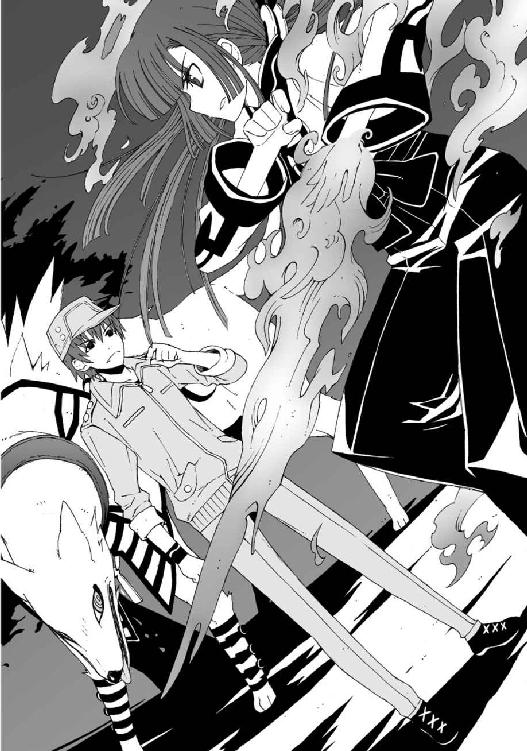
サラブレッド並みに巨大な、金色の毛並みの美しい獣。この世界で普通に存在する動物ではあり得ない。獣は、真日和に付き従い守るように、彼の背後に立っている。
「──使い魔」
嵩月が静かにつぶやいた。
僕は完全においてけぼりにされた気分で、ただ呆然と彼女たちを見比べていた。
○
忘れかけていた頭痛が、また酷くなってきた。
そうこうしている間にも嵩月と真日和は睨み合い、一触即発の緊張感を際限なく高め続けていた。なんでこんなことになっているのだ。状況がさっぱりつかめない。
突然うちの地下から嵩月が出てきて、いきなり真日和に攻撃を仕掛けた。僕に理解できるのはそれだけだった。絶対どこかに大きな誤解があるのだと思う。
これまでの事件でもそうだった。どんなに絶望的な状況に思えても、フタを開けてみれば実はあっさり片づく問題だったりするのだ。今回のことも似たようなものに違いない。そうであってくれと真剣に祈る。
「──話し合おう」
僕はいきなり大声で叫んだ。
嵩月と真日和が、怪訝顔で僕を振り返る。とりあえずその火の玉と獣だけでもどうにかして欲しいなあと思う。近所の人に見られたら、どうやって言い訳すればいいのか見当もつかない。
「あのさ、べつに二人が戦り合う理由はないだろ。こういう場合、ねばり強く交渉してお互いの妥協点を探るべきだと思うんだけど」
などと、操緒が言いそうなことを思い出しながら言ってみる。
やれやれと真日和が首を振るのが見えた。
「そういうことは、先にそっちのお嬢ちゃんに言って欲しいッス」
殺気立って炎をまき散らしている嵩月を見ると、真日和がそう言いたくなる気持ちもわかる。
「うちの人形をぶっ壊したのも、その子じゃないッスか。アレ、ああ見えてけっこう高いんスよ。このままだと今回の仕事は大赤字ッス」
知るかそんなこと、と思わないでもないが、真日和は真剣に困っている様子ではあった。
そして一方の嵩月は、
「......夏目くんに手を出すのは許しません」
うー、と細い声でうなりながら、真日和を睨みつけている。
やはりどこか話が噛み合っていない感じがする。とはいえ、彼女が僕を助けてくれたのも事実であった。
「そういえば嵩月......なんで地下から出てきたんだ？」
ふと気になって訊いてみる。嵩月が学校を休んでいたと、樋口が言ってたのも気にかかる。
「あ......それは......夏目くんの家の近くで、使い魔の気配を感じたから」
突然、弱々しい口調になって嵩月が言った。
ちょっと待て。それって、いつの話だろう。そういえば、佐伯妹と一緒にうちに来たとき、嵩月の態度が急によそよそしくなったような気がしたが──
「え？ もしかして昨日から？」
まさか、と思いながら訊き返す。嵩月は困ったような顔でうなずいた。
佐伯妹と別れたあと、着替えて外の入口から地下に潜り、そのままずっと地上の様子をうかがっていたということか。そんなことしなくても、嵩月が一緒にうちにいてくれたら、紫浬さんの相手をするのが楽だったのに。
「って......じゃあ、嵩月は地上でなにがあったのかも知ってたの？」
唖然として僕が訊くと、嵩月はこくりとうなずいた。
「あー......だいたいは」
「朱浬さんの記憶がないことも？」
こくり、と嵩月は無言で首肯。
「僕が熱で寝こんでたのも？ あ......もしかして昼間の熱冷ましシートって......」
こくりこくり、と恥じらうように顔を伏せる嵩月。僕は酷い眩暈を感じて倒れそうになった。そんな回りくどいことをしなくても、普通に看病してくれればよかったのに。
しかし嵩月には、それができない事情があったのだ。僕が真日和の使い魔に監視されていたからだ。
「使い魔......やっぱり真日和の連れてるでかい犬みたいなヤツは使い魔なのか──うわっ！」
真日和の背後に立っていた巨大な獣が、突然、緑色の瞳を輝かせて前肢を振った。大気が異様な具合に振動して揺れた。ものすごい風圧に突き飛ばされて、僕はその場に転がった。
あっ、と嵩月が目を大きくして、真日和を睨む。真日和は困ったような顔で頭をかきながら、
「犬って言葉は禁句ッスよ。すごく気にしてるんスから」
そんなことを言われても、でかい犬にしか見えないのだから仕方がないと思う。百歩譲って、尻尾の痩せた狐といったところか。
「あー......あれは風獣......カマイタチです」
見かねた嵩月が教えてくれる。真日和は、かすかに顔をしかめてうなずいた。
「そうッス。嵩月家と同じ華鳥風月の四名家のひとつ......風斎一族の使い魔ッス」
「風獣......」
僕は膝を突いて倒れたまま、真日和に従っている獣形の使い魔を見つめた。あれが柱谷先生のキャメロンと同じ、人間と悪魔の女子の間に生まれた使い魔だとしたら──......
「真日和って......悪魔の契約者なのか？ ってことは、真日和の彼女って嵩月と同じ、悪魔？」
「あー......まあ、そういうことになるッスねえ」
作業服の少年は、タレ目を細めて言い辛そうにつぶやいた。それはまあ恥ずかしい話かもしれんなあ、と思う。嵩月みたいな子の前では特に。
「ちょっと待てよ。だったら真日和って黒科学寄りの人間だろ。それがなんで嵩月と戦ったり、朱浬さんを追っかけたりしてんだよ？」
「──べつに悪魔の力を手に入れた人間が、みんな科學部の味方ってワケじゃないッスよ」
「それはまあそうなんだろうけど......でも......」
「さっきも言ったけど要は経済の原理ッス。ウチらは相応の対価さえもらえば、誰の依頼でも受けるッス。誰の味方でもないッスよ」
「ウチらって......真日和ってもしかして」
僕のつぶやきに、真日和は勝手にうなずいた。
「洛高第二生徒会──巡礼者商連合の会計、真日和秀ッス。よろしく」
「......巡礼者商連合」
激しい頭痛の発作に、僕は額を押さえた。真日和が悪魔の存在を知っていた時点で、もっと早くに気づくべきだった。朱浬さんが前に言っていた、第二生徒会は敵でも味方でもないというのは、そういう意味か。報酬次第で彼らは敵にも味方にもなる、と。
「つうわけでそろそろオレ的には、こんなうま味のない仕事は終わらせたいッスよ」
そう言って真日和は、自分の使い魔の首筋に手をかけた。彼の使い魔の表情が、それだけで目に見えて険しくなる。
嵩月が僕を庇うように低く身構えた。
しかし、この勝負は圧倒的に嵩月に分が悪かった。契約者を持たない嵩月の力では、成体の使い魔には敵わない。そのことは土琵湖での戦いで証明済みだ。
使い魔に対抗できるとすれば、それはただひとつ──悪魔を倒すために造られた機械の悪魔、機巧魔神だけである。
「いいんだ、嵩月」
僕は彼女の前に出て嵩月を制止した。嵩月が戸惑うように唇を噛む。
「うー......」
「真日和の目的は、あの中にあるスタビライザってやつを持っていくことなんだ。ここで僕たちが戦う必要はないんだよ」
「ええ、まあ......そのことなんスけど......」
真日和が、ちょっと言い出しにくそうに自分の鼻の頭を撫でる。僕は迷惑な目つきで彼を見た。嵩月を刺激するようなことを言わないでくれればいいのだが、
「今回の依頼人はちょっと厄介な相手でしてね、もう時間もあんまり残ってないんスよ」
だからなんなんだ、と僕は思う。そっちの商売のことまで面倒を見てやる義理はないぞ。
「さすがにあのケースを全部持ってくってわけにもいかないし、あの中に本物のスタビライザが入ってるって保証もないッスからね。だからここはひとつ協力して欲しいッス」
「......協力って？」
「一緒に来て、依頼人のお姉さんに事情を説明して欲しいッスよ。科學部にとってもいい話だと思うッス。最悪、夏目クンを人質ってことにしてスタビライザを取り戻せば......」
「人質......!?」
真日和の言葉を最後まで聞かず、嵩月が端整な顔を凍りつかせた。彼女の全身から、すさまじい量の炎が噴き上がる。
「嵩月、待った」
「やめるッス、ヴィヴィアン！」
僕と真日和が同時に叫んだ。真日和の使い魔の風獣が、嵩月の殺気に反応して飛び出していた。獣の四肢から放たれた突風が、真空の断層となって嵩月を襲った。炎をまとった嵩月が、舞うような動きでそれらをかわす。
嵩月の実家に伝わるという、炎舞と呼ばれる戦闘技法だ。全身にまとう炎の壁を目印にして、彼女は不可視の風の刃を見切っているのだ。
「夏目クン、彼女を止めて欲しいッスよ！」
真日和が無責任なことを言ってくる。そんなことができるわけがない。高位の悪魔と使い魔との激突なのだ。もはや普通の人間が手出しできるような世界ではない。
「悪いけど無理。できるんならそっちの使い魔を止めてくれ。だいたいオマエが不用意に人質とか言うから、こういうややこしい事態になってんだろ」
「そんなこと言ったって、ＧＤを敵に回さないほうが科學部のためだと思ったッスよ」
真日和が不満そうに唇を歪める。ＧＤ、というのが彼らの依頼主の名前らしい。
「だいたい夏目クン演操者なんでしょ。なんで肝心なときに射影体を連れてないッスか？」
「う......」
そこのところを指摘されると弱い。本来なら、あの使い魔を止めるのは、嵩月ではなく僕の機巧魔神の役割だからだ。
「とはいえ......さすがにこのままじゃマズイっすね」
真日和の口調に焦りが滲んだ。嵩月と、真日和がヴィヴィアンと呼んでいた彼の使い魔は、鳴桜邸の屋根に上がって、人外の戦いを続けていた。
嵩月はヴィヴィアンの攻撃を華麗にいなし続けているが、彼女の攻撃も風の障壁に遮られて使い魔の身体には届かない。彼女たちの戦いは互角のまま、長期戦の様相を見せ始めていた。
「いや──あの勢いで血を流し続けていたら、いくらなんでも彼女のほうが保たないッス」
真日和が、ぞっとするほど冷静な声で指摘した。
その言葉に僕は呼吸を止めた。忘れていた。
嵩月が操る地獄の業火は、彼女自身の血液でもあるのだ。
そして今の嵩月は、どう見ても限界以上に炎を放出している。あのままで彼女の体力が保つわけがない。嵩月を止めなければ、と僕が思った瞬間、
「嵩月っ──！」
彼女の身体が貧血を起こした子どものように、ぐらり、と頼りなくよろめいた。
「よすッス、ヴィヴィアン！」
真日和が叫んだ。しかし本能的に好機を察した風獣は、上空から牙を剥いて無防備な嵩月を強襲する。今の嵩月の炎には、それを止めるだけの威力がなかった。
「鐵っ！」
僕は必死で機巧魔神の名前を呼んだ。しかし《鐵》は反応しない。それどころか、強烈な眩暈と悪寒で、僕はその場に崩れ落ちた。残っていたわずかな体力を、根こそぎどこかに持っていかれたような感じだ。
嵩月が握っていた炎の刀が、風獣の牙に噛み砕かれて霧散した。
地上に落ちた嵩月は、かろうじて姿勢を立て直して着地した。しかし、その場に膝を突いてそのまま動かない。武器を失った彼女をめがけて、風獣が前肢を振り上げた。肉眼でもはっきりと見えるほどの濃密な風の断層を、雄叫びとともに振り下ろす。
『闇より昏き絶望より射ゆし──』
声が聞こえてきたのは、そのときだった。華やかに流れる歌のような声。その声が、鈍い金属質の残響へと変わっていく。擦れ合う金属のような重々しい音色へと。
まばゆい閃光が黄昏の空を照らした。
開け放たれた鳴桜邸の窓辺に、黒い影が立っていた。
漆黒のワンピースの裾をなびかせた美しい影。彼女が突き出した右腕から、火花のような光が放たれている。弓矢のようなシルエットを形作る、その閃光を構えているのは──
「朱浬さん!?」
『──其は科学の罪に嘆く牙！』
朱浬さんの唇から、荘厳な機械の声がこぼれた。
それは機巧魔神の声だった。僕自身の耳で何度も聞いた、機械仕掛けの悪魔の声だ。
そして彼女の右腕から、強大な魔力の奔流があふれ出す。
魔力は光り輝く矢弾となって、真日和の使い魔へと放たれた。巨大な獣の牙にも似た矢弾は、風獣がまとう風の障壁を呆気なく貫き、使い魔の身体へと突き立った。
「ヴィヴィアン──!?」
真日和が絶句して立ち尽くす。彼の使い魔がぐらりとよろめき、庭木の何本かを蹴散らして地上に落ちた。僕と嵩月は唖然としてその姿を見つめていた。致命的な傷ではないが、少なくともこれ以上の戦闘は無理だ。なんなんだ、今の朱浬さんの攻撃力は。あれではまるで──
「二体目の機巧魔神がいるなんて、聞いてないッスよ──!? 話が違うッス！」
傷ついた使い魔のもとに駆け寄って、真日和が叫んだ。
真紅の瞳を輝かせて、朱浬さんはそんな彼らを静かに見下ろしている。
しかし驚いたのは僕も同じだ。今の朱浬さんは、本当に機巧魔神を見ているようだ。今さらあの人のやることに驚いていたら身が持たないとは思うのだが、それにしても彼女にあんな能力があるなんて聞いてない。
その朱浬さんが、ゆっくりと視線を巡らせて僕を見た。
敵意に満ちた彼女の瞳に、僕は絶望的な恐怖を感じた。かつて見たことがないほどの恐怖と威圧感を、今の朱浬さんはまき散らしている。
しかし朱浬さんの瞳は僕というより、僕のすぐ背後に向けられているようにも見える。そこになにがあるのかと振り返り、そして僕は自分の胸を強く押さえた。このまま破れるのではないかと思うほど、心臓が激しく暴れている。
「話が違う──本当にね」
場違いなほど涼しげな声が、僕の頭上から聞こえてきた。
短い髪のよく似合う、美しい少年のような美少女が、上着のポケットに手を入れたまま含み笑いを漏らしていた。彼女と出会うのは二度目だった。
朱浬さんが住んでいる教会で言葉を交わした、雪原瑤と名乗った少女だ。いつからそこで見ていたのか、立ち枯れた庭木の枝の上から僕に微笑みかけ、
「約束の期限までに依頼を果たせないなんて、巡礼者商連合のレベルも落ちたものだ、と思ったのだけど──これでは仕方ないかもしれないな。まさか《鐵》の演操者の彼女が、嵩月家の一人娘だったとはね」
瑤は苦笑するように前髪を揺らして、僕と嵩月の顔を交互に見つめた。嵩月が顔を赤くしてうつむくのがわかる。僕はこの場に操緒がいなかったことを、ほんの少しだけ感謝した。
「雪原さん......真日和の依頼主って、まさか、あなたが......？」
僕は心臓を押さえたまま訊いた。彼女を前にすると、どうしようもなく胸が苦しくなる。気持ち悪いということではなく、むしろ逆だ。片思いの相手を前にしたときのように胸が高鳴る。
困惑する僕を見つめて瑤は笑い、そしてなにか言おうと口を開きかけた。
朱浬さんの手足に埋めこまれたハッチが、重々しい作動音とともに開いたのはそのときだ。
内蔵された無数のミサイルが、爆音とともに一斉に撃ち出される。それらは白煙の尾を引いて、瑤の頭上へと降りそそいだ。
「雪原さん──!?」
僕は絶句して、炎に包まれる彼女を見た。嵩月が呆然と口元を覆っていた。僕は朱浬さんを睨みつけた。無茶な人だとは思っていたが、これはそんな生易しい言葉では済まされなかった。
まさか生身の人間を相手に、ミサイルを撃ちこんだりするなんて。
だがしかし、朱浬さんの表情を見た瞬間に僕の怒りは消滅した。彼女の口元に浮かんでいたのは、寂しげな微笑と、怯えにも似た真剣さだったのだ。
「逃げるわよ、トモハル！ 奏っちゃんも！」
いつの間にか朱浬さんの手には、あの謎ケースが握られていた。そのケースを握った左手で彼女は、座りこんでいた嵩月を抱え上げ、空いている右手を僕の腰に巻きつけた。
朱浬さんの背中のバックパックが、黒い可変翼を展開する。
「ちょっと、朱浬さん──逃げるって......」
問い返そうとした僕の言葉は、途中で途切れた。強烈な加速に、弱った内臓が悲鳴を上げた。点火された二基のジェットエンジンが、僕たちの身体を一瞬で上空へと運んでいく。僕が気絶しないで済んだのは、ほとんど奇跡のようなものだった。
僕はのろのろと朱浬さんの横顔を振り返った。ここ数日ですっかり見慣れた、端整な横顔。しかし迷いのない真紅の瞳は、まぎれもなく朱浬さんのものだった。彼女の記憶が戻ったのだ。
そして朱浬さんが復活した途端に、僕は生身のまま市街地上空を飛行するという、人間離れした苦行に巻きこまれているわけだ。
足下に見える鳴桜邸が、見る間に小さくなっていく。
そこで過ごした紫浬さんとの穏やかな日々を思い出し、僕は本気で泣きそうになった。
○
嵩月の長い黒髪が、風に乗って宵闇の空に流れていく。
ただでさえ色白の彼女の頬は完全に血の気を失って、朱浬さんの腕の中でぐったりとうなだれていた。
とはいえ顔色の悪さでは僕も負けてない。風邪っぴきで熱を出している上に高所恐怖症で、しかも寝間着姿に裸足の僕は、顔を土気色にして朱浬さんの腕に必死でしがみついている。
洛高の裏山を見下ろせるほどの高さにまで上昇したところで、朱浬さんは上昇をやめて水平飛行に移った。その瞬間、ぐらりと僕たちの身体が揺れた。
「おろ？」
朱浬さんが、驚いているのだか余裕なのだかわからない声を出す。振り向いた彼女の視線の先を追って、僕は短く悲鳴を上げた。朱浬さんの翼の右側の端が消失していた。
逆デルタの黒い可変翼が三分の一ほど、怖ろしく鋭利な刃物で切り落としたように消えている。あまりにもなめらかな切断面に寒気を覚えた。これと同じように切り裂かれていた、朱浬さんの黒いコートのことを思い出す。
「瑤のせいよ」
朱浬さんが忌々しげにつぶやいた。彼女にしてはめずらしい表情だ。
「雪原さん？ だけど、彼女は......」
ミサイルの全弾斉射をくらって、消し飛んだのではなかったのか？
「まさかっ。瑤が相手じゃ、あんなの目眩ましにもならないわ──これが証拠。あの一瞬で翼を片っぽ持ってかれちゃった。ギリギリ目的地までは保つと思うけど」
「......雪原さんって、何者なんです？」
朱浬さんみたいなのに、ここまで言われる彼女は、ホント何者だろう？
「瑤はＧＤよ。関東学生連盟の武装生徒指導員──洛高の前第一生徒会長、っていったほうがわかりやすいかな」
「前の第一生徒会長......」
僕は佐伯兄のことを思い出していた。そういえば二年生の彼が生徒会長をやっている理由を訊いたとき、佐伯兄が、事情がある、と言葉を濁したような気がした。
それはつまり本来の生徒会長である瑤が、学生連盟に引き抜かれたからということか。
「──彼女も機巧魔神の演操者だったりするんですか？」
ふと思いついて訊いてみる。教会で瑤と出会ったとき、逆光の中に一瞬だけ浮かび上がった髪の長い女性は、ひょっとして彼女の射影体ではないのだろうか。
「そうよ。しかも最悪のね」
朱浬さんが、いーっ、と白い歯を剥いて言う。瑤の話題になると、朱浬さんの意外な表情がたくさん見られてちょっと面白い。
しかしこれで少し事情がわかってきた。たしかに機巧魔神を盾に使えば、あれだけのミサイルの直撃にも耐えられるだろうし、朱浬さんの翼を切り裂いたのも、機巧魔神の能力だとすれば納得がいく。それにしても最悪の演操者というからには、あの佐伯兄よりも厄介な相手ということか？
「──なんでそんな人からモノを盗ったりしたんです？」
おかげで僕と嵩月は死にかけたし、鳴桜邸もあちこちぶっ壊されてしまった。おまけに杏たちには誤解されるし、思い出すとだんだん腹が立ってくる。
「スタビライザはべつに瑤のものじゃないわよ。どっかの悪魔の結社が密輸した荷物に紛れてたのを、タダ同然で買い取っただけ」
「............」
たしかに盗んだわけではなさそうだが、それはやはり犯罪の片棒を担いだということではないだろうか。違法な品と知っててそれを買うのは、やっぱり違法行為になった気が──
「てか、そもそもスタビライザってなんなんです？ あとどうやってこのケースが本物だって見分けたんですか？」
紫浬さんが木箱の中に突っこんだ本物のケースは、ほかの十五個とほとんど区別がつかなかったはずだ。どうやってあの一瞬で本物を選び出したのだろう。
「臭い」
朱浬さんはにっこりと微笑んで言う。
「は？」
「このケースにだけトモハルの臭いがついてたの。あたしを家の中に運ぶときについたのね」
「僕の臭いって......」
もともと人間離れした人だったけど、最近それがどんどん酷くなるなあ、と思った。犬か、あんたは。
「スタビライザは機巧魔神用のプラグインなの。機能拡張用の増設部品」
「増設部品......」
まさか《鐵》にそれを取りつけるつもりじゃないだろうな。嫌だぞ、僕は。これ以上わけのわからないものに取り憑かれるのは。
「──分解するつもりで手に入れたの。あたしはスタビライザの構造を知りたいのよ。あの機械は、たぶん副葬処女を機巧魔神から解放する鍵になると思うから」
「えっ......」
一瞬だけ頭痛を忘れて、僕は冷静さを取り戻した。《翡翠》の中のガラス容器に浮かんでいた、哀音の姿が脳裏をよぎった。副葬処女を機巧魔神から解放する。機巧魔神の生け贄として捧げられた彼女たちが、再び生き返るということだ。哀音や、そして操緒が──
「それって──もしかして本物の紫浬さんのことと関係ありますか？」
僕は覚悟を決めて質問した。
「そうか......トモハルはあれを見てしまったんだものね......」
朱浬さんは諦観したように苦笑して言った。今の朱浬さんは、自分が記憶をなくしている間のこともちゃんと覚えているらしい。
嵩月が、無言のまま怪訝そうに朱浬さんを見上げた。嵩月はあの雑誌を見ていない。樋口が持ってきた古い写真週刊誌。朱浬さんが記憶を取り戻すきっかけとなった記事と写真。
それは海外の小さな映画祭に出品された、自主制作映画の選評だった。
主演していたのは双子の少女。明るくて器用で面倒見のいい姉の名前は朱浬。引っ込み思案で気弱で、しかし神懸かり的な演技力と美しいソプラノヴォイスを持っていた妹の名前は紫浬。
特に紫浬の歌唱力は高く評価され、間もなく有名なフランス人の監督が彼女のための映画を撮ることになっている、と記されていた。
それが実現しなかったことを僕は知っている。
なぜなら彼女たちを乗せた飛行機は、墜落して海に沈んだからだ。僕と操緒が巻きこまれたあの航空事故は、彼女たちの運命をも変えたのだ。
瀕死の重傷を負った朱浬さんは、それでも身体の一部を機械化することで生き延びることができた。だが、紫浬さんは──
「行方不明になったんですね、紫浬さんは。操緒と同じように」
言葉にするべきではなかったのかもしれないが、熱で意識が澱んでいるせいか、そこまで頭が回らなかった。朱浬さんは一瞬だけ泣き出す寸前のような表情を浮かべ、すぐに微笑んで肩をすくめた。おそらく肯定の意味だろう。
紫浬さんが、操緒と同じように機巧魔神の生け贄として封印されているのなら、朱浬さんが副葬処女たちを解放しようとする動機は理解できる。黒科学などという怪しげな存在に朱浬さんが固執するわけも。
「──副葬処女を解放するということは、機巧魔神を無力化することができるという意味でもあるからね。瑤がスタビライザを手に入れようとしているのは、それが理由だと思う。彼女が独断で動いているのか、学生連盟の総意なのかは知らないけど──ＧＤの兵隊を使わずに巡礼者商連合なんかを雇ってるってことは、案外、前者なのかもね」
朱浬さんは、ちらりと唇を舐めてつぶやいた。さすがに学生連盟なんて巨大な組織を相手にはできないが、瑤一人なら勝ち目があるとでも思っているのかもしれない。
なんにしても、朱浬さんがスタビライザとやらを《鐵》に組みこもうとしているわけではないとわかって、僕は少しホッとした。そういうことなら、どうぞ、あの謎ケースを分解するなり切り刻むなり好きにやってください。操緒を生き返らせられる可能性があるというのなら、むしろ朱浬さんに協力するのもやぶさかではない。
「......それはそうと、僕たちはどこに向かってるんでしょうか？」
朱浬さんの話が途切れたところで、さっきから気になっていたことを訊いてみる。
どことなく見覚えのある景色が、僕たちの足下を流れていた。高いところが苦手だといっても、さすがにここまで高度が上がると、現実感がないのであまり直接的な恐怖は感じない。
とはいえ、不安で息が詰まりそうになるので、降りるときのことはなるべく考えないようにしようと思う。
「あの......目的地ってひょっとして......」
なにか心あたりがあったのか、嵩月がぼそりとつぶやいた。
朱浬さんが向かっている方角には、神社仏閣を思わせる広大な屋敷があった。ただの住宅街にあるまじき、巨大な庭と裏山を持つ大邸宅である。
「うん。潮泉のお爺さんのとこ」
柔らかく微笑んで朱浬さんが言った。あそこか、と僕はげんなりした気分になった。
嵩月の遠い血縁で、鳴桜邸の大家でもある潮泉家の当主には、僕も一度だけ面会したことがある。地元でも有名な土地持ちの爺さんは実はとんでもない変わり者で、変態的な趣味の彼の部屋で、僕は延々と意味不明の話を聞かされたのだった。あまり思い出したくもない思い出だ。
「瑤だって表立って潮泉家を敵に回したくはないだろうし、少しは時間が稼げると思うのよ。この手の修理もしなきゃだしね」
「修理......？」
僕は何気なく朱浬さんの腕を見た。そして絶句した。
朱浬さんが僕の腰に回していた彼女の右腕。その肘から先の部分が、ずたずたに裂けて壊れかけていた。美しかった人工の皮膚が焼け焦げ、中の機械が剥き出しになっている。無機質な金属の骨格と、ワイヤと歯車でつなぎ合わされた腱。
「これって、さっき真日和の使い魔を攻撃したときに......？」
「そういうこと。たった一回、力を使っただけでこの有様よ。メンテに時間がかかって不便だから、なるべく使いたくないんだけどね」
朱浬さんは平然と微笑んでいたが、僕はなにも答えられずにいた。
生身の肉体と同様に自在に動き、しかも圧倒的な戦闘能力を持つ彼女の義肢。冷静に考えて見れば、そんな技術が今の人類にあるはずがなかった。あるとすれば、それは黒科学の産物だということだ。彼女の身体は、機巧魔神と同じ技術で造られているのだ。
おそらく彼女自身を贄として動く、機械仕掛けの悪魔の身体──
「......おろ？」
その朱浬さんが、突然、間の抜けた声を出した。僕の心臓が激しく跳ねる。
「ど、どうしたんですか......!?」
「あ......べつにどっか壊れたとかじゃないんだけど。ただのガス欠」
「ガス欠っ!?」
ぞぞぞ、と僕の頭から血の気が引いた。そういえば朱浬さんの背中の飛行ユニットが、さっきから頼りない異音を立て始めている。嵩月は事態を把握しきれていないのか、きょとんと小鳥のように首を傾げている。朱浬さんが、あはは、と呑気に笑った。
「やっぱり二人抱えて飛ぶのはキツかったかあ......翼もこんなだし、揚力の不足を補うためにちょっとエンジンに負荷をかけすぎたみたい」
「............」
そんな呑気に原因を分析してる場合ではないと思う。
ところで、こんなところで燃料が切れたら、その背中の飛行ユニットはどうなるのでしょう？ どう少なく見積もっても、ここから地上までは四、五百メートルはありそうなんですけど。
「大丈夫だよ。グライダーみたいに滑空してけば、そう簡単に墜落したりはしないから」
「はあ......」
いやでも、さっき翼が切れてて揚力が足りないと自分で言ってませんでしたか？
「あ」
朱浬さんの笑顔が、ぴくり、と固まった。それを見た僕の表情も引きつった。なんなんですかそのリアクションは。まさか──
ぼすっ、と間の抜けた音を立てて、飛行ユニットのエンジンが停止する。
その瞬間、ぐらりと朱浬さんの身体が傾いた。
当然、彼女に抱えられていた僕ら二人も。
いきなり生じた浮游感に、全身の血液が逆流する。自由落下状態とは、重力から解き放たれているのではなく、その名のとおり無限に落ち続けている状態なのだと肌で理解する。
輝き始めた星空と地上の明かりが、交互に僕の視界に焼きつき、熱で弱った僕の三半規管はあっという間にその機能を消失した。僕と朱浬さんと嵩月は、三人でもみくちゃにからまったまま、為すすべもなく地上へと落ちていく。
嵩月が子どものように僕に強くしがみついてきた。彼女の柔らかな胸に顔をうずめながら、僕は、嵩月の女の子らしい悲鳴を初めて聞いたな、などとぼんやり考えていた。
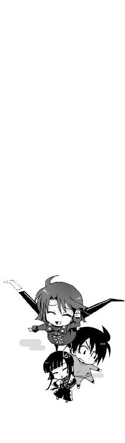
六章
久しぶりに訪れた老人の丸太小屋は、以前よりも更に異常さを増していた。
前に来たときには少なくとも、建物の外観だけはまともなログハウスだったはずである。
しかし今はひと目で普通ではないと判別できた。なにしろ建物の壁一面に、でかでかと渦巻き模様が描かれて、あまつさえその模様がぐるぐると回転を続けているのである。
どうやら渦巻き模様を描いた壁は、古風な水車になっているらしい。
山から引いてきた湧き水を集めて、ゆったりと水車を回しているのだ。裏側に回ると、趣のある木製の軸や水受けが見える──ただの水車のままにしておけばいいものを。
「パラシュートがついてるなら、最初からそう言ってくださいよ......」
朱浬さんに肩を借りて歩きながら、僕は疲れ果てた声でそう言った。
嵩月は僕たちの背後を歩きながら、うなだれて肩を落としていた。僕に抱きついて悲鳴を上げてしまったことを、反省して落ちこんでいるらしい。しかしあんな状況では、あれくらい当然だと思う。
「どうしたの、二人とも？ もう着いたよ」
生気のない僕たちを見て、朱浬さんはおっとりと笑いかけてくる。小学生の遠足を引率している近所のお姉さん、といった雰囲気だ。さっきまでの重苦しい会話がまるで嘘のようである。
しかし、紫浬だと名乗っていたころの記憶や人格も、朱浬さんの中には残っているはずで、それを考えると彼女の態度のどこまでが本物なのか僕には判断できなかった。女の子が考えていることはさっぱりわからない。
「こんにちはー」
怪しい丸太小屋の扉を、朱浬さんは躊躇なくノックする。
嵩月は困ったようなタレ眉になって、ちらちらと僕の様子をうかがっていた。潮泉老人は、いちおう嵩月の祖父であり、僕たちが彼を訪ねていくという状況は、嵩月にとって少し複雑な気分なのだろう。普通の祖父なら問題ないが、なにしろあんな感じだし。
しかし丸太小屋で僕を出迎えたのは渦巻き柄の爺さんではなく、もっと意外な人物だった。
「や、お疲れッス。意外と遅かったスね？」
「──な!?」
渦巻き模様の座布団の上で茶をすすっている男の姿に、僕は間の抜けた声を出して驚いた。
羊羹を切り分けている爺さんの肩越しに、タレ目の男子学生が頼りなく笑いかけてくる。
「ま、真日和......!? なんでこんなところに......？」
「はあ。依頼人の姉さんにたぶんここだって言われたんで、先回りして来たっすけど」
真日和秀は事も無げに言ってきた。
しかし、うちからこの丸太小屋までは、車を使っても一時間近くかかるはずなのだ。ジェットエンジンでぶっ飛んできた僕らよりも早く着くというのは納得いかない。どんなトリックを使ったというのだ。
「うちのヴィヴィアンは、敏捷いのが取り柄ッスよ。さっきの怪我がなかったら、もうちょっと早く来られたッス」
「そうか......すごいね」
ずっと身構えているのも馬鹿馬鹿しくなって、僕は肩の力を抜いた。真日和のほうも、今すぐ僕たちをどうこうしようという気はなさそうだ。
「──よく来たな。遠慮せず上がっていきなさい」
部屋の奥から潮泉老人の声がする。干涸らびたような印象の小柄な老人だ。若い頃はひとかどの人物だったのだろうと思わせる、威厳のある顔立ちをしている。が、着ている服が渦巻き模様のアロハシャツでは、ただの変な爺さんにしか見えない。
愛嬌のある瞳を細めて、老人は美味そうに煙管を吸った。
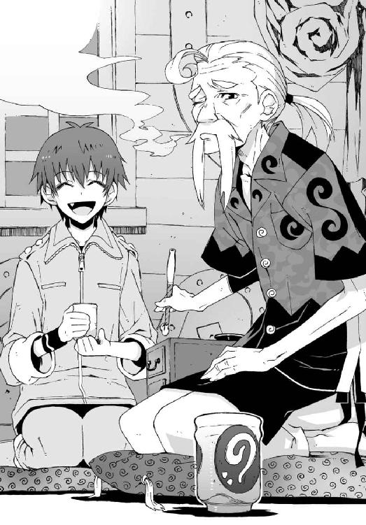
「お爺さま」
めずらしく強い口調で言って、嵩月が老人を睨みつけた。どうやら老人の体調を心配して、煙草をやめろと言っているらしい。なまじっか綺麗な顔をしているだけに、こんなときの嵩月はちょっと怖い。叱られた子どものように肩を落として、老人は悲しそうに煙管を置いた。
「──しかし、きみたちのほうも酷い有様じゃな」
話題を変えるためなのか、老人は嵩月から目を逸らして僕に話しかけてくる。
「はあ、まあなんと言いますか」
僕は疲れた笑顔を浮かべてみせた。
熱を出して寝こんでる最中に派手な戦闘に巻きこまれ、薄着のまま十数キロの距離を飛行。あげくにスカイダイビングの真似事までさせられて、僕はこのまま死ぬのではないかというぐらい消耗していた。
嵩月だって貧血気味でふらふらしているし、朱浬さんに至っては右腕が壊れてまともに動かないような状況である。老人が呆れるのも無理はない。
「とりあえず、羊羹でも喰って落ち着きなさい。今、熱いお茶を淹れてあげよう」
「すみません......ありがとうございます」
僕たちは老人に勧められるまま、真日和の隣に腰を下ろした。卓袱台に置かれていた羊羹を見て、思わず、うぐ、と声を漏らしそうになる。羊羹の断面が渦巻き模様になっていた。どこで売ってるんだろうこれ。
老人と嵩月がお茶を沸かしに行ったので、僕は軽くため息をつき、
「それで今度はなんの用だよ？ まさか、まだスタビライザを狙ってるわけ？」
真日和に顔を寄せながら小声で訊いてみる。
さっきまでは素直に謎ケースを渡してもいいと思っていたが、今は少し事情が変わった。操緒を生き返らせる手がかりになると聞かされては、僕としても簡単にスタビライザとやらを手放すことはできないのだ。
しかし深刻な僕の口調とは対照的に、真日和はあっさりと首を振った。
「それはもう忘れて欲しいッス──ＧＤには解雇されたッス」
「解雇？」
「期限内に依頼を完遂できなかったんで、契約を打ち切られてしまったッスよ。今は違約金のかわりにメッセンジャーをやらされてるだけッス。タダ働きッス。最悪ッス」
恨みがましい表情で真日和が言う。そんなことを言われても同情してやる気にはなれないが。
「メッセージって？」
「それはここに......」
真日和は作業服の胸ポケットから、一通の封筒を取り出した。うやうやしく頭を下げて朱浬さんに渡す。受け取った朱浬さんは左手だけで中の便箋を取り出し、怪訝そうにそれを眺めた。
「............」
長い長い沈黙が訪れた。
朱浬さんは、便箋を見つめたまま動かない。それほど長い手紙だとも思えなかったのだが、同じ文章を何度も何度も読み返しているらしい。
異様な静けさに息苦しくなって、僕は真日和と互いに顔を見合わせた。それでも朱浬さんは反応しなかった。真日和は、僕と一緒にしばらく朱浬さんの反応をうかがっていたが、
「夏目クン、ヨーカン食べないのならもらっていいッスか？ 美味いッスよ、これ」
「............」
緊張感のない男だな、コイツも。
「あの......朱浬さん？ なんて書いてあるんですか？」
僕はおそるおそる彼女に声をかけてみた。しかし朱浬さんは振り返りもしなかった。無視されたというよりも、僕の声が聞こえていないような雰囲気だ。
彼女がここまで真剣になるなんて、よほど難解なことが書かれていたのかと、僕が怪訝に思いはじめたとき、
「うふふふふふ......」
どこからともなく無邪気な笑い声が聞こえてきた。
真日和と僕は、麻痺したように動きを止めた。朱浬さんが微笑みを浮かべている。いつもと変わらない、おっとりとした笑顔。
それがどこか不自然に引きつっていることに、僕たちは気づいていた。
三日月型に細められた朱浬さんの瞼が痙攣し、唇からは奥歯の軋むような音が聞こえてくる。
「瑤ったら......もう......」
ぐしゃ、と朱浬さんの掌の中で手紙が握りつぶされた。朱浬さんが怒ってる。これは絶対怒ってる。僕と真日和はガクガクと肩を震わせた。この人が、あの優しかった紫浬さんと同じ人物だとはもう絶対に思えない。
「朱......朱浬さん......？」
「──瑤が取引を持ちかけてきたわ」
僕の言葉を遮るようにして、朱浬さんが言った。
なんだ取引か、と僕は思った。瑤の立場を考えれば、それほど意外な提案ではない。朱浬さんがここまで怒るほどのことではないと思う。
「指定の時間は今日の十九時。潮泉家の能楽堂の前で」
「十九時って......」
僕は、壁にかかっていた渦巻き模様のアナログ時計を見上げた。午後六時二十五分と四十秒。
「あと三十分ちょっとしかないじゃないですか!?」
いくらなんでもそれはまずい。たった三十分では、破損した朱浬さんの右手を修理する時間がない。消耗しきった嵩月の体力が回復するには、最低でも一晩はかかるだろうし、ましてや僕の風邪が治って《鐵》が再び使えるようになるまでは何日かかることやら。とにかく今は、戦いになったら圧倒的に僕たちが不利なのだ。
「それが瑤の狙いなのよ。あたしたちに態勢を立て直す余裕を与えないつもりなんだわ」
がじがじと爪を噛みながら朱浬さんが言う。なるほど。それは理にかなった作戦だ。
「でも、スタビライザはこっちが持ってるわけだし、無理に雪原さんの決めた時間に行かなくてもいいんじゃ......？」
「そうね。だから瑤のやつ、人質を用意してくれたみたい」
「ひ、人質？」
それって思いっきり犯罪行為ではないのだろうか。少なくとも生徒指導員のやるようなことでないのは確かだ。それにしても朱浬さんをここまで激昂させる人質というのは誰だ？
「人質ってのは言葉のアヤよ。物々交換の材料ってこと」
「あ......」
そうか、取引の道具は人でなくてもモノでもいいわけか。スタビライザと同じくらいに朱浬さんが大切にしている物品ならば。
そういえば僕が瑤と出会った場所は、朱浬さんが住んでいる教会だった。あのときすでに、こうなることを見越して、瑤はあの場所からなにかを持ち出していたのかもしれない。そりゃ朱浬さんが怒るわけだ。
「でも、どうするんですか？ 素直に取引に応じてスタビライザを引き渡すんですか？」
「嫌」
「......や、そんなこと言われても、雪原さんが本当に演操者だとしたら、今のままだと勝ち目ないじゃないですか」
「そうね......わかったわ、真日和──きみ、協力しなさい」
「は？」
羊羹を無心にがっついていた真日和は、いきなり話を振られて、げほげほと激しくむせ返った。細いタレ目をますます細めて、唖然としたように朱浬さんを見返す。
「なんでオレが、わざわざＧＤを敵に回すような真似をしなきゃならないッスか。いやですよ」
「タダで働けとは言わないわよ。科學部の予算半年分でどう？」
「え!?」
僕は驚いて朱浬さんを見た。そんなこと勝手に約束していいのか？ てか、科學部に予算があるなんて、そもそも初耳なんですけど。
「むー......それは、なんというか微妙なセンっすね」
真日和は両腕を組んで真剣に苦悩する。そんなに悩むようなところなのか、ここは。
「きみねえ、奏っちゃん家の羊羹食べたでしょ。トモハルのぶんまで！」
「ええっ!? いや......それとこれとは......」
真日和がめちゃくちゃ迷惑そうな顔をする。
彼が躊躇する気持ちもよくわかるのだが、朱浬さんも引き下がる気はなさそうだ。どのみち真日和の協力がなければ、朱浬さんには勝ち目はないのである。
僕は少し真面目に状況を整理しようとした。紫浬さんと暮らしている間に、僕なりに考えることはあったのだ。朱浬さんだって見た目はこんなんだが、それでも色々なものを背負いこんでいる。ほんの少しでも僕が彼女の助けになれるとしたら──
そういえば真日和のやつ、僕と同学年だとか言ってたっけ？
「あのさ、真日和。今度の試験範囲のノートもつけるけど、どうかな。コピーだけど」
「試験って......来週の中間テストのことッスか？」
真日和が素っ気なく訊き返してくる。僕は黙ってうなずいた。まったく考えこむ気配のない真日和の態度に、やっぱりダメかこんなんじゃ、と諦めかけたとき、
「──やるッス。交渉成立ッス！」
真日和ががっちりと僕の手を握って言った。
「え、そう？」
なんだか、ひどく拍子抜けする。こんなんで良かったのか、本当に？
たしかに真日和は留年して二回目の一年生をやっている。試験に対して僕たちよりも、多少真剣にならざるを得ない理由があるのかもしれない。とにかく本人がそれでいいと言っているのだから、僕が文句を言う筋合いもない。
「やー、ありがと。これであたしのほうはどうにかなるわ──あとはトモハルだけだね」
「は......僕ですか？」
にこやかに微笑みかけてくる朱浬さんを見て、僕は嫌な予感を覚えた。待ってくれ。無力な一般人の病人に、これ以上なにをさせるつもりだ？
「とりあえず熱を下げましょう。トモハルの熱が下がれば、操緒ちゃんが復活する。操緒ちゃんが復活すれば、機巧魔神が喚べる──簡単な理屈でしょ？」
「それは......理屈はわかりますけど、三十分やそこらで熱を下げる方法なんて、そんなのあるわけないじゃないですか」
昨日、熱を出してぶっ倒れてから丸一日以上が経っている。が、僕の風邪は一向に回復する気配を見せていない。体調が悪化するような行動ばかりとっているのだから当然だ。
病院で点滴なり注射なりの治療を受ければ、少しは改善するだろうが、それでも三十分ではどうにもなるまい。こんなことになるのなら、さっさと医者に診てもらっておけばよかったと後悔する。明日になったら朝イチで病院に行くことにしよう。明日まで僕の命があれば、だが。
「──方法なら......あります」
そこにお茶を運んできた嵩月が、突然とんでもないことを言ってきた。
僕は、ぎょっとして彼女を見上げた。戻ってきていきなり、なんてことを言い出すんだ。
や、頼むからちょっと待ってください。キミや朱浬さんはどうか知らんが、僕はただの一般人で、あまり手荒なことをされると簡単に壊れてしまうんですよ？
「あー......大丈夫です......たぶん。夏目くんのお兄さんも、前に使ったことがあるはずです」
嵩月が頼りない口調で告げた。
僕は苦いモノを喰ったような気分で黙りこむ。彼女がここまで言うからには、本当になにか心あたりがあるのだろう。しかし今イチ不安が拭いきれない。兄貴が絡んでると聞かされては余計に心配になってくる。
「じゃあ、奏っちゃん──トモハルのことはお願いね」
朱浬さんが一方的にそう言った。僕の意思確認はなしですか？
「あっ......はい」
嵩月がほんの少し嬉しそうにうなずいた。今さら信用できないから嫌だとか、言い出せそうにない雰囲気だ。
瑤との約束の時間まで三十分を切っていた。朱浬さんがおもむろに立ち上がり、老人になにかを頼みに行く。その間に真日和が僕に近づいてきて、
「大丈夫ッス。人間、少々のことじゃ意外に死なないもんッスよ」
「............」
それって慰めになってないよなあ、と思いながら、僕は長いため息をついた。
○
潮泉家の能楽堂は、老人の丸太小屋から見てちょうど山の裏側にあった。入母屋造りの大きな建物だ。相当に古い建築で、緑深い庭園に囲まれて荘厳な雰囲気を漂わせている。
少し離れた歩廊の先には、こぢんまりとした庵があった。嵩月が借りて一人で住んでいる、かつて能楽堂の茶室だったという庵室である。
真日和の風獣に乗っけてもらって僕たちが能楽堂前に着いたとき、その嵩月の庵室の前で、大学生くらいの歳の女性が待っていた。以前に一度だけ会ったことがある。老人のもう一人の孫娘──嵩月の従姉のお姉さんだ。
前に見たときはラフなジーンズ姿だったが、今の彼女は女医さんみたいな白衣を着て、前髪をピンで留めていた。黒縁の眼鏡なんかもかけていて、ずいぶん雰囲気が違っている。
「──こんばんわ、律都さん」
朱浬さんが、白衣のお姉さんに挨拶した。彼女がこんなふうに誰かに頭を下げる姿なんて実は初めて見た。お姉さんは、朱浬さんの壊れた右手を見てちょっと眉を上げ、
「ずいぶん派手にやっちゃったね。あとで直してあげるからね」
オモチャを壊した子どもを叱るような口調でそう言った。
「はい。いつもすみません」
朱浬さんが、ちら、と舌を出して肩をすくめる。小柄なお姉さんより二十センチくらい背の高い朱浬さんが、今はまるで甘えたがりの妹のように見える。そんな彼女の姿が少しだけ、僕と一緒にいたときの紫浬さんの面影に重なった。
しかし朱浬さんの腕を直すって──嵩月の従姉はいったい何者だ。
「でも、とりあえず今はこの子たちのほうを」
「うん、お爺さまに聞いてるわ──奏ちゃん、智春くんを連れてきて」
白衣の裾を翻して、律都さんは庵室の中に入っていった。
優しそうな物腰の割になんとなく逆らえない雰囲気で、僕と嵩月は、言われるままに彼女のあとに続いた。しかし、もしかして僕の熱を下げるというのも今から彼女がやることなのか？ いくらなんでも彼女は医者には見えないが。
「............」
そういえばたしかこの人も、うちの兄貴の知り合いだったはずだ。そのことを思い出して、僕は激しく不安になった。あの男には幼いころから、やつが調合した怪しげなクスリを飲まされたり、人体実験と称して変なツボを突かれたり、ロクな目に遭わされていないのだ。
「あ......大丈夫、だと思います......律都ちゃんはしっかりした人ですから」
怯えている僕を心配して、嵩月が声をかけてきた。しっかりした、とかってなんだかアバウトな表現なのがまだ少し不安だが、あの朱浬さんが頼ってるくらいだから、信用してもいいのかもしれない。と、
「あっ......」
庵室の三和土に上がるところで、嵩月がいきなりふらついて倒れた。貧血で眩暈を起こしたらしい。とっさに彼女を支えようとして、僕は自分の視界がぐらりと反転するのを感じた。そういえばこっちも熱でふらふらなのだった。
「でっ......」
僕と嵩月はもつれ合ってその場にぶっ倒れた。後頭部を土間にぶつけて、僕は危うく意識を失いかけた。嵩月の髪が仰向けの僕にふわりと降りかかり、甘い匂いが鼻腔を包む。
重い、というよりは柔らかい彼女の体重を感じて、僕はそのまま動けなくなった。嵩月が、僕に身体を預けてきている。
「ごめんなさい......」
嵩月が、ぽつりとつぶやいた。や、べつにいいんだけど、できれば早めに退いて欲しい。このままではヘンな気分になってしまいそうだ。
しかし、なぜか嵩月は動かなかった。それどころか嵩月の胸の圧迫感がますます強くなったような気がする。彼女が僕にしがみついているのだと気づいて、僕は少し困惑した。彼女の息が、泣き声のように震えた。
「ごめ......んなさい......わたし、約束したのに......」
「え？」
なにを言われているのかわからなかった。嵩月は今回の出来事とはまったく無関係で、ただ巻きこまれただけである。ましてや僕が風邪をひいたことで彼女が謝る理由なんか微塵もない。
「ごめんなさい......操緒さんのかわりに夏目くんを守るって......言ったのに......わたし......」
「あ......」
頭の中でなにかがつながって、意識が冷めていくのを僕は感じた。驚愕と焦りで、唇を噛む。
「嵩月......もしかして嵩月がうちの地下にいたのって......」
思い出した。嵩月は、僕が機巧魔神に頼ることをひどく怖れていて、喚び出してはいけないと何度も警告していた。操緒のかわりに自分が僕を守るから、機巧魔神を使わないでくれと言ったのだ。
嵩月はそのときの約束を、ずっと忘れていなかったのだろう。
だから彼女は、鳴桜邸の地下にこもっていたのだ。真日和の使い魔が僕の近くに潜んでいると気づいたから。彼女は一人で、僕を守るという約束を果たそうとしていたのだ。約束のことを僕が忘れてしまっていても、それでも。
「──気持ちはわかるけど、奏ちゃん一人でどうにかなることじゃないと思うわ」
倒れている僕たちの頭上に屈みこんで、律都さんが言ってきた。
そうそう、と僕はうなずいた。まったく従姉さんの言うとおりだ。嵩月が責任を感じるようなことじゃない。謝るとしたらむしろ僕のほうで──
「契約者を持たない悪魔が、成体の使い魔を相手に勝てるわけないじゃない。本気で智春くんを守ろうと思うなら、さっさと彼を押し倒して契約しちゃえばよかったのよ──」
あっさりと無茶なことを言う従姉さんを見上げて、僕は絶句した。そういう話じゃないだろ、と首を振る。しかし嵩月は、なにやらものすごく納得した様子で、
「あー......」
そんな感動したような表情を浮かべられても困るのだが。くそ、やはりあの渦巻き爺さんの血縁だけあって、この従姉さんもやっぱりどっかズレている。
「......それはどうッスかね」
そんな僕らの足下にしゃがみこんで、ぼそり、とつぶやいたのは真日和だった。
僕はようやく身体を起こして、彼を見た。そういえば、使い魔を連れているということは、真日和にも契約相手の悪魔がいるはずだよな。たしか風斎とかいってたか。
「契約とか......言葉にするのは簡単ッスけど、口で言うほど生易しいことじゃないッスよ──」
普段の彼らしからぬ、重苦しい口調で真日和は言った。
奇妙な重みのある彼の言葉に、僕は眉を寄せた。なぜ彼が突然そんなことを言い出したのかわからなかった。彼の契約悪魔がここにいないことと、なにか関係あるのかもしれない──が、
「きみは余計なこと言わないでいいの！」
「がっ」
朱浬さんにぐーで殴られて、真日和は頭を押さえてしゃがみこんだ。
「それよりあたしのほうを手伝いなさい。でなきゃ報酬を払わないわよ──」
「殴らなくてもいいじゃないスか......」
朱浬さんにずるずると引きずられながら、真日和は庭先へと出ていった。空中から舞い降りてきた彼の風獣が、二人を乗せて再び闇の中へと消えていく。
「さ......こっちも始めましょうか。奏ちゃん、お布団を敷いてあげて」
庵室に上がった僕に向かって、従姉さんが毛布を投げてきた。こんなときに部屋に布団なんか敷いて、なにをするつもりなのだろう。クラスメイトの女子の家の布団。それだけでなんとなく緊張してしまう。
「もうすぐ準備ができるから、それまでは温かくしておいてね」
従姉さんはそう言い残して、台所へと入っていった。なにかを煮こんでいるのだろうか。薬草のような薬品のような、形容しがたい不気味な臭いが漂ってくる。
僕が思い描いた甘い期待は、その一瞬で打ち砕かれた。まあ、どうせこんなことだろうとは思っていたけどな。
軽くため息をつきながら、僕は毛布を被って壁にもたれた。
「──！」
僕の心臓が、ドクン、と締めつけられるような痛みを伝えてきたのは、そのときだった。
○
「──来た」
僕はつぶやいて障子を開けた。
嵩月の庵室の窓からは、能楽堂の前の風景が見渡せた。
庭園を散策するために設けられた、玉砂利を敷き詰めた広場である。美しい能楽堂の建物を、月光が淡く照らしている。
そして生い茂る緑の木々の隙間から、一人の少女が現れた。
ブレザーの胸元の紋章には、ＧＤの文字が刺繍されている。男子のような恰好をした涼しげな美少女──雪原瑤。彼女の姿を見た瞬間、僕の心臓が音を立てて軋んだ。
不快な気分ではなかったが、呼吸ができなくて胸が苦しい。それでも彼女から目を離せないでいる僕の手を、嵩月が強く握ってきた。その嵩月の顔がまともに見られない。なんなんだ、この後ろめたい感覚は。
「──どこにいるんだい？ 出てきなよ、黒崎朱浬」
ゆっくりと視線を巡らせながら、瑤が言う。男性役の女優のような、涼やかなアルトの声に僕の胸がざわめく。
瑤の背後に、一瞬だけ淡く、彼女の射影体が浮かび上がった。
最初に見たときは、長く伸ばした髪のせいで気づかなかった。ただ誰かに似ているとはずっと思っていたのだ。朱浬さんだ。
瑤に憑いている幽霊の少女は、朱浬さんとまったく同じ顔をしている。
「出てこないと、こいつを読み上げることになるけどね──」
悪戯っぽい笑みを浮かべて、瑤はポケットから一枚の便箋を取り出した。彼女のイメージにそぐわない、少女趣味の可愛らしい便箋だ。
返事がないことを確認して、瑤はたたんであった便箋を開いた。そして滔々と読み上げる。
「──〝お姉様とお呼びしてもいいですか？ 入学式の日に初めて貴女を見たとき──〟っと」
ばふっ、とくぐもった銃声が響き、瑤は、ひょいと身体をずらして弾丸をかわした。彼女がつまんでいた便箋が、散弾に撃ち抜かれて半分ほど吹き飛んでしまう。
「瑤！」
朱浬さんが能楽堂の柱の陰から姿を現して、鋭く叫んだ。彼女の左手の手首から、内蔵された銃口が突き出して、薄く硝煙を噴き上げていた。
「あなた趣味悪いわよ！ 中学時代にもらった手紙を今さら持ち出してくるなんて──！」
朱浬さんが顔を真っ赤にして叫ぶ。
嵩月と僕は窓越しに、その光景をアホの子のように放心して見つめていた。
察するに、瑤が取引の材料として持ってきた「人質」というのは、今の手紙のことなのだろうか。そして朱浬さんの言動を総合すると、あの手紙を書いたのは朱浬さん本人だと。
お姉様とお呼びしてもいいですか......って。
「女子校なんかに通ってると、女の子からラブレターをもらうのは日常茶飯事だけどね」
ちぎれた手紙を弄びながら瑤が言う。それはまあ、あんたの場合はそうかもな。
「でもやっぱり、きみたち双子が書いたやつは断トツ面白かったよ。読み返すと今でも笑えるから、捨てずに取っておいたんだけど。ほら、まだこんなにある──」
瑤はポケットから取り出したパステルカラーの便箋を、ババ抜き中のトランプのように扇形に広げて見せた。十通以上はあるだろう。
「──あなたのそういうところが嫌いなのよ！」
朱浬さんが叫んで、左手のショットガンを連射する。いつものゴム弾ではない。実弾だった。殺すつもりで撃っているとしか思えない。
瑤はその攻撃をよけなかった。ポケットに両手を突っこんだまま、無防備に突っ立っている。
そんな彼女の足下から、銀色の光が迸った。
瑤の影の中から突き出した銀光が、彼女の目の前の空間を薙ぎ払って消えた。
朱浬さんがまき散らした弾丸が、いつの間にか消えていた。瑤の身体を撃ち抜くこともなく、見えない裂け目に呑みこまれたように、跡形もなく消滅していた。
「くっ......」
朱浬さんの表情がかすかに揺らいだ。僕の心臓の鼓動が激しくなっていく。
「無様だね、朱浬」
瑤が静かに首を振る。朱浬さんは表情を消して瑤を睨んでいる。
「──その身体、機巧魔神の部品を移植して動かしているわけか。自分自身を副葬処女として、機巧魔神の人柱にするとはね......そのシステムを組み上げた人間は天才だね。たいしたものだ。せっかく拾った命、それで満足して、おとなしく普通の生活を過ごしていればよかったのに」
瑤は持っていた手紙を束ねて、朱浬さんのほうに突き出した。
「この手紙はきみに返すよ。スタビライザと引き替えにね。素直に取引に応じてくれればＧＤに銃を向けたことは見逃してあげるよ──ほかならぬボクの射影体に免じてね」
「──見逃してもらうのは、あなたのほうよ、瑤」
朱浬さんが強気な口調で言う。瑤は少し不思議そうに首を傾けた。
「洛高の生徒会を通さずに実力行使なんて、いくらＧＤでも越権行為ではないの？ 学生連盟の本部はこのことを知ってるわけ？」
「べつに本部に逆らっているわけではないよ」
瑤は余裕めいた苦笑を浮かべる。
「黒科学の拡散を防ぐことがうちの盟主の意志だからね。正直にいえば、ボクはスタビライザなんて役立たずの機能拡張には興味はないんだ。どうしてきみがあんなものにこだわるのか理解に苦しむ。そうまでして、紫浬に会いたいのかい？」
「あたしは──」
「それが無様なんだ、朱浬──未練だよ。あの飛行機事故の日に紫浬が守ろうとしたのは、きみじゃなくてボクだ。きみは彼女に捨てられたんだ、朱浬」
「うるさいっ！」
朱浬さんの全身を、青白い火花が包んだ。両肩と脚のハッチが開いて、内蔵ミサイルが問答無用でばらまかれた。結局こうなるのか、と僕は目を覆った。無事に取引が終わってくれればいいと本気で祈っていたのに。
「あたしとあの子の区別もつかなかったあなたに、そんなこと言う資格なんて──！」
朱浬さんが放ったミサイルが、上空から雨のように瑤へと降りそそぐ。
しかし瑤は醒めた表情のまま動かない。ただ舌打ちして朱浬さんを睥睨し、
前髪をかき上げ、凛と叫んだ。
「白銀──抜刀！」
月光が落とす瑤の影が変質した。暗く、夜の闇よりも暗く、虚無の色へと。
彼女の細い影をこじ開けるようにして、巨大な腕が迫りだしてくる。銀色に輝く鎧をまとった、巨大な機械人形の腕が。
その瞬間、僕はようやく理解した。
瑤に初めて出会ったときから感じていた、懐かしさにも似た強い感情。一目惚れかもしれない、とまで思っていた。だが違った。それは僕が彼女に対して抱いた感情ではなかった。
機巧魔神の共鳴だ。
僕の影に封印された《鐵》が、瑤の機巧魔神に反応して放っていた想いだったのだ。
佐伯兄の《翡翠》や、土琵湖に沈んでいた《藍銅》には感じなかったこの共鳴が、どうして瑤の機巧魔神にだけ起きたのか、その理由も今わかった。
瑤の影の中から浮かび上がってきた、機械仕掛けの銀色の悪魔。
巨大な剣を構えた魔神の姿は、鏡で映したように《鐵》とまったく同じものだった──
○
「白銀──！」
月明かりに照らし出された夜の庭園に、瑤の美しい声が響く。
銀色の魔神が、右手の巨大な剣を振るった。刃に魔方陣をまとった銀色の刀身が、なにもない空中に虹のような軌跡を描いた。
その厚みのない銀色の平面に触れた瞬間、朱浬さんの撃ったミサイルは吸いこまれるようにどこかに消えていった。さっきの銃弾とまったく同じだ。あの剣には、空間を切って裂け目を造り出す能力があるのだ。
「空間そのものを切断する能力......あれが、雪原さんの機巧魔神の力か......」
僕はかすれた声を漏らした。
朱浬さんが、残っていたミサイルをすべて撃ち出した。しかし、それらはあっさりと《白銀》が切り裂いた空間に呑みこまれていった。
機巧魔神は、悪魔の叡智を盗み出して造られた兵器である。その能力は人類の持つ技術水準を遥かに超えて、超人的な力を持つ朱浬さんをも圧倒する。
「──嵩月、僕はどうすればいい？」
どうしようもない焦りを感じながら、僕は無言の嵩月を問い詰めた。戦闘が始まってしまった今となっては、どんな治療を試しても間に合わない可能性のほうが高い。
しかし、銀色の魔神の力は圧倒的で、このままでは朱浬さんが敗北するのは確実だった。彼女が持っている謎ケースも奪われてしまうだろうし、それどころか朱浬さんの命も危ない。
「もう少し──もう少しだけ待ってください。律都ちゃんの薬ができるまで、あと少しだけ」
「薬って......」
嵩月が言っていた熱を下げる方法というのは、従姉さんが調合している解熱剤のことか。
速攻で効くというからには静脈注射かなにかだろうが、一時的にでも熱さえ下がれば、操緒が復活してくれるのだ。この際、多少痛い思いをしても、文句は言わないことにしよう。
僕がそんな悲壮な覚悟を決めている間にも、朱浬さんたちの戦いは続いていた。
「あきらめてスタビライザを渡しな、朱浬」
瑤が、怒気を含んだ声で叫ぶ。
「その右腕では、もう魔神の力は使えないだろう──おまえはボクたちの敵じゃない！」
「あなたはいつもそうね、瑤──自惚れというのよ、そういうの！ 真日和っ！」
「──なに!?」
朱浬さんの合図と同時にすさまじい突風が巻き起こり、土煙を噴き上げて瑤を襲った。真日和の風獣の能力だ。
ちっ、と舌打ちして瑤が、機巧魔神を喚び戻す。瑤を背後に庇った《白銀》は、壁のように空間を裂いて風獣の奇襲攻撃を防いだ。
その間に朱浬さんは駆け出して、植えこみの中に隠してあった新たな武器を引っ張り出していた。彼女の背丈の倍以上もある長大な砲身。塹壕戦に使う軍用の大砲である。
「護法榴弾砲だと──そんなもの、どこから持ってきた!?」
さすがに驚いた声で瑤が叫んだ。朱浬さんは、唇の端を吊り上げて微笑んで、吼える。
「発射──っ」
「くっ」
瑤が唇を噛んでうめき、《白銀》が障壁を展開するために剣を振り上げた。
その機巧魔神の巨体がぐらりと揺れた。叩きつけるような突風が、《白銀》を横薙ぎに襲ったのだ。真日和の使い魔の風撃である。
「裏切ったか──巡礼者商連合っ！」
憎々しげに叫ぶ瑤たちへと、朱浬さんの大砲が撃ちこまれた。黒科学の技術で強化された砲弾が、巨大な爆発を引き起こす。
「......裏切り者呼ばわりは心外ッス。解雇したのはそっちッスよ」
使い魔の影に隠れて、真日和がぼやく。
そんな彼のつぶやきは、砲声と爆音にかき消された。朱浬さんがありったけの護法砲弾を、ここぞとばかりに撃ちまくっているのだ。
「真日和、次っ！」
撃ち尽くした榴弾砲を投げ捨てて、朱浬さんが叫んだ。
運び屋と化した風獣が、朱浬さんのための巨大な武器を持ってきた。鳴桜邸の地下にある科學部の倉庫から、真日和に命じて運んでこさせた代物だ。
背中に背負った巨大なロケットランチャーと、両腕に六連装のガトリング砲が二門。そして両脚に装着する増設用のミサイル弾倉。それらすべてを装備した朱浬さんは、もはや目の前のすべてを破壊する火力の化け物だった。
「発射──っ！」
すさまじい爆圧で地面が揺れた。衝撃で庵室の壁がぎしぎしと軋む。美しかった庭園は炎に包まれ、地面が月面写真のように陥没していた。無茶苦茶だ。
それでも朱浬さんの攻撃は止まらない。空薬莢を豪雨のように吐き出しながら、爆炎の中で揺れる機巧魔神のシルエットめがけて撃ちまくる。
「あ......あ......」
嵩月がおろおろとつぶやいた。いくらなんでもまずいと僕でも思った。このままでは生身の瑤はおろか、《白銀》の中に封印された副葬処女まで死んでしまう──と。だが、
「だめだ......逃げて、朱浬さん......」
胸を押さえて僕はうめいた。再び心臓が疼き出し、強烈な圧迫感に耳鳴りがやまない。炎に呑みこまれた銀色の影の、緑色の瞳が開くのがわかる。
『闇より深き深淵より出でし──』
大地を揺るがすほどの轟音の中で、その静かな声が僕の耳にははっきりと聞こえた。
賛美歌を奏でるような美しい声音。そして蠢く歯車のような耳障りな残響。僕は声の出ない喉を締め上げるようにして叫ぶ。
「逃げろっ......朱浬っ！」
『──其は科学の幻影を裁く剣！』
銀光が、炎の中で閃いた。
巨大な剣のようなその光は、無差別に四方へと飛散して、触れるものすべてを切り裂いた。
ギッ、と低い悲鳴を上げて、危険を察知した風獣が真日和をつかんで上空へと飛んだ。その透きとおった美しい毛皮が、血を噴き出して真紅に染まる。
「──ヴィヴィアン!?」
真日和が驚愕のうめきを漏らした。ヴィヴィアンの巨体が、ぐらりと地上に落ちて跳ねた。風獣の障壁を容易く無視して、《白銀》の刃が真日和の使い魔を切り裂いたのだ。
「きゃ......」
ほとんど同時に朱浬さんも悲鳴を上げていた。
彼女が撃ちまくっていたガトリング砲が、中央ですっぱりと切り落とされていた。ずたずたに裂けたミサイル弾倉が、小さく誘爆を起こして吹き飛んだ。
傷ついた脚から火花を散らして朱浬さんは地面に転がった。信じられないものを見るように、彼女が真紅の瞳を見開く。
ようやく晴れてきた爆煙の中から、銀色の魔神が姿を現した。
朱浬さんの目元を、絶望に似た表情がよぎった。
機巧魔神は無傷だった。さすがにあちこち薄汚れているものの、損傷とよべるようなものは見あたらなかった。朱浬さんや真日和の力が足りなかったのではない。この銀色の機巧魔神が、異常なほどに強過ぎるのだ。
《白銀》の背後から現れた瑤も無傷だ。
しかし彼女の表情からは、先ほどまでの余裕めいた態度が消えている。
まるで朱浬さんなど存在しないかのように、ゆっくりとあたりを見回して、そして地面に転がっていた銀色のケースに視線を止めた。
朱浬さんが、はっ、と顔を上げてケースに手を伸ばし、それを両手で抱きしめる。
瑤はもうなにも言おうとせず、ただ無表情にそれを見下ろしている。
「うー......」
嵩月が低くつぶやきながら、立ち上がって窓に手をかけた。朱浬さんを助けに行くつもりなのだ。
「駄目だ、嵩月！」
彼女の細い腰にしがみついて、僕は無理やり嵩月を引き留めた。今の彼女の体力では、機巧魔神相手の戦闘など不可能だ。いや、たとえ彼女の体調が万全でも、あの銀色の魔神には歯が立つまい。それほどまでにあの機巧魔神は強過ぎる。
「行かせてください！」
嵩月が、僕の手を振りほどこうとして叫ぶ。
「駄目だ、行くな」
「いやっ、行かせて！ でないと──」
「──コラっ！」
律都さんの声がして、ぽか、と間の抜けた音が響いた。
乳鉢のような陶器を持った律都さんが、ちょっと怖い顔で僕たちのことを睨んでいた。頭をはたかれた嵩月が、きょとんとした顔で従姉を見上げる。
「きみたちね、高校生なんだから変な声を出さないの。慎みってものがあるでしょ？」
「いや......あの、今のはそういうのとは違って......」
僕はおろおろと首を振り、嵩月はますます怪訝顔になる。
そして律都さんは、にっこりと微笑んで言った。
「できたよ、薬。待たせてごめんね」
「あ」
ようやくか、と僕は息を吐いた。今から薬を打ったところで、間に合うかどうかはわからない。しかし今は律都さんの薬以外に、僕が頼れるものはないのだ。
「じゃあ......早速お願いします」
そう言ってシャツの袖をめくった僕を、律都さんは不思議そうに見た。
「あ、注射じゃないから、上着はそのままでいいよ。そのかわりお布団にうつ伏せになって」
注射ではないという彼女の言葉に、僕は激しく落胆した。錠剤か粉末かシロップか......どちらにしても経口薬では、吸収されて効き目が現れるまでに時間がかかりすぎる。
それともやはり、黒科学的な怪しい魔法薬だったりするのだろうか。うう、それも嫌だなあ。
「市販薬より断然すごいやつだから──だいたい五分あれば、とりあえず熱は下がると思うわ」
律都さんが少し自慢げに胸を張る。ちょっと待った。五分で治るって、それはいくらなんでも強力すぎないか？
「あ、あの......もしかして副作用とかは......」
「え？ それはあんまり心配しなくても大丈夫だと思うけど。どちらかといえば漢方薬に近いやつだから、よっぽどひどいアレルギーがなければ」
「漢方って......」
とても信じられなかった。そんなすごい薬が作れるのなら、特許をとったら大金持ちになれるのではないかと思う。それとも潮泉家はすでに金持ちだから、そういう特殊な薬が使えるのだろうか？
とにかく即効性で副作用もないというのだから、もはやためらう理由はなかった。よっぽど苦いとかマズイとか、落とし穴があるとすればその程度だろう。
「あれ......でも、薬を飲むのに布団にうつ伏せって......」
本当はもっと早く気づくべきだったのだろう。律都さんは、少し楽しそうに笑って首を振り、
「うつ伏せでいいのよ。経口薬じゃないから」
「経口じゃないって......塗り薬とかですか？」
そういえば熱が出たときには、脇の下を冷やすといいっていうものな。うん、そう。そうに違いない。しかし律都さんは、違う違うと首を振る。
「じゃあ、もしかしてハリ治療とか......」
「違うよ。ただの座薬。腸から直接吸収されるから、効果が現れるのが早いの」
「ざ......」
僕は律都さんが持っていた乳鉢の中身を見て絶句した。
そこにはＮＡＴＯ軍の制式ライフル弾みたいな、流線型のぶっとい錠剤が乗っていた。極太、と書かれた油性マジックの映像が、脳裏を唐突に駆け抜けた。
待ってください、座薬というのは、つまり後ろの穴から挿入するアレのことですか。
なんでこんなところで、と僕は思った。いろんな意味で、こんな薬を使うのは無理だ。てか、こんなの入らないだろう。絶対無理。
「う、うちの兄貴がこれを使ったことがあるって......本当ですか？」
「直貴が？ まさか」
律都さんは軽く笑い飛ばす。
「使ったことがあるのはうちのお爺ちゃんよ。直貴は、材料になる薬草をネット通販で買ってくれただけ。冬に使ったぶんがまだ残っていてよかったわ」
「............」
僕は恨みがましい視線を嵩月に向けた。ちゃんと説明してくれないから、完璧に誤解してしまったじゃないか。
そして世にも怖ろしいことに、その間、嵩月はいそいそと手袋をはめていた。薄いゴム製の手袋である。医者が手術のときに使うような半透明の──そんなものをはめていったいなにをするつもりなのでしょうか？
「ちょ、ちょっと待った──！」
僕は叫んで駆け出した。急いでこの場を離れないと、怖ろしいことが起こるような気がした。
しかし律都さんの真横を駆け抜けようとしたとき、彼女が僕の手首をつかみ、
「えいっ」
触れられた、と思った瞬間に僕の身体は半回転して、布団の上に叩きつけられていた。
突然の出来事に、なにがなんだかわからなかった。たぶん合気道のようなものらしい。
考えてみれば嵩月の従姉である彼女が、見た目どおりの一般人であるはずがなかったのだ。体術だけなら、ひょっとして嵩月よりも強いのではないだろうか、この人。
そして投げられた僕が朦朧としている間に、律都さんは、僕のズボンをあっさりパンツごと引きずり下ろしていた。そして後ろ手を搦めとって僕の動きを完全に封じこめ、
「──じゃあ、奏、お願い」
お願いってアンタ、嵩月になにをさせる気だ!?
「大丈夫よ。最初は痛いかもしれないけど、すぐに慣れるから──力を抜いて」
律都さんが僕の耳元に唇を寄せて囁いてくる。
いや、そんなことを甘い声で言われても、べつに慣れたくないですから。
「大丈夫です」
嵩月が真面目な口調でそう言った。メスを握る外科医のような手つきで慎重に錠剤をつまみ上げ、動けない僕の背後に回る。ギロチン台に載せられた死刑囚というのは、きっとこんな気持ちなんだろうと思う。大丈夫って......なにがだよ？
「わたし──保健委員ですから」
僕は絶句して動きを止め、それを好機と見た嵩月が、精密かつ素早い動きで治療を開始する。彼女のひんやりとした細い指の感触と、硬く尖った──
「ぅわあああああああ──っ」
僕は虚しく悲鳴を上げた。
あとで律都さんが語ったところによると、それは女の子みたいで可愛い声だったそうである。
○
能楽堂の周囲には、白煙が濃霧のように立ちこめていた。《白銀》の追撃から逃れるために、朱浬さんがまき散らしたスモークである。煙の中に姿を消した彼女を、瑤は猟犬のように追っている。
「しぶといな──その努力だけは認めてやるよ。たとえ無駄な努力でもな」
瑤が冷ややかにため息をついた。
彼女が《白銀》を喚び出して、すでにかなりの時間が経っていた。
しかし瑤の表情に焦りはない。
人工的に造られたものとはいえ機巧魔神とは悪魔であり、それを制御する演操者には相応の精神力が必要だ。強力な機巧魔神とは、悪魔としての本能が強い機械ということであり、機巧魔神が強力であればあるほど制御は困難になっていく。それでも瑤は、《白銀》を完全な形で制御し続けていた。
「時間を稼いでいるつもりなら無駄だよ。ＧＤがどうして怖れられているのかを、知らないわけじゃないだろう？」
瑤は淡々と言葉を紡ぐ。中学時代の朱浬さんが、彼女にラブレターを送りたくなる気持ちもわかる。並の男性アイドルなんかよりも、はるかに瑤は恰好よかった。
そして同時に残酷でもあった。
「──白銀！」
瑤が自らの機巧魔神を呼んだ。銀色の魔神が剣を掲げ、その剣を鮮やかな魔方陣が包んだ。
振り下ろした銀色の剣の軌跡が、虚空に空間の裂け目を描く。
その直後、静かな風が吹き始めた。澱んでいた空気が渦を巻き、風の流れが勢いを増す。
それと同時に、朱浬さんの焚いた煙幕がしだいに薄くなっていった。《白銀》が生み出した空間の裂け目へと、周囲の大気が流れこんでいるのだ。
どことも知れない別の空間へと呑みこまれ、煙幕の粒子が消えていく。
そして完全に煙が晴れたとき、能楽堂の前には傷ついた黒衣の少女が立っていた。
「さあ、終わりにしようか」
ふわり、と瑤は唇を綻ばせた。
完璧すぎるほど完璧な美少年の笑顔だったが、朱浬さんはそれを見て、うんざりしたように失笑した。すべての武器を使い果たした彼女の手には、銀色の金属ケースだけが残されている。それを彼女は無造作に放り投げた。
瑤と彼女。二人のほぼ中間の場所へと。
玉砂利の上に転がって、ケースは乾いた音を立てる。
「ようやくあきらめたのかい、朱浬？」
瑤は失笑して首を振る。そしてケースのほうへと一歩足を踏み出した。
銀色の剣を提げた機巧魔神が、ゆっくりとケースに腕を伸ばす。
「これでわかっただろ。きみがやっていることはすべて徒労。しょせんただの自己満足だと」
朱浬さんはなにも答えない。けれど、瑤を見つめる彼女の唇には、淡い微笑が浮かんでいた。それはやがて、満足げな本物の笑顔に変わる。
違和感を感じたように、瑤が足を止めた。
その眼前に、一人の少女が現れた。空中に溶け出すようにゆっくりと。
彼女の爪先は、ほんのわずか地面から浮いている。仄かに輝く身体越しに、背後の景色がうっすらと透けている。
色素の薄い髪を虚空に漂わせた、弾けるような笑顔の少女だ。強い意志の輝きを瞳に宿して瑤を睨み、
『──無駄な努力でも、自己満足でもなかったわよ。そう思っていたのはあなた一人だけ』
「きみは......!?」
瑤の瞳に、初めてはっきりと動揺が浮かんだ。
そんな彼女の不意を衝くように、強い光が能楽堂前の広場を照らした。
光源の正体は炎だった。嵩月奏の炎の舞。残されたわずかな体力を振り絞って彼女が舞い、生み出された無数の火球が、まばゆく闇を照らし出す。
嵩月の炎が照らしていたのは、僕の背中。
地上に落ちた僕の影は、夜闇の中でなおくっきりと長く伸び、投げ出された銀色の謎ケースに届いている。
『闇より暗き深淵より出でし──』
瑤の前に浮かんでいた操緒がゆらりとかき消え、声だけを残して僕の影に消えていく。
「あれが夏目智春の射影体......どうして今ごろ......」
瑤が驚きを隠さずにうめいた。そのぶんだけ彼女の反応は遅れた。
僕の影が、異界へと続く虚無の闇へと姿を変える。その闇色の通路をこじ開けて、機械仕掛けの巨大な腕が現れる。漆黒の機巧魔神の腕──
その拳は濃縮された闇を握りしめ、その腕はまばゆく回転する七枚の魔方陣をまとっている。
「しまった......彼らの狙いは──白銀っ！」
瑤が叫んだ。銀色の魔神が咆吼を放ち、剣を振るった。
だが遅い。
『──其は科学の光が落とす影！』
完全に実体化した漆黒の魔神が、濃密な闇に包まれた拳を振るった。
黒い拳撃──七枚の魔方陣を通ることで加速された重力球を、拳に載せて撃ち出したのだ。
立ちはだかる銀色の魔神を吹き飛ばし、その足下に落ちているケースを奪い取ろうとする。
同時に、瑤の《白銀》も斬撃を放っていた。空間をも切り裂く〝銀の剣撃〟が、《鐵》の重力球と正面から激突し──
「うわっ！」
「ちっ」
二体の機巧魔神の攻撃は互いに干渉して進路をねじ曲げ、誰もが予期せぬ方向へと破壊をまき散らした。重力球は《白銀》の目の前の地面へと、そして斬撃は《鐵》がつかみ取ろうと手を伸ばしていた謎ケースへと。
「白銀っ......」
瑤が苛立ったように低くうめいた。
陥没した地面に足をとられて、銀色の魔神が大きく体勢を崩していた。
絶対的な攻撃力を誇る《白銀》も、自らが地面に埋もれかけた状態では、不用意な攻撃が放てない。不安定になった岩盤に空間切断の刺激を与えては、新たな土砂崩れを招く危険があるからだ。
そして謎ケースが破壊されたことで、焦ったのは僕たち科學部のほうだった。
空中に生み出された空間の断層が、ケースの持ち手の部分を呑みこんだ。
あり得ないほどの綺麗な切断面を残して、ケースの上端が消滅した。
留め具を失ったケースのフタが、バネ仕掛けのように勢いよく開いて、中に収められていた部品を吐き出した。懐中電灯ほどの大きさの、金属製の筒である。
どこかに埋めこんでください、といわんばかりに、ごちゃごちゃした金属製の端子が上下に突き出している。おそらくあれがスタビライザ──朱浬さんが言ってたプラグインというやつに間違いない。
しかし切断された空間の断層はまだ完全に閉じていなかった。
空になったケースのフタが、見えない亀裂に呑みこまれて一瞬で消滅する。そのままの勢いでケースの残りも喰われていく。そして地面に落ちた筒状のプラグインも、ころころと空間断層のほうに転がっていこうとした。
「──つかまえろ、鐵！」
僕がそう叫んだのは、むしろ当然のことだったと思う。
機巧魔神の反応は素早かった。無数の歯車がうなりを上げて機体を旋回させ、巨大な腕が、弦を弾くような音色とともに突き出された。そして巨体に似合わぬ精密な動きで、プラグインをしっかりとつかみ取る。
朱浬さんが悲鳴を上げたのは、まさにその瞬間だった。
「駄目、トモハル！ 機巧魔神がプラグインに触れたら──」
「......え？」
唖然とする僕の目の前で《鐵》は、つまみ上げたプラグインをじっと見つめた。
そして自分の目の高さにまでゆっくりと持ち上げたかと思うと、鎧状になった顔面の装甲を、パカ、と開け──
ひょい、とそれを自分自身の内部へと放りこんだ。
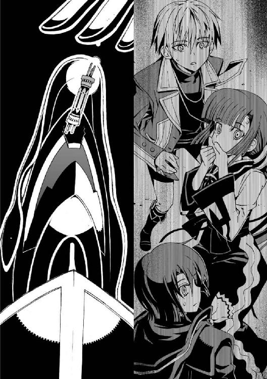
そして何事もなかったかのように装甲を閉じる。まるで咀嚼するような仕草である。
僕はそれを為すすべもなく見つめていた。
え？
「あ......ああ......」
朱浬さんが、弱々しくつぶやいてぐったりと座りこんだ。
嵩月は目を丸く見開いて立ち尽くしている。
時間が止まったような沈黙が訪れた。誰もが身じろぎもせずに月光の下で立ち尽くしていた。
役目を終えた《鐵》は、ずぶずぶと僕の影の中に沈んでいった。見れば、瑤も自分の機巧魔神を影の中に戻し、陥没した地面の縁に脚を投げ出して座っている。
いつの間にか戻ってきていた操緒が、僕の隣にふわふわと浮かんでいた。笑っている彼女の懐かしい瞳を見上げて、僕は短く息を吐いた。
きっとまた調子に乗るだろうから、口にするつもりはない。けれど認めよう。嬉しいとか、幸せというのとは少し違う。喩えるなら見上げた夜空に浮かぶ月と同じようなもので、ないよりもあったほうが落ち着くというだけで──まあ、今はそういうことにしておこう。つまり、
やはり操緒がいてくれたほうがいい。
「......食べちゃった、ね」
その操緒が、他人事のような口調で言った。
そうだな、と僕はつぶやいた。朱浬さんは地面に突っ伏して、いじけた子どものようなため息をついていた。気持ちはわかる。結局スタビライザは《鐵》の腹の中に収まってしまったわけで、どうやったら取り出せるのか見当もつかない。
こういう場合どうなるんでしょう──と、僕は瑤を見つめた。
彼女もスタビライザを回収できなかったことになるわけだが、特に怒っているようには見えなかった。そのことがかえって気にかかる。
「──帰る」
そして瑤は一方的にそう宣言して立ち上がり、汚れた服を軽く払った。
むう、と身構えている操緒と、途方に暮れる僕の顔を、彼女はなぜか複雑な表情を浮かべて見比べ、それからちょっと恰好いい仕草で笑った。
「頑張りなよ、夏目クン──」
なに今の、と操緒が訝しげに目を瞬き、去っていく彼女を僕はぼんやりと見送った。
どういう意味だ？
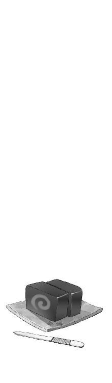
∴ エピローグ
血まみれになって落下した真日和と彼の使い魔は、それからすぐに、ひょっこり戻ってきた。
「──終わったッスか？ いやあ、今回はひどい目に遭ったッス」
タレ目を細めてぼやきながら、真日和はタオルで流れた血の跡を拭う。遠目には瀕死の重傷に見えた風獣の怪我も、間近で見るとかすり傷もいいところだった。墜落したままぴくりとも動かないので、それなりに心配していたのに......死んだふりかよ。
「仕方ないじゃないスか。ＧＤ相手にガチの殴り合いなんて、あの報酬額ではやってらんないッス。割に合わないッス。夏目クンも、あんなすごい機巧魔神持ってんなら、最初から出してくださいよ」
「......べつに出し惜しみしてたわけじゃないよ。ワケがあってさ」
僕は疲れた声でつぶやいた。今も残る尻の違和感に顔をしかめた僕を、操緒が不思議そうに見下ろしていた。不幸中の幸いというかなんというか、操緒には消えていた間の記憶が残っていないらしい。どうやって自分が復活したのか知ったら、彼女はどんな顔をするだろうか。
「終わった、のかな。雪原さん、最後はずいぶんあっさり引き下がった気がしたけど──」
「まあねえ」
真日和は、がりがりと頭をかきながら、僕の足下の影を見た。彼の使い魔は、不用意に近づこうとした僕を、ギ、と鳴いて威嚇する。どうも僕は嫌われているらしい。最初に犬よばわりしてしまったせいかもしれない。
「鐵が取りこんでしまったのなら、ＧＤの姉さんとしても、スタビライザを取り戻す理由はなくなったッスからね。だいたいＧＤの右手と左手が戦うなんて、本来あり得ないッスよ」
「......デストラとシニストラ......」
初めて耳にする単語だった。見上げた操緒も、もちろん首を横に振る。
ところで真日和は、どうして僕の機巧魔神の名前を知っているのだろう。そういえば前に佐伯兄も、《鐵》の姿を見て驚いた顔をしていたが──
「鐵は本来ＧＤの機巧魔神ってことッスよ。機巧魔神はもともと数が少ないんスけど、特に金属の名前を冠したやつは全部で十体しかいないッス。ＧＤってのはそいつらを操る十人の演操者のことを言ってたッスよ。昔の話ッスけどね」
「え......そんな話、僕は聞いたことないけど......？」
この機巧魔神だってほとんど兄貴に押しつけられたようなものだし、今さらそんなことを聞かされても困る。
「それも変な話ッスよね。鐵の演操者といえば盟主の側近〝左手〟ッス。あの雪原瑤と対等の立場ッスよ。だから今回もスタビライザを譲ってくれたんだと思うんスけど──」
「そうかなあ......」
僕は疑わしい気分で真日和の言葉を聞いた。たしかに《白銀》の空間切断に対抗できるのは、空間を歪める《鐵》の重力制御だけなのかもしれないが、僕と瑤では演操者としての実力に差がありすぎる。対等の立場ってことはないだろう。
さっきは奇襲だったからどうにかなったが、もし瑤が本気で戦っていたら、今ごろ僕たちはどうなっていたかわからない。
「気になるなら調べてみてもいいッスよ。鐵のこととかＧＤのこととか......ここから先は別料金になるッスけど」
「え......」
金とるのか、と僕は唇を歪めた。やけに親切にいろいろ教えてくれると思ったら、営業活動のつもりだったのか。
「......いい。やめとく」
僕は力なく首を振った。巡礼者商連合なんかに調査を依頼したら、いくらふんだくられるかわかったものではない。
「そッスか。まあいいや、もし気が向いたらいつでも声をかけて欲しいッス」
べつに落胆した様子もなくそう言って、真日和は名刺を差し出してきた。僕は、なんとなく断りそびれて受け取ってしまう。
「それじゃ、また──行くッスよ、ヴィヴィアン」
真日和は、へらっ、と営業スマイルを浮かべて僕に挨拶すると、自分の使い魔の名を呼んだ。風獣は契約者を背中に乗せると、そのまま突風をまとって駆け出していった。
尻尾を振りながら走り去っていく後ろ姿を見送って、やっぱり犬だよなあ、と僕は思う。
それから僕は、朱浬さんのほうを振り返った。地面にぺたんと座ったままの彼女は、それに気づいておっとりと微笑んだ。無邪気でどこか幼い微笑。それを見た瞬間、僕はひとつの仮説を思いついた。
記憶をなくした状態の朱浬さんは、どうして双子の妹の名前を名乗っていたのか──
朱浬さんのような目立つ顔が二人もいたら、もっと有名になっているはずだ、と樋口は言った。あいつの言葉は正しかった。朱浬さんには双子の妹がいて、その妹は有名人だったのだ。
三年前。飛行機事故に巻きこまれて、生き残ったのは姉のほうだった。行方不明になった妹は、やがて機巧魔神の生け贄として発見されることになる。
だけど、ほんとうにそうなのだろうか？
引っ込み思案の妹を、しっかり者の姉はいつも支えていた、という。そして今も《白銀》に取りこまれた妹を、姉は生き返らせようとしている。姉である朱浬さんが生き残ったのは幸いだった。気弱な妹を助けることができるとしたら、それはしっかり者の姉のほうだから。
しかし樋口が持ってきた雑誌には書いてあった。妹は神懸かり的な演技力を持っていた、と。
そして朱浬さんは瑤に言ったのだ。あなたにはあたしとあの子の区別がつかなかった──と。
「............」
僕は短く息を吐いて、その考えを忘れることにした。
なんの根拠もない、ただの仮説だ。僕が知っている朱浬さんは朱浬さんで、僕たちはこれからも彼女に振り回され続けるのだろう。
だけどたまに、なら。
そう、たまになら気弱で年下っぽい雰囲気の彼女と暮らしてみるのも悪くないかな、などとちょっと思う。
「──どうしたの、トモハル？」
じっと彼女を見つめたままの僕に、朱浬さんが訊いてきた。
「あ......いや、まだちゃんと言ってなかったな、と思って」
僕は朱浬さんと目を合わせて、少し言い淀んだ。あらたまってこういうことを口にするのは、ちょっと照れる。
「お帰りなさい、朱浬さん」
ああ、と朱浬さんは肩をすくめ、目を細めておっとりと微笑した。
「──ただいま」
『それで結局スタビライザってなんだったの？』
操緒が釈然としない表情で訊いてくる。
そういえば、結局よくわからないままだった。瑤が最後に言い残した言葉も、どういう意味だったのか謎のままだ。機巧魔神の機能拡張だといわれていたが、あれを喰ったからといって《鐵》に変化があったとは思えない。
副葬処女の秘密を解く鍵になるかもしれない、と朱浬さんは言っていたけれど、それが具体的にどういう働きのものなのか、彼女にもわかってないようだ。
それとも知ってて黙っているのだろうか。
僕たちは、いったん嵩月の庵室に戻るところだった。
あちこちぶっ壊れた能楽堂周辺のことを老人に詫びなければならないし、場合によっては、後始末もしなければならないだろう。しかし今はとにかく休みたかった。
律都さんの薬のおかげで熱は下がったが、劇的に体調が回復したわけではないのだ。相変わらず気分は最悪だし、熱で傷んだ身体の節々が悲鳴を上げている。早いところ鳴桜邸に帰って、今度こそなにも考えずにゆっくり眠りたかった。
しかし操緒は、なぜかやけに元気な様子で、しつこく僕に話しかけてくる。
『ん......なんかね、智春が熱を出してる間、ずーっと眠ってたような感じなんだよね。だから体力が余ってるっていうか、目が冴えちゃってしばらく眠れないかも』
「............」
いや、悪いがそれは勘弁してくれ。いろいろあって今回は、本当に死にそうに疲れてるから。
『だから結局なにがどうなってこんなことになったのか、全然わかってないんだよ。きっちり説明してくれるまで今夜は寝かせないからねっ』
やっぱりそうなってしまうのか、と僕は絶望的な気分になった。
誰かほかの人に訊いてくれ、と言いたいところだが、朱浬さんも嵩月も僕と同じくらいボロボロなのでそれもできない。てか、そもそも、
「説明しろと言われてもな......僕もわからないことのほうが多いからさ。答えられることなら、答えてやるけどさ」
『──じゃあ智春は、なんでそんな急に熱が下がったの？ 操緒が復活したとき嵩月さん家の布団で倒れてたのはどうして？ あとなんでガニ股になってんの？』
「ぐ......」
早口で並べられた操緒の質問に、僕はただ絶句した。嵩月が耳まで顔を赤くしてうつむいてしまう。それを見た操緒がむっと不審そうに唇を尖らせ、
「──あ、お帰り。智春くん、薬効いたみたいだね」
タイミングの悪いことに、嵩月の庵室の玄関が開いて、白衣の律都さんが僕たちを出迎えた。
律都さんはずいぶんのんびりした表情で、自宅の裏山で派手にミサイルが飛び交ったりしていたことも、全然気にしていないようだ。さすがはあの老人の孫というべきか。
『薬？』
操緒が首を傾げて僕に訊いてくる。
そのとき律都さんが唐突に顔を上げた。僕と嵩月と朱浬さんの顔を順番に見回し、そして空中を漂っている操緒を見上げて目を留めた。普通人であるはずの彼女は、見えないはずの操緒をじっと見つめ、ちょっと楽しそうに唇を波打たせて訊いてくる。
「......その子、誰？」
え？
○
その日は朝から教室の中が騒がしかった。
中間テストの初日である。
とりあえず熱が下がったあとも咳、鼻水、関節や喉の痛みなどの風邪の諸症状に苦しんで、僕は三日ばかり学校を休んだ。そして気づくとテスト当日を迎えていたわけである。
当然、試験勉強など終わっているはずもなく、僕は登校後のわずかな時間も惜しんでノートと参考書を広げている。心が乱れているせいか、さっきからちっとも覚えられない。
「なあ、智春──知ってるか？」
そんな僕に向かって、迷惑なことに樋口が話しかけてきた。テスト前だというのにずいぶんな余裕だ。いったいなんの話だよ？
「うちのクラスに転校生が来るかもしれないって」
へえ、と僕は生返事をした。その噂なら、登校してきた直後に、べつのクラスメイトからも聞かされていた。教職員トイレの前を通りがかった生徒が、たまたま教師たちの会話を聞きつけてきたらしい。
「どうも怪しい話だよな。こんな時期に転校してくるなんて、なんか裏があるんじゃないか？」
真面目ぶった口調で樋口がつぶやく。たしかに今はまだ五月の半ばで、入学式を終えてからまだ二カ月も経っていない。樋口の疑問はもっともである。
転校生が来るというわりには、教室に新しい机が届いているわけでもなかった。そのあたりのことも今回の噂の信憑性が疑問視されている原因らしい。
「けどな、知らない顔の女子が校長室から、柱谷やんと一緒に出てくるのを見たってやつもいるんだよ。そいつがいうには、嵩月にも匹敵するハンパねえ感じの美人だったらしい」
きらきらと目を輝かせて樋口が言う。
「......そんな期待しないほうがいいと思うけど」
僕はぼそりとつぶやいた。あん、と樋口が目をしばたたき、
「おい、智春。それってどういう──」
言いかけたところで、教室の入口ががらりと開いた。朝のＨＲの時間だった。散らばっていた生徒たちが、かつてないほどの素早さで自分たちの席に戻っていく。みんな噂を気にしていたのだ。
「あ......おはようございます」
担任の柱谷教師が、静まりかえった教室の雰囲気に気圧されたような表情を浮かべて言った。
もともと気弱なイメージの教師だが、今日はいつもよりさらに頼りなく見える。
彼は長いため息をついたあと、意を決したように教室に足を踏み入れた。
その柱谷のあとに続いて、洛高の制服を着た少女が一人入ってくる。
クラスの全員が、固唾を呑んでそれを見つめた。誰からともなく、おお、と低いどよめきが漏れた。少女はうっすらと微笑んで、僕たちのほうへと振り返った。
教壇に立った柱谷が、かつかつとチョークの音を立て、黒板に女子生徒の名前を書いた。
「──今日は皆さんに編入生を紹介します」
柱谷に促されて、彼女が前に進み出る。ほっそりとした綺麗な少女だ。
透けるように肌の色が白く、淡い色の瞳が目立つ。色素の薄い髪がふわりと広がり、新品の上履きを履いた爪先は、教壇から少しだけ浮いていた。
杏が目を大きく開けて唇を結んでいる。佐伯妹はふて腐れたように頬杖をついている。僕の前の席に座った嵩月が、緊張したように肩を震わせた。
「あー......知っている人もいると思うけど、彼女は夏目くんに憑いている幽霊だから」
柱谷がものすごく言いづらそうな口調で告げる。
僕は彼の言葉を無視して、単語帳に記された英単語の解説を見つめていた。
スタビライザ【stabilizer】──安定装置。
機巧魔神の機能拡張。副葬処女の秘密を解く鍵になるかもしれない部品。なるほど、たしかに朱浬さんの説明は間違ってはいなかった。頑張りなよ、というのはもしかしてこういう意味だったのですか、雪原さん。
重力を無視した動きで柔らかな髪を揺らして、編入生はクラスメイトたちに会釈する。
『水無神操緒です。よろしくお願いします──』
誰の目にもはっきり見えるようになった幽霊の少女が、そう言って少し照れたように笑った。
その日の僕のテストの成績が、かつてないほどに最悪だったのは言うまでもない──。
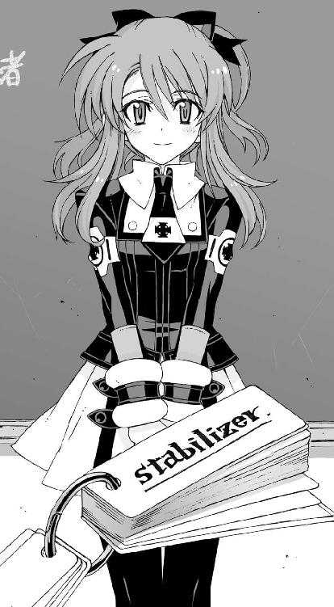
あとがき
近所に犬喫茶ができました。
そういう店を正確になんと呼ぶのか知りませんが（ドッグカフェ？）、犬連れで食事ができる喫茶店です。この喫茶店で仲良くなった常連の犬と遊ぶのと、近所の公園で猫をからかうのが、ペット不可のマンションに住んでる私の最近の楽しみだったりします。
アスラクラインの原稿なんかも、たまにこの喫茶店で書いてるわけなのですが、ちょうど新たな使い魔の名前を考えているときに、
「──ヴィヴィアン」
と、愛犬の名を呼ぶ品のいい老婦人の声が。ほうほう、ヴィヴィアン。なかなかノーブルで上品な感じのお名前ですなあ、とリボンなんかがついてる可愛らしい小型犬を想像して振り返った私が見たのは、のっそりと歩いてきた、体重六十キロくらいありそうな真っ黒い超大型犬ニューファンドランドの姿でした。
でかいよ。でかすぎるよ、ヴィヴィアン！
とまあ、本文と関係あるのかないのかよくわからんような、そんな話。
そんなわけで三雲です。アスラクライン③をお送りします。早くも三冊目のアスラクライン、というか、そんな早くもないですね。普通です。
今回は病人がいっぱいの話でした。看病したりとかされたりとかのアレです。病気も怪我もできれば避けたいものですが、看病してくれたり、お見舞いに来てくれる人がいるというのはいいですよねえ。
寝こんでいるときって体力的にはしんどいんですが実はヒマなので、誰かがかまってくれるだけで幸せというか（しかし給食の残り物のコッペパンはいらん）。普段わりと頑丈な私みたいなタイプは、ちょっと体調悪いといきなり弱気になったりするので尚更。
知人の作家さんに聞いた話で、病気で入院してるときに初めて（お見舞いでもらった）電撃文庫を読んで面白かったので作家になろうと思った、という人がいて、その気持ちはなんかすごくわかる。自分もそういえば似たような体験をしたことがあるなあ、とか。
この『アスラクライン』という作品も、気持ちが弱っているときに読んだ人が少しでも元気になれるような作品に仕上がっているといいなあ、と思います。というわけで、この寒い季節、体調を崩したりして休んでるお友達のお見舞いに一冊いかがでしょうか？
あったかい気分になれる、かどうかは保証しませんというかできませんが......
今回のエピソードのメインは朱浬さんでした。
気づいた方もいると思いますが、この巻から本文中の彼女の呼称が「朱浬さん」とさん付けになってます。智春の中で彼女に対する距離感がちょっと変化してるので、それを反映して切り替えてみました。こちらのほうが自然になったと感じてもらえると嬉しいです。ちょうど本文の内容もそんな感じのエピソードだし。
皆さま薄々お気づきのとおり、朱浬さんは実はそれほどキャパの大きいタイプではありません。いつもニコニコ余裕かましているように見せてますが、内心ではわりといっぱいいっぱいだったりするみたいです。智春たちの前ではお姉さんぶってる彼女が、直貴や瑤あたりと二人でいるときどんな雰囲気なのかというのは、ちょっと気になるところです。しかしなんか色々露出度高めなのは、やはりお姉さんキャラだからなのか。
そういえば二巻のあとがきで真のヒロインがどうとか言ってたのは、もちろん今回のラストでちらっと出てきた転校生のことです。やっぱりこの手の話には転校生が出てこなきゃ......って、いろいろツッコミたい気持ちはわかりますが許せ（実は真のヒロインというのは『電撃ｈｐ』誌に掲載された番外編『アスラクライン・Ｐ（ポータブル）』の彼女のほう、という噂もあったりなかったり......）。
それから拡張機能（＝エクステンション）とプラグインは違うものです、という指摘もありそうですが、機巧魔神の仕様では、そこらへん厳密には区別しないみたいです。
まあそんなわけで操緒の出番が増えそうだったり、ようやく公認生徒会が全部出そろったり学生連盟とかも出てきて、この世界の構造が少し鮮明になってきた感じです。
このまま少しずつ大きな物語も動き始めていきますので、これからもおつき合いいただけると幸いです。それではまた。
三雲岳斗でした。
三雲岳斗
大分県出身横浜市在住。第五回電撃ゲーム小説大賞《銀賞》受賞作『コールド・ゲヘナ』でデビュー。最近の趣味はパソコン用のキーボード集め（だと勝手に決められた）。めずらしいキーボードをご存じでしたら教えてもらえると喜びます。
和狸ナオ
１９７６年生誕の千葉県民。くじ運は最低ながら今回挿絵を描かせて頂き、実はすごく仕事運が良いのでは...?!と人生見直しております。遅咲きな絵描き兼ぬるいゲーマーですが、よろしくどうぞ。
電撃文庫
アスラクライン③
やまいはきから
三雲岳斗
二〇十二年八月十日 配信
発行者 塚田正晃
発行所 株式会社アスキー・メディアワークス
〒一〇二−八五八四 東京都千代田区富士見一−八−十九
(C)2006 GAKUTO MIKUMO／ASCII MEDIA WORKS
本書（電子版）に掲載されているコンテンツ（ソフトウェア／プログラム／データ／情報を含む）の著作権およびその他の権利は、すべて株式会社アスキー・メディアワークスおよび正当な権利を有する第三者に帰属しています。
法律の定めがある場合または権利者の明示的な承諾がある場合を除き、これらのコンテンツを複製・転載、改変・編集、翻案・翻訳、放送・出版、公衆送信（送信可能化を含む）・再配信、販売・頒布、貸与等に使用することはできません。